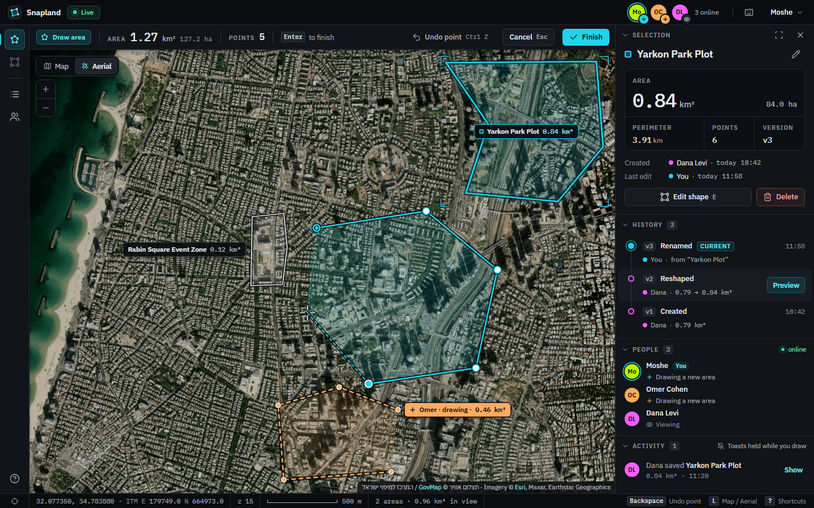
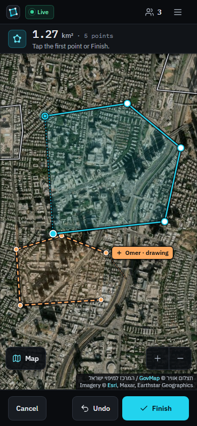
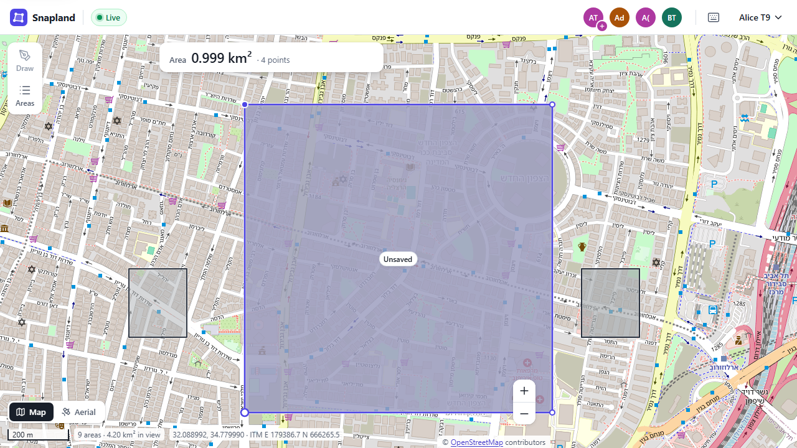
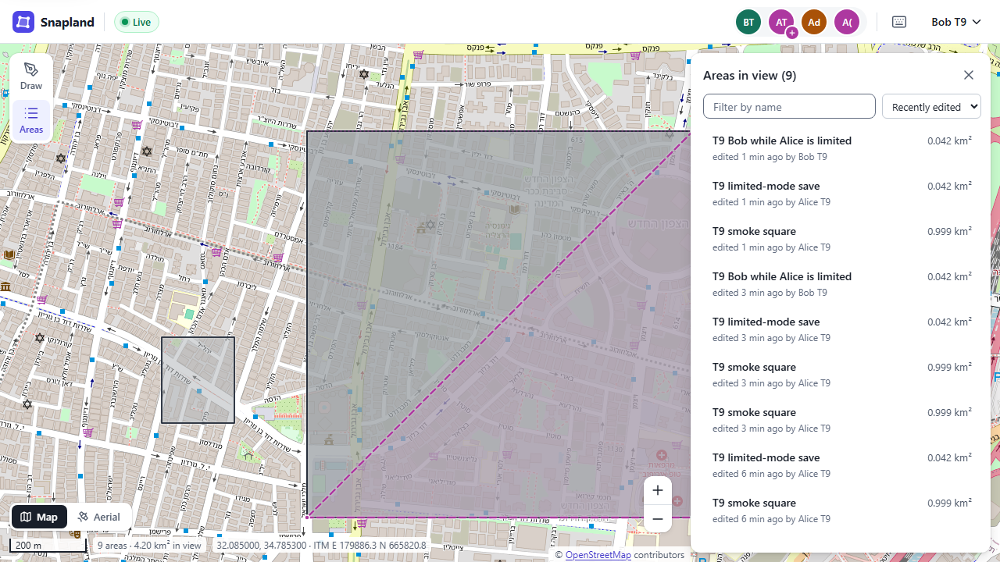

Contents10 chapters
- 1What we are building and why
- 2Designing the system: from requirements to architecture
- 3The database: PostgreSQL, PostGIS and geodesy
- 4The backend: Fastify foundation, security and authentication
- 5Areas: validation, versioning, conflicts and caching
- 6Real-time: the WebSocket gateway and cross-instance fan-out
- 7The frontend: React, Leaflet, custom drawing and projections
- 8The frontend: real-time client, conflicts and resilience
- 9Running it: Docker, nginx, configuration and scaling
- 10Testing and quality: how we know it works
A course in ten chapters
Snapland — How this app was designed and built
A collaborative GIS application where several people draw and analyse areas on one map in real time, read end to end: the requirements, the design decisions, the database, the backend, the WebSocket layer, the React frontend, the containers, and the tests that prove it all works.
Who this is for
You are comfortable with JavaScript, TypeScript and React, and you know SQL. You have not built with PostGIS, WebSockets, Docker or nginx before. By the end you should be able to explain how Snapland works in an interview, and build such a system yourself. Every claim points at a real file in this repository, with a path and, where it helps, line numbers; nothing here is invented.
How to use this course
- Read the chapters in order. Each one starts with the problem it solves and the reasons behind the design, then walks through the real code in short excerpts. Terms are defined the first time they appear.
- Keep the repository open. Paths such as
backend/src/app.ts:39-48mean "that file, those lines". Line numbers are a snapshot of the final code of 2026-09-29; the shape of the code is what to remember. - Do the "Try it yourself" exercises. Every chapter ends with exercises against the running app at http://localhost:5173 or the test suites, followed by a five-question self-check whose answers unfold below it.
- Watch for the "Architecture vs. code" notes. The code went through a simplification pass on 2026-09-29, and decision D-7 deleted the GovMap 2025 tile proxy. The chapters describe the final code, and these highlighted notes mark what is durable (the architecture), what that pass changed, and what is just the current file layout.
- Diagrams are part of the text. Each concept that needs a picture has one; the diagrams are embedded in this file, so it works offline as a single page.
How to run the app
You need Docker Desktop running and Node.js 22 (Node is only used to create the local .env file). From the repository root (README.md, "Run it with Docker"):
node scripts/setup-env.mjs # creates .env from .env.example with a random JWT secret (safe to re-run)
docker compose up -d --build # builds the images and starts the whole stack in the background
docker compose ps # wait until every service is "healthy"Then open http://localhost:5173, sign up, and draw. To see the real-time features, open the app in a second browser (or an incognito window), sign up as a second user, and draw in one window while watching the other. The API reference is at http://localhost:5173/docs and the readiness check at http://localhost:5173/health/ready.
For hot reload during development, keep the databases in Docker and run the backend and frontend on your machine (Chapter 1, §4.2): npm ci, then docker compose up -d postgres redis redis-cache, npm run migrate -w @snapland/backend -- up, npm run dev -w @snapland/backend and npm run dev -w @snapland/frontend (Vite on port 5174, so the Docker stack on 5173 can keep running). The test suites are npm run verify (static checks and unit tests, no Docker), npm run test:integration (real PostGIS and Redis) and npm run test:e2e (Playwright against the E2E stack); Chapter 10 explains them.
Contents
- Chapter 1What we are building and why
The assignment, the product, the four goals (real-time, accuracy, scalability, security), how to run the stack, where the code lives.
- Chapter 2Designing the system: from requirements to architecture
From requirement to architecture: traceability, the system model, one backend instance inside, the shared contracts package, and how the build was run.
- Chapter 3The database: PostgreSQL, PostGIS and geodesy
PostgreSQL and PostGIS for a SQL person: one stored CRS, geodesic area, the GiST index, validation in depth, immutable version snapshots and the purge watermark.
- Chapter 4The backend: Fastify foundation, security and authentication
Fastify from boot to reply: the container, the request pipeline, health checks, JWT access tokens, rotating refresh cookies and the one-time WebSocket ticket.
- Chapter 5Areas: validation, versioning, conflicts and caching
The one write path: validation, rate limits, versioning, optimistic concurrency with three-way merge, the change feed and the bbox cache.
- Chapter 6Real-time: the WebSocket gateway and cross-instance fan-out
The WebSocket gateway: the handshake, viewport interest, Redis pub/sub fan-out across replicas, the two send lanes and the liveness clocks.
- Chapter 7The frontend: React, Leaflet, custom drawing and projections
React chrome over Leaflet: stores and pure reducers, the custom drawing tool, the workspace mode machine, the cross-CRS switch and theming.
- Chapter 8The frontend: real-time client, conflicts and resilience
The browser side of real-time: the RealtimeClient state machine, catch-up after a gap, remote drafts, conflicts and the limited mode.
- Chapter 9Running it: Docker, nginx, configuration and scaling
Containers, the multi-stage image, the compose topology and its boot gates, nginx routing and load balancing, configuration and graceful shutdown.
- Chapter 10Testing and quality: how we know it works
The test pyramid: shared fixtures, unit and integration tests with private databases, Playwright two-user specs, and the verification ladder.
Chapter 1 - What we are building and why
What you will learn
- What the assignment asks for, and how a two-line brief became a product with real users in mind.
- The four goals that organise the design: real-time, accuracy, scalability, security.
- What the running app looks like, and the words this course uses for each part of it.
- How to start the stack, where each piece of code lives, and which chapter covers what.
Why this matters
You know JavaScript, TypeScript, React and SQL. What you have not built before is a system where several browsers edit the same map at once, where the numbers on screen must be geodetically correct, and where everything runs as containers behind a reverse proxy. This chapter gives you the map: what the system must do, why each goal exists, and where to look.
1. The assignment
The brief is short. Its first two lines say what the product has to be:
instractions.md:1-2
Create a collaborative GIS application where multiple users can draw and analyze areas on a
map in real-time, with the ability to switch between regular map and satellite views.Three terms to fix first:
- GIS (geographic information system): software that stores and analyses shapes placed on the Earth. Here the shapes are polygons: closed outlines made of corner points, each a longitude and latitude.
- Area: a polygon that has been named and saved. The app measures it in km²; "analyze" means those measurements: km², hectares, perimeter, point count.
- Real-time: what one user draws appears in the other browsers while it is being drawn, not after a refresh.
The brief lists six groups of requirements (backend, database, security, map integration, real-time drawing, technical challenges) and fixes the stack:
instractions.md:70-74
Technical Stack:
● Backend: Your choice of language with WebSocket support
● Database: PostgreSQL with PostGIS extension (or justify alternative choice)
● Frontend: Any modern framework + Leaflet.js
● No third-party plugins for the collaborative featuresTwo things to notice. PostGIS is the PostgreSQL extension that adds geometry types, spatial functions (such as area on the ellipsoid) and spatial indexes; Chapter 3 is about it. And the last line shapes the code most: no socket.io, no leaflet-draw, no Yjs. The drawing tool, the WebSocket protocol and the conflict handling are written here, and scripts/check-banned-deps.mjs enforces the ban: its BANNED list names those packages, and npm run check:deps fails if any of them appears anywhere in the installed dependency tree.
The brief also says how the work is graded:
instractions.md:84-93
Evaluation Criteria:
● Implementation of real-time features
● Backend architecture and code organization
● Database design and performance considerations
● Security implementation
● Handling of map layer transitions
● Accuracy of area calculations
● Error handling and logging approach
● System scalability and monitoring considerations
● Documentation quality and technical decision explanationsdocs/SPEC.md section 1 turns every bullet into a row: requirement id (R0...R45), design section, implementing files, and the test that proves it. When you wonder "where is X done, and how do we know it works?", start there.
2. The product
2.1 Three people, one map
The UX spec (docs/design/UX.md section 2) designs for three personas; many later decisions make sense only through them:
- Noa, a municipal planner on a large screen, traces parcels on aerial imagery for reports: precise points, live km², undo per point, a version history she can roll back.
- Avi, a field-team coordinator on a phone with patchy 4G, splits a region into work zones while his crews watch: big touch targets, others' drafts labelled by name, a clear connection state, saving that survives a lost socket.
- Rina, a keyboard-first GIS analyst, sometimes with a screen reader, digitises dozens of areas per session: a complete keyboard path and a text alternative to the map.
The diagram names three kinds of traffic. A draft is the polygon someone is drawing right now; it is ephemeral: it lives in memory and in Redis (an in-memory key-value store that both backends share), never in PostgreSQL. A saved area is durable and versioned. Presence is who is viewing or drawing. Only the second reaches the database.
2.2 A tour of the screens
Open http://localhost:5173. The first screen is sign-in (/signin, with /signup one link away); after that there is one screen, the workspace, at /. The routing is tiny: frontend/src/app/router.ts is a History-API router of about fifty lines, and frontend/src/App.tsx (lines 63-80) picks between booting (a silent token refresh, so a returning user never sees the sign-in form flash), signed-in and the login page. The workspace never unmounts while you are signed in.
The workspace uses the Studio design, chosen by the product owner on 2026-09-28 from four concepts (ADR-0010, docs/design/concepts/README.md): a docked frame around the map.

Top to bottom, left to right (file names from frontend/src/components/frame/ and inspector/ unless a path is given):
- Title bar (
TitleBar.tsx): brand, connection pill (Live,Reconnecting,Limited), presence avatars, user menu. - Tool rail (
ToolRail.tsx): Draw area, Edit shape, Areas in view, People, Shortcuts. - Options bar (
OptionsBar.tsx; its content comes fromfrontend/src/components/Hud.tsx, one level up): the drawing HUD with the live area (1.27 km² 127.2 hain the frame), point count, Undo / Cancel / Finish. - The map: Leaflet with a
Map/Aerialswitch. Your draft is solid cyan; others' drafts are dashed in their colour with a chip such asOmer · drawing · 0.46 km²; saved areas are white. - Inspector (
Inspector.tsx), 352 px on the right: Selection, History (one row per version), People, Activity. - Status bar (
StatusBar.tsx): the coordinate readout in two systems (32.077350, 34.783880 · ITM E 179749.0 N 664973.0), zoom, scale bar,2 areas · 0.96 km² in view.
Below 1200 px the inspector becomes an overlay; below 600 px the app uses a phone frame with a one-line HUD and a bottom bar:

Two honest notes: the concepts/1-studio/*.png frames are mockups from mockup.html (their aerial tiles are an Esri stand-in, as notes.md says), and the real screenshots, docs/design/impl-*.png (twelve files) and docs/benchmarks/t9-*.png, were taken before the Studio restyle, so they show the earlier light chrome and violet accent; the behaviour is unchanged.


2.3 Modes
The workspace is a state machine. Exactly one mode is active, and it decides what a map click does: in browse it selects an area, in drawing it adds a point, in naming nothing, because the shape is locked (docs/design/UX.md section 3.4, the table at lines 204-213). The map element carries the mode in a data-mode attribute so tests can read it.
What to notice: Leaflet's double-click zoom is on only in Browse and AreaSelected, where a click selects an area. It is off in every mode where a click places or moves a point (Drawing, EditingShape) and in every locked mode (Naming, SavingNew, SavingEdit, ResolvingConflict, PreviewingVersion), so a fast second click never zooms the map mid-draw. Chapters 7 and 8 read the reducers (frontend/src/state/drawingReducer.ts, editReducer.ts) that implement it.
3. Four goals
The specification states three properties everything else follows from:
docs/SPEC.md:181-183
- **Commands over REST, events over WebSocket** (ADR-0004): every durable mutation goes through one REST write path; the socket carries committed-change events, ephemeral drafts, presence, soft locks and heartbeats. The app stays usable without WebSocket.
- **Stateless backend instances**: durable state in PostgreSQL, shared ephemeral state in Redis; any instance serves any request or socket, with no sticky sessions. Each serves Prometheus metrics on its internal `/metrics` (§10.8).
- **Server-authoritative geometry and area**: the client previews the geodesic area with the same algorithm as PostGIS (geographiclib, Karney); they agree to ~1e-12 on identical coordinates.3.1 Real-time
A WebSocket is a long-lived two-way connection between a browser and a server; unlike an HTTP request, the server can push a message whenever it wants. Snapland opens one socket per browser tab at /ws, with the subprotocol name snapland.v1. The rule of ADR-0004 (docs/adr/0004-realtime-commands-over-rest-events-over-websocket.md, lines 11-18) is that the socket carries events, never commands: area.changed after a commit, draft.updated at most ten times a second, presence, advisory soft locks and heartbeats, only for the viewport each connection declared.
Why it matters: when the socket drops, nothing is lost, because saving never went over the socket. The client falls into a "limited" mode that polls a REST change feed every 5 s; a recorded two-browser run shows a save made in that mode still reaching the other user (docs/benchmarks/t9-smoke.txt, lines 28-33; the harness that produced it is not in the repository). Chapters 6 and 8 cover both sides.
3.2 Accuracy
The Earth is round and a web map is flat. Leaflet draws in Web Mercator, a projection that stretches areas more the further you are from the equator, so measuring a polygon in screen pixels is wrong by a lot:
docs/SPEC.md:777
- **Never** planar Web Mercator area: it overestimates by 1.35–1.42× in Israel and 8.5× at 70° N (fixture `area_km2_webmercator_planar_WRONG`). Validity uses planar lng/lat edges while area uses geodesic ones; negligible within 20°.Instead, every area is computed geodesically on the WGS84 ellipsoid (the Earth model GPS uses): PostGIS ST_Area(geom::geography) on the server, and the same algorithm (Karney's, geographiclib-geodesic) in the browser, so the number you see while drawing is the number that gets saved:
packages/shared/src/geo/geodesic.ts:39-50
/**
* Area in km² of a polygon (exterior minus holes), rings in `[lng, lat]`. A ring may be open (the live drawing: its
* vertices plus the cursor point); a ring of fewer than 3 distinct vertices has no area.
*/
export function geodesicArea(rings: readonly (readonly (readonly number[])[])[]): number {
let areaM2 = 0;
rings.forEach((ring, index) => {
const { areaM2: ringArea } = ringMetrics(ring);
areaM2 += index === 0 ? ringArea : -ringArea;
});
return Math.max(0, areaM2) / 1e6;
}What to notice: this lives in packages/shared, so the frontend readout and the backend tests import the same code. The recorded run shows how tightly the two sides agree:
docs/benchmarks/t9-smoke.txt:21-23
PASS (e) saved areaKm2 = Naming readout ≤ 1e-9 {"areaKm2":0.9986215183067322,"readout":0.9986215183076859,"rel":9.549980254472847e-13}
PASS (d) presence viewing again ≤ 2 s after the save {"ms":84}
PASS (f) Bob's areasInView has the area with the same areaKm2 (≤ 1e-9) {"ms":4,"bob":0.9986215183067322,"saved":0.9986215183067322}Readout and PostGIS differ by about 1e-12 relative on the same coordinates. Chapter 3 explains the geodesy; Chapter 7 the projections and the ITM (Israeli grid) readout.
3.3 Scalability
The assignment asks how you would handle multiple server instances. Snapland does not answer with a paragraph; it runs two from the start: docker-compose.yml (lines 149-206) defines backend-1 and backend-2 from one image, differing only in INSTANCE_ID. A replica is such an identical copy. nginx, a reverse proxy (a server that forwards requests to other servers), sits in front and spreads connections over both:
docker/nginx/nginx.conf:87-91
# least_conn balances long-lived WebSockets better than round-robin (SPEC section 10.10). No sticky sessions: tickets,
# presence and fan-out live in Redis, so any replica accepts any client.
least_conn;
server backend-1:3100 max_fails=3 fail_timeout=10s resolve;
server backend-2:3100 max_fails=3 fail_timeout=10s resolve;What to notice: "no sticky sessions" is the whole scalability story. If Alice's socket is on backend-1 and Bob's on backend-2, Alice's draft still reaches Bob because each backend publishes to a Redis pub/sub channel the other subscribes to.
Where is that proved? Twice. In real browsers, e2e/tests/two-users-realtime.spec.ts puts its two users on different replicas, as SPEC section 12.2 (docs/SPEC.md, line 1334) requires: the test helper records the instanceId of each socket's welcome, and the spec reloads Bento's page until his replica differs from Alma's (lines 21-34), so the draft he then sees must have crossed Redis. In process, a pair of integration tests does the same without a browser: backend/test/integration/system/cross-instance-rest-ws.int.test.ts, the proof SPEC R40 (line 137) names, and realtime/cross-instance.int.test.ts. Each starts two app instances in one process, sharing PostgreSQL and Redis, and asserts that a change on instance A reaches a WebSocket client of instance B within 500 ms. Chapter 6 covers the fan-out; Chapter 9 the compose file and nginx.
3.4 Security
The assignment names authentication, token-secured sockets, CORS, sanitisation, timeouts, an audit trail and one very specific limit, which is a shared constant:
packages/shared/src/constants.ts:74-79
/** The drawing-action limit of the assignment and the generic HTTP limits' defaults (section 10.1). */
export const RATE_LIMITS = {
drawActionsPerWindow: 50,
drawWindowMs: 60_000,
clientErrorsPerMinute: 30,
} as const;The rest (JWT access tokens in memory, rotating refresh tokens in an HttpOnly cookie, one-time tickets to open a socket, a sliding-window limiter in Redis shared by both replicas) is Chapter 4; the audit trail returns in Chapter 10. The diagram also files versioning, conflict resolution and soft deletes here, although the assignment lists them under backend and database (SPEC R5, R11, R20): all three protect saved work from silent loss, so nothing a user saved is overwritten unnoticed or gone for good. Chapter 5 teaches them.
4. The stack, and how to run it
Node 22 + TypeScript with Fastify 5 (the Node HTTP framework the backend is built on) and the raw ws library; PostgreSQL 17 + PostGIS 3.5; Redis 7.4, twice, with different jobs; React 19 + Leaflet 1.9 built by Vite; nginx 1.30; all under docker compose (SPEC section 4.1 pins every version).
4.1 Start everything with Docker
README.md:19-21
cd /d/dev/fullstack/Snapland # or wherever you cloned the repo
node scripts/setup-env.mjs # creates .env from .env.example with a random JWT secret (safe to re-run)
docker compose up -d --build # builds the images and starts the whole stack in the backgroundThe first command exists because secrets are never committed: .env.example holds every setting with a safe default and a placeholder secret, and createEnv() in scripts/setup-env.mjs (lines 16-25) copies it, replacing only the JWT_SECRET= line with a random value. It returns early when .env exists and writes with the wx flag (line 23), so an existing .env is never overwritten.
Then open http://localhost:5173. Three URLs matter:
| URL | What it is |
|---|---|
| http://localhost:5173 | the app (sign up, then draw) |
| http://localhost:5173/docs | the OpenAPI (Swagger) reference, generated from the route schemas |
| http://localhost:5173/health/ready | readiness of the replica that answered: database, Redis, migrations |
A health check is a URL that reports whether a process can serve traffic. There are two, in backend/src/modules/health/health.routes.ts (lines 13-46): /health/live (the process runs) and /health/ready (database, Redis and migrations are fine; 503 otherwise). Compose and nginx wait for the second. Its response schema, ReadyResponseSchema, is a zod schema (zod is a TypeScript schema library: you describe a shape once and get both a validator and a type) from packages/shared that Fastify uses both to validate the reply and to generate the /docs entry: one schema language for validation and documentation (ADR-0002, Chapter 4).
4.2 Development mode
For hot reload, keep the databases in Docker and run the backend and frontend on your machine:
npm ci # install all workspaces (the Docker route in section 4.1 never needed node_modules)
docker compose up -d postgres redis redis-cache && npm run migrate -w @snapland/backend -- up
npm run dev -w @snapland/backend # http://localhost:3100
npm run dev -w @snapland/frontend # http://localhost:5174, proxies /api and /ws to :3100Port 5174 is deliberate: 5173 belongs to the Docker stack, so both run at once (decision D-2, SPEC section 11).
4.3 The tests
npm run verify (static checks and unit tests, no Docker), npm run test:integration (real PostGIS and Redis) and npm run test:e2e (Playwright against the stack built with docker-compose.e2e.yml); Chapter 10 explains them.
5. Where the code lives
The repository is an npm workspaces monorepo: the root package.json lists four packages (packages/shared, backend, frontend, e2e) sharing one lockfile and one set of lint and TypeScript rules; loadtest/ beside them is a single k6 script, bbox.js, which runs in the k6 binary, not in Node. The centre is the shared package:
packages/shared/src/index.ts:1-7
/**
* @snapland/shared - the public API of the contracts shared by backend and frontend (ADR-0001). Consumers import only
* from this entry point; the package's only other export, `@snapland/shared/testing`, holds test fixtures.
*/
export * from './constants.js';
export * from './errors.js';
export * from './text/sanitize.js';Why: a limit, a message shape or an error code changed here changes both sides at once (ADR-0001, Chapter 2).
The backend has one entry point, backend/src/main.ts: it validates the configuration (failing fast with every problem listed), builds a container (the one place that wires implementations together), builds the Fastify app and listens. Lines 27-31 show a pattern you will see repeated: the process starts even when Redis is down, in a defined degraded mode. The features are modules, registered in a fixed order:
backend/src/app.ts:39-48
/** Every feature module, in registration order (stopped in reverse order, section 10.12). */
export const APP_MODULES: readonly ModuleFactory[] = [
createHealthModule,
createMetaModule,
createAuthModule,
createAreasModule,
createRealtimeModule,
createAdminModule,
createRetentionModule,
];Each module folder follows one layering (SPEC section 3.2): *.routes.ts (HTTP, validation, status codes) call *.service.ts (business rules, transactions, events), which call *.repository.ts (SQL only); Chapters 4 and 5 walk through auth and areas. On the frontend, frontend/src/ splits into map/ (Leaflet, the drawing controller, base layers, projections), state/ (zustand stores, zustand being a small React state library, and pure reducers), realtime/ (the WebSocket client), workspace/ (the flows) and components/ (Chapters 7 and 8).
Two facts about the repository. It has no git commits yet; the product owner commits. And the code you read in this course is the result of a simplification pass (docs/superpowers/plans/2026-09-28-simplify-plan.md, applied on 2026-09-29): about 9,000 lines of backend, shared, test, script and config code went, SPEC.md shrank from 4,393 to about 1,430 lines, and every contract (REST, WebSocket, database schema) stayed frozen except a few small changes the plan lists. Product decision D-7 went further: the optional GovMap 2025 tile proxy (a backend tiles module, an nginx tile cache and their settings) was deleted, so Aerial is loaded straight from GovMap's 2022 cache (Chapter 7). Treat the architecture (goals, one write path, two replicas, shared contracts, layering) as stable, and exact line numbers as a snapshot of the final code of 2026-09-29.
Try it yourself
All three need the Docker stack: if docker compose ps does not show every service healthy, run docker compose up -d --build first.
1. See real-time with your own eyes. Open http://localhost:5173 in two browsers (or a normal and an incognito window), sign up as two users, and in window A press D or click Draw area and place three points while watching window B.
Expected: within a second or two, B shows a dashed outline in A's colour with a chip <A's name> · drawing · <km²>, and People in B lists A as drawing. Click Finish in A, name it, save: in B the draft disappears, a white saved area appears, the Areas in view count grows by one, and A returns to viewing. The km² is identical in both windows: both show the value PostGIS computed. e2e/tests/two-users-realtime.spec.ts (lines 64-84) asserts the same: the remote draft and its chip carry Alma's user id, the chip says drawing, and its data-km2 matches Alma's own readout to within the 6-decimal precision drafts travel at.
2. Find out which replica served you. Run this six times:
curl -s http://localhost:5173/health/readyExpected: JSON with "status":"ok", an instanceId, and checks for database, redis, migrations, shutdown and cacheRedis. Over six calls instanceId shows both backend-1 and backend-2 (on an idle stack they alternate); "pending":0 means every migration is applied. If curl reports a reset or closed connection while docker compose ps shows every service healthy, run docker compose restart nginx: Docker Desktop's port forwarding can go stale (README, Troubleshooting). Then open http://localhost:5173/docs (21 paths on 2026-09-29) and find POST /api/v1/areas, the one write path of section 3.1.
3. Run the shared contracts' tests. No Docker needed:
npm run test -w @snapland/sharedExpected (2026-09-29): Test Files 9 passed (9) and Tests 126 passed (126) in a few seconds; geodesic.test.ts checks every polygon in docs/fixtures/geodesic-area-fixtures.json to 1e-6 relative. The counts may change as the code evolves; the tolerance will not.
Self-check
- Why does Snapland never compute an area from the polygon's pixels on the map?
- What is "one write path", and what does the WebSocket carry instead?
- Why does
docker-compose.ymlstart two identical backends rather than one? - You open http://localhost:5173, not http://localhost:3100. What runs on each port?
- Where do the zod schemas, the WebSocket protocol and the area function live, and why there?
Answers
- Web Mercator inflates areas away from the equator (1.35-1.42x in Israel, 8.5x at 70° N, SPEC section 8.5). Every area is computed geodesically on the WGS84 ellipsoid: PostGIS
ST_Area(geom::geography)on the server andgeodesicArea()frompackages/shared/src/geo/geodesic.tsin the browser, agreeing to about 1e-12. - Every durable change (create, update, delete, restore) is a REST call to the areas service (ADR-0004). The WebSocket carries only events:
area.changed, ephemeraldraft.updated, presence, soft locks, heartbeats. Saving never depends on the socket, so the app stays usable in "limited" mode without it. - To prove horizontal scaling rather than describe it: the backends are stateless (durable state in PostgreSQL, shared ephemeral state in Redis), nginx balances with
least_connand no sticky sessions, and Redis pub/sub relays drafts and events between replicas. The running proof is a pair of integration tests (backend/test/integration/system/cross-instance-rest-ws.int.test.ts, which SPEC R40 names, andrealtime/cross-instance.int.test.ts), two instances in one process; and in real browsers the two-user Playwright spec, which reloads one user until the two sockets sit on different replicas. - 5173 is nginx, the only entry point to the app: it serves the built React app and proxies
/api,/ws,/docsand/healthto the backends, which never publish a host port. 3100 is the backends' port inside the Docker network (expose); in development mode the backend uses it on your machine, next to Vite on 5174. Postgres and the two Redis instances also publish loopback-only ports (127.0.0.1:55432,56379,56380;docker-compose.ymllines 66, 102, 125) for local tools such as the integration tests andnpm run migrate. - In
packages/shared, imported by backend and frontend through its singleindex.tsentry point (ADR-0001), so a limit, message shape or error code changed there changes both sides at once, and the browser's live km² readout runs the same code the backend tests check.
Further reading
- The assignment:
instractions.md. - The specification:
docs/SPEC.md, especially section 1 (traceability, R40 at line 137), section 2 (architecture), section 3.1 (layout), section 11 (compose), section 12.2 (test pyramid) and section 13, which now points to the README's Known limitations. - Decisions: ADR-0001 (monorepo), ADR-0004 (commands over REST, events over WebSocket), ADR-0010 (Studio redesign).
- Design:
docs/design/UX.mdsection 2 and section 3.4;docs/design/UI.mdv2 "Studio";docs/design/concepts/README.md; the brief2026-09-28-studio-redesign-design.md. - Running it:
README.md(Troubleshooting included),docker-compose.yml,.env.example. - Evidence:
docs/benchmarks/t9-smoke.txt(34 checks) and thet9-*.pngscreenshots beside it; the cross-instance integration tests underbackend/test/integration/;docs/BENCHMARKS.md, the measured load-test results (the k6 scriptloadtest/bbox.jsagainst theseeddataset). - How the code got its final shape:
2026-09-28-simplify-plan.md(the plan, its D-7 and D-8 addenda, and the result).
Chapter 2 - Designing the system: from requirements to architecture
What you will learn
- How to turn a fifty-bullet assignment into a numbered, checkable requirement table, and why every row needs a proof column.
- The Snapland system model: which component runs where, which protocol connects them, and where each kind of state lives (and why).
- How one backend instance is layered (routes -> service -> repository) and wired by a composition root, so seven modules stay independent.
- Why
@snapland/sharedexists, and how one zod schema (zod is a runtime validator that also yields a TypeScript type) serves the server, the client and the OpenAPI document (the machine-readable description of the REST API that powers http://localhost:5173/docs) at once. - How decisions were recorded (ADRs and user decisions) and how the AI team process (spec -> QA review -> build in waves -> integration gate) produced the code.
Why this matters
Chapter 1 explained what Snapland is. The assignment in instractions.md is roughly fifty bullets: real-time drawing, PostGIS, rate limits, audit trails, horizontal scaling, and a README that explains every decision. This chapter is about getting from that list to a design that (a) can be checked bullet by bullet, (b) can be built by several people or agents at once without collisions, and (c) survives a code-simplification pass, because the boundaries and the contracts are what matter, not the line count.
A note on timing: this chapter describes the code after the simplification pass of 2026-09-29 (docs/superpowers/plans/2026-09-28-simplify-plan.md). Where that pass changed something the chapter discusses, it says so, and it marks where the architecture is the thing to remember.
1. Start from the grader's checklist: requirement traceability
The problem. A long assignment invites a common failure: you build what is interesting, forget what is boring, and cannot say at the end which bullets are met.
Requirement traceability is a table with one row per requirement and four columns: the requirement, the design section that decides how it is met, the files that implement it, and the proof (a test file or recorded evidence). Snapland's version is docs/SPEC.md section 1, with ids R0-R45 for requirements and S1-S8 for deliverables.
docs/SPEC.md:91-93
## 1. Requirement traceability
Every bullet of `instractions.md` maps to a design section, a primary implementation file and a primary proof (a test or a command); each suite's header lists what else it asserts. `B/` = `backend/`, `F/` = `frontend/`, `S/` = `packages/shared/`, `IT/` = `backend/test/integration/`, `E2E/` = `e2e/tests/`. Groups: 1.1 core requirements, 1.2 database, 1.3 security and reliability, 1.4 map integration, 1.5 real-time drawing, 1.6 technical challenges and advanced backend, 1.7 stack constraints, 1.8 submission deliverables.docs/SPEC.md:101-103
| R4 | 1.1 | Authentication and session management | §6.2, ADR-0006 | `B/src/modules/auth/auth.service.ts` | `IT/auth/auth-flow.int.test.ts` |
| R5 | 1.1 | Area versioning and edit history | §5.2, §6.3 | `B/src/modules/areas/areas.repository.ts` | `IT/areas/areas-versions.int.test.ts` |
| R6 | 1.1 | Area size in km² | §8.5 | `S/src/geo/geodesic.ts` + PostGIS `ST_Area(geography)` | `S/src/geo/geodesic.test.ts` |What to notice. The proof column names a file or a command: "covered by tests" is not a proof; a path is. Row R0 exists because the assignment says users "draw and analyze areas"; analyze had no row at first, the QA review flagged it as gap G1, and the table gained a row and a design section (section 8.5). (The review maps are archived, unmaintained, in docs/archive/spec-history-2026-09.md; G1 is in its section 17.3.)
How to make this decision yourself. Number the bullets before you design anything. For each, write the proof first (which test would convince a stranger?), then the design. A row with no nameable proof is a requirement you do not understand or cannot verify; both are worth knowing on day one. Chapter 10 shows how the proof files are organised.
2. The system model: what runs where
The problem. Three requirements pull in different directions. Real-time wants the server to push to browsers, which needs long-lived connections. Horizontal scaling ("how would you handle multiple server instances?") wants any instance to serve any user, which forbids keeping user state in a process. Graceful degradation wants the app to work when the WebSocket is down. The design must decide where every kind of state lives before any code exists.
A few terms: an instance (or replica) is one running backend process; Snapland runs two, backend-1 and backend-2. A reverse proxy is a server in front of the instances that receives every client request and forwards it; here it is nginx. Stateless means the process keeps nothing a second request would need. Pub/sub is a message pattern where a publisher sends to a named channel and every subscriber of that channel receives a copy; Redis provides it.
Read the diagram top to bottom. Browsers load the SPA (single-page app: one HTML page whose JavaScript renders every screen) from nginx and talk to it in two ways: HTTP JSON for commands (create, update, delete an area) and one WebSocket for events (other users' drafts, presence, committed changes). nginx is the only published HTTP entry point of the app: the backends are expose: 3100 only and never get a host port. The data stores are published too, but only on the loopback address, so local tooling and the integration tests can reach them: PostgreSQL on 127.0.0.1:55432 (docker-compose.yml:66), redis on 56379 (:102) and redis-cache on 56380 (:125); nginx itself is 127.0.0.1:5173 → 80 (:219). nginx balances the two replicas:
docker-compose.yml:149-158
# Two identical replicas behind nginx prove cross-instance realtime (Redis pub/sub fan-out, section 7.10). They differ
# only in INSTANCE_ID (logs, bus origin, metrics).
backend-1:
<<: *backend-runtime
command: ['node', '--enable-source-maps', 'dist/main.js']
environment:
<<: *backend-environment
INSTANCE_ID: backend-1
expose:
- '3100'docker/nginx/nginx.conf:84-94
upstream snapland_backend {
# Required by `resolve`: the re-resolved peer list is shared by all workers.
zone snapland_backend 64k;
# least_conn balances long-lived WebSockets better than round-robin (SPEC section 10.10). No sticky sessions: tickets,
# presence and fan-out live in Redis, so any replica accepts any client.
least_conn;
server backend-1:3100 max_fails=3 fail_timeout=10s resolve;
server backend-2:3100 max_fails=3 fail_timeout=10s resolve;
keepalive 32;
keepalive_timeout 60s;
}What to notice. least_conn sends a new connection to the replica with fewer open ones. That only works with no sticky sessions: Alice's WebSocket can live on backend-1 while her next REST call lands on backend-2, because the state a request needs is in Redis and PostgreSQL, not in the process. The three architectural rules are stated in one place:
docs/SPEC.md:181-183
- **Commands over REST, events over WebSocket** (ADR-0004): every durable mutation goes through one REST write path; the socket carries committed-change events, ephemeral drafts, presence, soft locks and heartbeats. The app stays usable without WebSocket.
- **Stateless backend instances**: durable state in PostgreSQL, shared ephemeral state in Redis; any instance serves any request or socket, with no sticky sessions. Each serves Prometheus metrics on its internal `/metrics` (§10.8).
- **Server-authoritative geometry and area**: the client previews the geodesic area with the same algorithm as PostGIS (geographiclib, Karney); they agree to ~1e-12 on identical coordinates.2.1 Where state lives: the three-question test
Every piece of state was placed by asking three questions. Must it survive a restart? Then PostgreSQL. Must two instances see it? Then Redis. Is it tied to one socket? Then it may stay in memory.
Two terms in the table below: a bbox (bounding box) is the lng/lat rectangle of the map viewport; the area list endpoint takes one as a query parameter. L1/L2 are cache tiers: L1 is a small cache inside each backend process, L2 is the shared one in Redis that both replicas read.
docs/SPEC.md:1215-1221
| State | Lives in | Why instances stay stateless |
|---|---|---|
| Users, sessions, areas, versions, audit | PostgreSQL | durable, transactional |
| Rate-limit windows, WS tickets, revocations, presence, soft locks, draft ownership, cache generations | Redis `redis` (TTL-bound, `noeviction`) | shared, ephemeral |
| L2 bbox response bodies | Redis `redis-cache` (`allkeys-lru`) | shared, disposable |
| Cross-instance events | Redis pub/sub | fan-out |
| WS sockets, outbound queues, token buckets, L1 caches, draft coalescers | instance memory | connection-scoped or pure caches |Notice there are two Redis containers. The critical one is noeviction: out of memory, it refuses writes rather than silently dropping a rate-limit window or a draft owner. Cached bbox pages are large and disposable, so they go to a second Redis with allkeys-lru, where eviction is the point. The split came from QA finding M20 (section 17.1 of the archived review map): a design simpler to explain than the failure it prevents.
2.2 Commands over REST, events over WebSocket
The most important single decision is that the WebSocket never writes durable data:
docs/adr/0004-realtime-commands-over-rest-events-over-websocket.md:10-17
## Decision
- **One write path.** Every durable mutation (create/update/delete/restore) is a REST call through the same service. The WebSocket
(`/ws`, subprotocol `snapland.v1`, raw `ws` via `@fastify/websocket`) carries:
- committed-change events (`area.changed` with the global `changeSeq`);
- ephemeral drafts (`draft.updated` at <= 10 Hz, coalesced, with keyframes);
- presence;
- advisory soft locks;
- heartbeats.docs/adr/0004-realtime-commands-over-rest-events-over-websocket.md:41-47
## Consequences
- Graceful degradation comes almost for free: without WS the app still reads, writes and (by polling) sees others' changes.
- One validated, documented write path: OpenAPI, rate limits and audit are applied once.
- Latency is slightly higher than writing over WS (one HTTP round trip). This is negligible for saves; drafts, the latency-critical
part, stay on WS.
- Pub/sub is at-most-once, so loss is repaired by resync. A transactional outbox or Redis Streams is the documented upgrade.
- Instances are stateless and need no sticky sessions (tickets live in Redis); nginx uses `least_conn`.What to notice. One decision satisfies three requirements at once: graceful degradation (R14), a single place for validation, rate limiting and audit (R8, R12, R13), and horizontal scaling (R40). When one choice pays for several requirements, it is usually the right level of abstraction.
Here is the fan-out in code. publish delivers to this instance's own subscribers first, then to Redis for the other replica:
backend/src/infra/events/redis-event-bus.ts:54-71
async publish<C extends BusChannel>(channel: C, payload: BusPayload<C>): Promise<boolean> {
const envelope: BusEnvelope<BusPayload<C>> = {
v: 1,
origin: this.#deps.instanceId,
ts: this.#deps.clock.now(),
payload,
};
this.#subscribers.deliver(channel, envelope);
try {
await this.#deps.redis.cmd.publish(this.#deps.keys.channel(channel), JSON.stringify(envelope));
this.#deps.metrics.busMessagesTotal.inc({ channel, direction: 'published', result: 'ok' });
return true;
} catch (error) {
this.#deps.metrics.busMessagesTotal.inc({ channel, direction: 'published', result: 'error' });
this.#logger.warn({ err: error, channel }, 'bus publish failed; remote instances rely on resync');
return false;
}
}The origin field is the instance id from the compose file; the receiving side skips envelopes whose origin is itself, so the publishing instance never delivers twice. Chapter 6 covers the gateway; the point here is that the bus is an infra adapter with a small interface (backend/src/infra/events/types.ts:24-35), so a module never knows whether it talks to Redis or to the in-memory bus of the unit tests.
Code versus architecture. Until decision D-7 the code also had a backend tile proxy for GovMap's 2025 imagery (decision D-1, ADR-0009), off by default. D-7 (docs/superpowers/plans/2026-09-28-simplify-plan.md:831-841) deleted it with everything that served it: the backend tiles module and its route, the nginx tiles location and cache, the tiles rate-limit scope, the GOVMAP_*/TILE_* settings, the SPA's proxy branch and the tiles field of /api/v1/config. The default Aerial layer comes straight from cdn.govmap.gov.il, as drawn.
3. Inside one instance: modules, layers and the composition root
The problem. A backend with seven feature areas and a dozen cross-cutting services (logger, connection pool, Redis clients, metrics, rate limiter, cache, audit writer, token services) can become a ball of imports in a week. Snapland also needed five builders working at once. The boundaries had to be cheap to check.
Terms: a module is one feature folder under backend/src/modules/ with its own routes, service and repository. A layer is a role inside a module with a rule about what it may import. The composition root is the single place where concrete implementations are created and handed to everything else; handing them in rather than importing them is dependency injection. A read port is a tiny read-only interface one module uses to look at another module's data without touching its tables.
3.1 The three layers
One more term: a DTO (data-transfer object) is the JSON shape sent over the wire, as opposed to the database row; DTO mapping converts one into the other.
docs/SPEC.md:279
`routes` (transport: zod schemas, auth hooks, DTO mapping, HTTP status) → `service` (domain: business rules, transactions, merge, events, audit) → `repository` (parameterised named SQL, typed rows, no business decisions).Each layer of the areas module states its own rule in its header comment:
backend/src/modules/areas/areas.routes.ts:1-8
/**
* Transport layer of the areas API (SPEC section 6.1, section 6.3): transport schemas, authentication, the drawing-action charge,
* audit routing and HTTP validators. No SQL and no business rules - those live in the services.
*
* Mutation pipeline order (section 6.3): `authenticate` (onRequest, 401) -> transport validation (400, free) ->
* `drawRateLimit` (preHandler: charges 1 for everything after it, 429) -> service. Every mutation route declares
* `config.auditAction`, so outcomes the service never saw (transport 400, 413, 415, 5xx) still get an audit row.
*/backend/src/modules/areas/areas.service.ts:1-8
/**
* Area mutations (SPEC section 6.3, section 5.5 write path, section 10.3). Each one runs the normative pipeline after the route's
* authentication, transport validation and drawing-action charge:
* domain input (sanitise -> 428 -> 422) -> [POST: draft-owner squatting guard, 409] -> transaction (row lock ->
* change-feed advisory lock 7210001 -> write -> version snapshot; GEOS / CHECK -> 422) -> COMMIT -> cache invalidation
* -> bus event (both awaited, before the reply) -> audit + metrics.
* Lock order is always row lock -> advisory lock, so concurrent writers cannot deadlock.
*/backend/src/modules/areas/areas.repository.ts:46-53
export const AREAS_SQL = {
/** By id, soft-deleted rows included (the service decides whether a tombstone is visible). */
findById: sql('areas.findById', `SELECT ${AREA_COLUMNS} FROM areas a ${AREA_JOINS} WHERE a.id = $1::uuid`),
/**
* Row lock that serialises writers of one area; always taken before the change-feed advisory lock. It locks the
* `areas` row alone; `lockById` then reads the row with its user joins in a second statement (see there).
*/
lockById: sql('areas.lockById', 'SELECT id FROM areas WHERE id = $1::uuid FOR UPDATE'),What to notice. The comment on findById says "the service decides whether a tombstone is visible": the SQL returns soft-deleted rows and the service applies the rule. That is the layering in one sentence. Every statement has a name (a metrics label and prepared-statement name) and every value is a $n placeholder; SPEC section 3.2 bans concatenating values into SQL, which rules out injection by construction rather than by review.
3.2 Modules plug into a fixed app through one contract
backend/src/modules/types.ts:10-20
export interface AppModule {
readonly name: string;
/** Register routes/hooks. Called once, before listen(). */
register(app: AppInstance): Promise<void>;
/** Start background work (timers, subscriptions). Called after listen(). */
start?(): Promise<void>;
/** Stop background work. Called in reverse registration order during shutdown. */
stop?(): Promise<void>;
}
export type ModuleFactory = (container: Container) => AppModule;backend/src/app.ts:39-48
/** Every feature module, in registration order (stopped in reverse order, section 10.12). */
export const APP_MODULES: readonly ModuleFactory[] = [
createHealthModule,
createMetaModule,
createAuthModule,
createAreasModule,
createRealtimeModule,
createAdminModule,
createRetentionModule,
];The areas factory is pure wiring; it creates the services and hands them to the routes:
backend/src/modules/areas/index.ts:12-24
export const createAreasModule: ModuleFactory = (container) => {
const { db, areaCache, events, audit, metrics, drafts, users } = container;
const effects = new MutationEffects({ areaCache, events, audit, metrics });
const service = new AreasService({ db, drafts, users, effects });
const queries = new AreasQueryService({ db, areaCache, metrics });
return {
name: 'areas',
register: (app) => {
registerAreasRoutes(app, { service, queries });
return Promise.resolve();
},
};
};What to notice. The module takes container.users and container.drafts: those are read ports. The areas service needs to know whether a draft id is owned by another user (to refuse "squatting" on someone's visible draft), but it never queries Redis itself and never imports the realtime module:
docs/SPEC.md:284
- Modules talk only through the `Container` or each other's `index.ts`. Cross-module reads go through the read ports `container.sessions`, `.users`, `.areasReader` and `.drafts`; a module's repository queries only its own tables.3.3 The composition root
backend/src/container.ts:100-123
export function createContainer(config: AppConfig, overrides: ContainerOverrides = {}): Container {
const logger = overrides.logger ?? createLogger(config);
const clock = systemClock;
const instanceId = config.INSTANCE_ID;
const metrics = createMetrics(config, instanceId);
const pool = createPool(config, instanceId);
const db = createDb({ pool, metrics, logger });
const redis = createRedisClients({ config, instanceId, logger, metrics });
const keys = createRedisKeys(config.REDIS_KEY_PREFIX);
const events: EventBus & Lifecycle =
overrides.events ?? new RedisEventBus({ instanceId, clock, logger, metrics, redis, keys });
const drawRateLimiter =
overrides.drawRateLimiter ??
new RedisDrawRateLimiter({
redis: redis.cmd,
keys,
clock,
logger,
metrics,
limit: config.DRAW_RATE_LIMIT_MAX,
windowMs: config.DRAW_RATE_LIMIT_WINDOW_MS,
});What to notice. Every overrides.x ?? new X(...) line is a seam for tests, and there are exactly four (ContainerOverrides, line 89: the bus, the draw limiter, the audit logger and the logger): an integration test can inject an in-memory audit logger and assert on the events it recorded, without touching the production wiring. The function is synchronous since the simplification pass; nothing in it waits for a network. Nothing here is a module-level singleton; the file header says why: "every container owns its logger, metric registry, pool, Redis clients and timers, so several app instances can run in one process". That is what lets backend/test/integration/system/cross-instance-rest-ws.int.test.ts boot two full instances in one Vitest process and prove R40 (a REST write on instance A reaches a WebSocket client on instance B) with the production Redis bus. The frontend mirrors this in frontend/src/app/services.ts:70-79 (createAppServices, with injectable fetch, scheduler and locks).
Lint or review? Mechanical boundaries are ESLint rules: process.env is read only in backend/src/config/env.ts (rule eslint.config.js:9-17, scope with that one ignores entry :120-125), and user text never reaches a Leaflet HTML sink except through frontend/src/map/safe-dom.ts (the eslint.config.js selectors :19-38, scope :134-138). Judgement calls ("no business rules in a repository") are review rules, and the spec's heading says so: "Layering rules (enforced in review)" (docs/SPEC.md:277). Decide per rule; a linter cannot read intent.
4. One contract, two runtimes: the shared package
The problem. The live km² shown while you draw must equal the number the server stores. The client must refuse the same invalid shapes the server refuses, with the same error codes, or users see contradictions. WebSocket messages must parse on both ends. Two copies of any of these rules will drift.
Terms: a monorepo is one repository holding several packages; npm workspaces let them depend on each other by name. A zod schema is a runtime validator that also produces a TypeScript type (z.infer). A package export condition is a named entry in package.json exports that different tools can select.
packages/shared/src/index.ts:1-7
/**
* @snapland/shared - the public API of the contracts shared by backend and frontend (ADR-0001). Consumers import only
* from this entry point; the package's only other export, `@snapland/shared/testing`, holds test fixtures.
*/
export * from './constants.js';
export * from './errors.js';
export * from './text/sanitize.js';The file goes on (from line 9) to re-export the geo helpers, the schemas, the WebSocket protocol and the error catalogue: everything a consumer may import, in one place. A request schema is defined once:
packages/shared/src/schemas/areas.ts:48-53
export const CreateAreaRequestSchema = z.strictObject({
id: UuidSchema.optional(),
name: NameInSchema,
description: DescriptionInSchema.optional(),
geometry: PolygonGeometryInSchema,
});The backend puts it in a route's schema.body (backend/src/modules/areas/areas.routes.ts), which validates the JSON and generates the OpenAPI entry at http://localhost:5173/docs. The frontend types create(body: CreateAreaRequest) from the same schema (frontend/src/api/areas.ts:36) and parses every response with the sibling response schemas: AreaMutationResponseSchema for create, update, delete and restore (:99-103 for create), AreaListResponseSchema for the bbox list (:73) and AreaDtoSchema for GET by id (:94) and for the current area carried inside a 409 problem (:55, :64). Limits work the same way:
packages/shared/src/constants.ts:74-79
/** The drawing-action limit of the assignment and the generic HTTP limits' defaults (section 10.1). */
export const RATE_LIMITS = {
drawActionsPerWindow: 50,
drawWindowMs: 60_000,
clientErrorsPerMinute: 30,
} as const;and the server publishes them at runtime, so a deployed SPA never disagrees with the backend it talks to:
backend/src/modules/meta/meta.routes.ts:15-30
app.get(
'/api/v1/config',
{
// Public, static and cacheable (max-age=60): deliberately unlimited, like /health (section 6.1, section 10.1).
config: { rateLimit: false },
schema: {
summary: 'Client configuration and limits',
tags: ['meta'],
response: withProblems({ 200: ConfigResponseSchema }),
},
},
(_request, reply) => {
reply.header('Cache-Control', 'public, max-age=60');
return clientConfig;
},
);4.1 "Live types": no stale builds
A shared package has a classic annoyance: you edit src/, but the backend imports the compiled dist/, so the change is invisible until you rebuild. Snapland solves it with a custom export condition:
packages/shared/package.json:7-16
"exports": {
".": {
"@snapland/source": "./src/index.ts",
"types": "./dist/index.d.ts",
"default": "./dist/index.js"
},
"./testing": {
"@snapland/source": "./src/testing/protocol-examples.ts"
}
},The second entry, ./testing, has only the source condition: test files can import the protocol examples, and a production build, which never sets that condition, cannot resolve them.
Type-checking selects the condition through "customConditions": ["@snapland/source"] (tsconfig.base.json:22); the dev server runs tsx watch --conditions=@snapland/source src/main.ts (backend/package.json:8); and Vite aliases the package to its source:
frontend/vite.config.ts:55-59
resolve: {
alias: {
'@snapland/shared': fileURLToPath(new URL('../packages/shared/src/index.ts', import.meta.url)),
},
},Production builds do not set the condition, so they take default -> dist/index.js; backend/Dockerfile:39-43 builds the shared package first for exactly that reason (its comment starts "Shared first").
4.2 Guard rails
Two guard rails protect the package boundary and the assignment's "no third-party plugins for the collaborative features" (R45), and they are different in kind.
The boundary is enforced by the package itself. The exports map above lists "." and "./testing" and nothing else, and Node refuses any subpath a package does not export: from backend/, node -e "import('@snapland/shared/src/constants.js').catch((e) => console.log(e.code))" prints ERR_PACKAGE_PATH_NOT_EXPORTED. TypeScript applies the same map ("moduleResolution": "NodeNext", tsconfig.base.json:6). Before the simplification pass an ESLint regex banned deep imports as well; the plan's tooling package deleted "the R45 import-ban and deep-import regex plumbing in eslint.config.js" and inlined the ban list into the audit script (docs/superpowers/plans/2026-09-28-simplify-plan.md:573-574), because the exports map already makes a deep import fail.
R45 is enforced by a script that walks the installed tree, transitive dependencies included:
scripts/check-banned-deps.mjs:1-12
// @ts-check
// R45 dependency audit (SPEC section 1.7, section 3.4): walks the installed tree (`npm ls --all --json`, transitive packages
// included) and fails when any package is a third-party collaboration or drawing plugin.
import { spawnSync } from 'node:child_process';
import { fileURLToPath } from 'node:url';
/** Package names and globs (`*` matches anything but `/`). */
const BANNED = [
'yjs',
'y-*',
'@y-*/*',
'@hocuspocus/*',The list goes on through socket.io and leaflet-draw (:24, :27). npm run check:deps (package.json:28) runs it: nothing is printed when the tree is clean, and each finding is one banned package installed (R45): … line with its dependency path (check-banned-deps.mjs:99). Checking the installed tree rather than the source catches a plugin that arrives as somebody else's dependency.
4.3 A contract decision that came from review: transport versus domain validation
If a zod request schema rejected a self-intersecting polygon, Fastify would answer 400, but the spec promises 422 INVALID_GEOMETRY with a sub-code. The first QA review caught this (finding M1) and ADR-0002 was amended:
docs/adr/0002-fastify-and-zod-single-schema-language.md:21-25
- **Transport vs domain validation.** Request schemas validated by Fastify are *transport* schemas: JSON shape, types and
abuse caps only, and every failure is 400 `VALIDATION_FAILED`. Domain rules — polygon validity (type literal, ring and vertex
counts, closure, topology, area), required preconditions (`baseVersion` → 428), permissions — run after that in services and the
shared `validatePolygon()`, and return their own codes (422 with sub-codes, 428, 403, 409). Putting a domain rule into a
transport schema would silently turn a documented 422/428 into a 400, so SPEC §6.3/§9.2 pin the status of every stage.Chapter 5 walks through the geometry pipeline; the lesson is that "validate at the boundary" has two boundaries, each with its own status code.
5. Recording decisions: ADRs and user decisions
The problem. The grader scores "technical decisions and architecture overview". Team members (here, agents) must not re-open settled questions. And the product owner's choices must be visible and kept separate from engineering choices, because they are argued differently.
An ADR (architecture decision record) is a short file with four parts: context, decision, consequences, alternatives considered. Snapland has ten in docs/adr/, indexed in SPEC section 15. The consequences section is where honesty lives:
docs/adr/0003-postgis-storage-model.md:35-42
## Consequences
- Area accuracy comes from PostGIS (Karney's algorithm). The fixtures in `docs/fixtures/geodesic-area-fixtures.json` show the
browser library agrees within ~1e-12.
- Planar GiST on lng/lat is the fastest bbox index. Area/perimeter never use a projection; Web Mercator would overestimate area by
~40% in Israel.
- The advisory lock caps commit throughput at hundreds per second. That is ample under a 50/min/user limit, and xid8 snapshot
horizons are the documented upgrade path.
- Storing full snapshots per version costs space. It keeps history reads and base-version merges trivial.What to notice. Each consequence pairs a cost with why it is acceptable and a way out. "Caps commit throughput at hundreds per second" is what an interviewer wants to hear: you know the ceiling of your own design and the way past it.
User decisions are numbered D-1...D-8. Since the simplification pass the SPEC keeps them in one table near the top (docs/SPEC.md:17-29, "User decisions"): D-1 (default aerial imagery), D-2 (the port), D-4...D-6 (the Studio redesign, with a longer block below the table), D-7 (delete the tile proxy) and D-8 (email as username), each with the SPEC sections it lands in. D-7 and D-8 were first written as dated addenda to the simplification plan (docs/superpowers/plans/2026-09-28-simplify-plan.md:831 and :843). D-3 is a UX-only decision, the browser-tab title rule ("Snapland" plus the brand favicon), recorded in docs/design/UX.md:749; the SPEC table does not list it (docs/SPEC.md:19: "There is no D-3"). The product owner also set an engineering rule that later drove the simplification plan:
docs/superpowers/specs/2026-09-28-studio-redesign-design.md:16-23
## Engineering rule (product owner, 2026-09-28): simple first
Every file must be as simple as possible while still following best practices. Choose the plainest design that meets the
requirement, and do not add:
- extra abstraction layers;
- configuration nobody asked for;
- generic helpers used once;
- clever CSS or TypeScript tricks.How to decide what to record where. Write an ADR when alternatives exist, the consequences will be questioned, and reversing the choice is expensive: geometry versus geography columns (ADR-0003), JWT plus rotating refresh cookie (ADR-0006), a sliding-window rate limit (ADR-0008). Record a user decision when the choice is product, legal or taste: the port (D-2), whether to send a spoofed Referer to GovMap's CDN (D-1, then D-7), the look and default theme (D-4, D-5), email usernames (D-8). An ADR may implement a user decision (ADR-0009 implements D-1, ADR-0010 implements D-4...D-6), but the decision itself belongs to the owner and is dated.
6. How the AI team built it: spec -> build -> QA review loops
The problem. Several specialist agents, one working tree, no git commits (the user commits), and every claim of "done" has to be backed by evidence. Parallel work on one codebase fails in two ways: two writers touch one file, or one writer's half-finished file breaks everyone's type-check.
The roles are defined as agent files. The team lead owns the spec and the boundaries:
.claude/agents/team-lead.md:12-22
## Responsibilities
- **Architecture owner.** Keep `docs/SPEC.md` the single source of truth for module boundaries,
REST + WebSocket contracts, DB schema, error model, and conventions. When code and spec disagree,
fix one of them deliberately — never leave drift.
- **Scaffolding & conventions.** Set up workspaces, strict TypeScript, lint/format, test runners, and
shared config so every specialist starts from the same foundation.
- **Task breakdown.** Split work into tasks with explicit *file ownership* (no two parallel tasks
write the same file), acceptance criteria, and the tests that prove them.
- **Integration.** Wire modules together, run the whole system (`docker compose up`), and fix seams.
- **Quality bar.** Nothing is "done" until it builds, lints, type-checks, and its tests pass — with the
command output to prove it. Report failures honestly.The QA expert is defined by what counts as a finding:
.claude/agents/qa-expert.md:33-39
## How you work
- Run things. Build, type-check, lint, run the test suites, start the stack, hit endpoints, open two WS
clients. Paste the evidence into your findings.
- Every finding has: severity (blocker/major/minor), file:line, concrete reproduction, expected vs actual,
and a suggested fix. No vague "consider improving…".
- Add missing tests for critical paths yourself when asked; keep tests deterministic and fast.
- Do not rubber-stamp. If you cannot verify something, say "unverified" and why.The UX and UI design experts (.claude/agents/ux-design-expert.md, ui-design-expert.md) own docs/design/UX.md and UI.md; the spec fixes the precedence (UX owns flows, copy and test ids; UI owns visual values; SPEC owns contracts).
6.1 Loop 1: review the design twice before writing code
SPEC v1.0 went to the QA expert as a document. The review produced findings numbered M1-M25 (major), N1-N26 (minor; N17 appears as N17a and N17b, and several rows resolve two ids at once) and G1-G31 (traceability gaps); v1.1 resolved each in a table (SPEC section 17.1-section 17.3). A second review of v1.1 produced section 18 and v1.2, "approved for build". Those maps, the build plan (section 14) and the T9 change log (section 19) now live, unmaintained, in docs/archive/spec-history-2026-09.md. One row shows the level of detail:
docs/archive/spec-history-2026-09.md:221
| MA7 | Lost `sessions` event leaves revoked/disabled sockets open up to 30 days | Gateway re-validates live sessions from the DB every 60 s and on bus reconnect (`SessionReader.getActiveMany`), closing with 4401; `EventBus.publish` resolves a boolean and `markRevoked` throws, so `user-admin` exits 1 on Redis failures; IT for a lost event | §3.3, §6.2, §7.2 step 5, §7.10, §10.6, §10.8, §13 #25, ADR-0006, T1, T3 |What to notice. The finding is a failure scenario (pub/sub is at-most-once, so a revocation can be lost), the resolution is a mechanism plus a named test, and the last column lists every place the spec changed. Disagreeing with the reviewer was allowed, one justified line each (section 17.4 and section 18.4 of the archive). A review that produces prose is a conversation; one that produces numbered resolutions is engineering.
6.2 Loop 2: build in waves with exclusive file ownership
docs/archive/spec-history-2026-09.md:49-60
Parallel work is safe only with disjoint write sets. Every path below has exactly one owner per wave. Paths not listed are owned by
the team lead. Rules for every task:
- Do not run `npm install <pkg>` or edit `package-lock.json`. Wave 0 installs every dependency in §4.1; a missing dependency is
reported to the team lead.
- Do not edit `packages/shared/**`, `backend/src/container.ts`, `backend/src/app.ts` or other tasks' paths. Contract gaps are
reported, not patched in parallel.
- **Wave 1 (T1–T5) proves its work with the scoped gates of §12.1** (lint, type-check, unit, unit coverage, integration and format
restricted to the task's owned paths) and reports their output as evidence. A failure located in another task's path is reported,
never fixed. The repo-wide gates (`npm run verify`, `npm run test:integration`, combined coverage, build) are run by T0 at the end of
wave 0 and by T9 after wave 1; T6, T7 and T8 (which run after T9) leave them green.
- Every script a task writes follows §3.8 (typed, `run(argv, deps)` + entry guard, parseArgs, structured logging, unit test).
- Make no git commits.Wave 0 (T0, the team lead) wrote everything wave 1 would depend on: root configs, packages/shared, container.ts, app.ts, the infra adapters, the test harness, and a stub index.ts per module with its final signature. Then T1 auth, T2 areas, T3 realtime, T4 platform services and T5 frontend ran in parallel, each owning disjoint paths and proving its work with scoped gates, so an unfinished file elsewhere could not fail it.
Then came the step that makes parallel work honest: the T9 integration gate (docs/archive/spec-history-2026-09.md:75-80). The team lead ran the repo-wide gates with the production rate limiter, cache and audit writer, drove a two-user smoke across both instances, added the cross-instance REST -> WS system test, and fixed the seams. Seam F1 (docs/archive/spec-history-2026-09.md:343) is a good interview story: concurrent edits by two different users answered 404 instead of 409, because a SELECT … JOIN users … FOR UPDATE re-checked the locked row against user rows read before the wait. Each task's tests passed alone; only the repo-wide run with two users racing exposed it. The fix locks the areas row alone and reads the joins in a second statement, with a regression test.
6.3 Loop 3: the product owner decides, the team re-plans
After wave 2 (T6 containers and benchmarks, T7 E2E tests, T8 docs), the product owner compared four visual concepts (docs/design/concepts/README.md), chose "Studio" and answered the theme and palette questions; that became the brief, decisions D-4...D-6, SPEC v1.3 and ADR-0010, with no REST/WS contract, test id or acceptance criterion allowed to change. The "simple first" rule then triggered nine read-only audits of every non-frontend area (backend modules, infra, shared, tooling, docs), 110 proposals, and a plan whose ground rules repeat the first build's: exclusive ownership, frozen contracts, never delete a test that proves a graded bullet, never destroy the user's stack, no git commits (docs/superpowers/plans/2026-09-28-simplify-plan.md:18-33).
How to run this yourself. The pattern is independent of AI: (1) write the spec with a traceability table and frozen contracts; (2) have someone else try to break it on paper, and answer every finding in a numbered table; (3) build the foundation alone, then parallelise only over disjoint files with scoped checks; (4) run one integration gate with real infrastructure before shipping; (5) let the owner decide product questions as dated, numbered decisions; (6) keep "contracts are frozen" as the rule that lets you simplify without fear.
7. What changed, what stayed
The simplification pass removed about 9,000 lines of backend, test, script and config code, shrank docs/SPEC.md from 4,393 lines to about 1,430, moved section 14 and section 17-section 19 to docs/archive/spec-history-2026-09.md, and deleted the GovMap tile proxy (D-7, section 2). None of that touched what this chapter taught: the state-placement table, commands over REST / events over WebSocket, the three layers, the composition root, the shared package, and the REST/WS/DB contracts, which the plan freezes (docs/superpowers/plans/2026-09-28-simplify-plan.md:23). If you can draw diagram 2 from memory and explain diagram 3, you understand Snapland however its files are reorganised.
Try it yourself
All three exercises use the Docker stack (docker compose ps should show six services healthy).
1. Watch two replicas serve one app. Open http://localhost:5173 in a normal and an incognito window, sign up as two users, and draw a polygon in one window while watching the other. Then run:
docker compose logs nginx --tail 20 --no-log-prefix
docker compose logs backend-1 backend-2 | grep "Snapland backend started"Expected: lines for /api and /ws requests end with upstream=<ip>:3100 (the snapland log format, docker/nginx/nginx.conf:56-57); lines for the static SPA files show upstream=-, because nginx serves those itself. Across a handful of API lines you see two different container IPs (least_conn spreads requests over both replicas). The backend logs show one "Snapland backend started" line per instanceId. The second browser saw the draft live although its socket may be on the other replica: the Redis fan-out of section 2.2.
2. Trace one requirement to its proof and run a test. Open docs/SPEC.md section 1 row R8 (rate limiting, line 105): its implementation is B/src/infra/ratelimit/redis-draw-limiter.ts and its proof IT/platform/draw-rate-limit.int.test.ts, an integration test against real Redis (Chapter 10). The in-process fallback the limiter uses while Redis is down has a unit test next to it that needs no Docker. Run it, then fetch the limit the client is told about:
npm run test -w @snapland/backend -- src/infra/ratelimit
curl -s http://localhost:5173/api/v1/configExpected: Test Files 1 passed (1) and Tests 3 passed (3) (in-memory.test.ts); the JSON contains "rateLimits":{"drawActionsPerWindow":50,"drawWindowMs":60000}, the same numbers as RATE_LIMITS in packages/shared/src/constants.ts, served by the public /api/v1/config route of section 4.
3. Break a contract on purpose, and see what stops you. (a) In packages/shared/src/constants.ts change the first USER_PALETTE entry from '#b4f500' to '#ffffff' and run npm run test -w @snapland/shared. Expected: the constants.test.ts case "equals --collab-1...12 of docs/design/tokens.css, in order" fails, because tokens.css is the palette's single source. Revert. (b) Create backend/src/probe.ts with the single line export const port = process.env.PORT; and run npx eslint backend/src/probe.ts. Expected: one error, 'process.env' is restricted from being used. Read configuration through the validated config module (backend/src/config/env.ts) (rule no-restricted-properties). Delete the file. (c) From backend/, run node -e "import('@snapland/shared/src/constants.js').catch((e) => console.log(e.code))". Expected: ERR_PACKAGE_PATH_NOT_EXPORTED: the shared package's exports map exposes only its index (section 4.2), so a deep import cannot even load.
Self-check
- Why does the WebSocket never carry a create, update or delete of an area?
- Alice's socket is on
backend-1and Bob's onbackend-2. Alice saves an area through a REST call that lands onbackend-2. How does Bob's browser learn about it, and what repairs the case where the pub/sub message is lost? - Why are there two Redis containers, and what would go wrong with one?
- What is a read port, and why does the areas module receive
container.usersinstead of importing the auth module? - A reviewer says "a self-intersecting polygon should be rejected by the zod request schema". What is the objection, and which ADR records it?
Answers
- ADR-0004: one REST write path means validation, the drawing-action rate limit and the audit row are applied once, and the app keeps working (reads and writes) when the WebSocket is down. The socket carries only events:
area.changed, drafts, presence, locks, heartbeats. backend-2commits, bumps the cache generations, thenEventBus.publish('areas', …)delivers to its own subscribers andPUBLISHes the envelope (origin: 'backend-2') to Redis;backend-1receives it and delivers to sockets whose viewport intersects. Delivery is at-most-once; a lost message is repaired by the client's REST change-feed resync on reconnect and the 60 s anti-entropy poll (SPEC section 2.3, section 7.12).- The critical
redisisnoeviction, so a full memory refuses writes instead of silently dropping rate-limit windows, tickets, presence or draft ownership; cached bbox bodies are large and disposable, so they live inredis-cachewithallkeys-lru. With one instance, cache churn could starve the critical keys (QA finding M20). - A narrow read-only interface (
SessionReader,UserDirectory,AreaReader,DraftRegistry) implemented underinfra/and exposed on theContainer. Modules must not touch each other's internals or tables (SPEC section 3.2), so cross-module reads go through these ports, which keeps auth, areas and realtime independently buildable and testable. - Fastify answers every request-schema failure with
400 VALIDATION_FAILED, but the contract promises422 INVALID_GEOMETRYwith a sub-code such asSELF_INTERSECTION; the rule belongs to domain validation (the service and the sharedvalidatePolygon()), not the transport schema. ADR-0002, amended in SPEC v1.1 after QA finding M1.
Further reading
instractions.mdanddocs/SPEC.mdsection 1 (traceability), section 2 (architecture, incl. the draw -> save -> broadcast sequence), section 3.1-section 3.3 (layout, layering, contracts), section 10.10-section 10.12 (scaling, queues, shutdown), section 11 (compose), section 15 (ADR index);docs/archive/spec-history-2026-09.md(build plan section 14, review and gate records section 17-section 19).docs/adr/0001-0010, especially 0001 (shared contracts), 0002 (transport vs domain), 0004 (REST vs WS), 0010 (Studio redesign);docs/superpowers/specs/2026-09-28-studio-redesign-design.md;docs/superpowers/plans/2026-09-28-simplify-plan.md..claude/agents/*.md;backend/src/{main,container,app}.ts;backend/src/modules/types.ts;packages/shared/package.json;docker-compose.yml;docker/nginx/nginx.conf;backend/test/integration/system/cross-instance-rest-ws.int.test.ts.- Next: Chapter 3 (database), Chapter 6 (WebSocket gateway and fan-out), Chapter 9 (Docker, nginx, scaling), Chapter 10 (testing).
Chapter 3 - The database: PostgreSQL, PostGIS and geodesy
What you will learn
- Why polygons are stored as
geometry(Polygon, 4326)and what PostGIS adds to a relational table. - How one partial GiST index answers "which polygons touch this viewport" for 10,000+ polygons.
- How area is measured on the WGS84 ellipsoid, and why Web Mercator gets it ~40 % wrong in Israel.
- How the schema enforces validity, immutable history, a gap-free change feed, soft delete and retention.
- How migrations keep the schema reproducible, and how every query is bounded in time.
Why this matters
ADR-0003 states the problem in one sentence: "We store user-drawn polygons, query them by map bounds at 10k+ polygons per region, return accurate areas in km² (accounting for Earth's curvature), keep an edit history, and support soft deletes with retention" (docs/adr/0003-postgis-storage-model.md:7-8). A plain SQL table cannot answer "which rows overlap this rectangle" without reading every row, and it knows nothing about the curved Earth. PostGIS solves both; this chapter is about using it without the classic traps: measuring in a map projection, forgetting the index predicate, trusting a sequence for ordering, letting history be rewritten.
The simplification pass of 2026-09-29 (
docs/superpowers/plans/2026-09-28-simplify-plan.md) froze the database contract - "Contracts are frozen ... DB schema" (line 23), "The SQL is unchanged, including the purge watermark" (line 387) - and moved only TypeScript around the SQL: row mappers, the tests' hand-copied SQL (the EXPLAIN test now runs the production statement) and the retentionschedule.tshelper (deleted; its batch cap now lives inretention.service.ts). DDL, SQL, indexes, lock keys and the watermark are the durable part.
3.1 From SQL to spatial SQL
PostGIS is a PostgreSQL extension that adds spatial column types, hundreds of ST_* functions and spatial indexing. Migration 0001_extensions.sql installs it with CREATE EXTENSION IF NOT EXISTS postgis. Three terms:
- SRID (spatial reference identifier): which coordinate system a geometry uses. EPSG:4326 is WGS84 longitude/latitude - GPS and GeoJSON, written as
[lng, lat]. geometryis PostGIS's planar type (coordinates on a flat plane);geographyfollows the curved Earth for distances and areas.- CRS (coordinate reference system): projection plus datum. Web maps draw in EPSG:3857 (Web Mercator); the Israeli grid is EPSG:2039 (ITM).
Snapland stores exactly one CRS and derives the others from it:
The column is geometry, not geography. ADR-0003: "Planar GiST on lng/lat is the fastest bbox index", while geography has a "slower bbox index and fewer functions (no GEOS validity or simplification without casts)" (docs/adr/0003-postgis-storage-model.md:38,59). GEOS is the C++ geometry library PostGIS calls for ST_IsValid, ST_IsValidReason, ST_Intersects and the other exact predicates. Where a true measurement is needed, one statement casts geom::geography.
backend/migrations/0004_areas.sql:4-12
CREATE TABLE areas (
id uuid PRIMARY KEY,
name text NOT NULL,
description text,
geom geometry(Polygon, 4326) NOT NULL,
area_km2 double precision NOT NULL, -- ST_Area(geom::geography) / 1e6 (WGS84 ellipsoid)
perimeter_km double precision NOT NULL, -- ST_Perimeter(geom::geography) / 1e3
vertex_count integer NOT NULL, -- ST_NPoints - ST_NRings (closing positions excluded)
bbox_extent_deg double precision NOT NULL, -- max(bbox width, bbox height) in degrees, for LOD cullingWhat to notice: the type binds the shape (polygons only) and the SRID, so a point or a 3857 geometry cannot be inserted by mistake. The four derived columns are computed at write time and stored, so a bbox read never recomputes an area. Reads emit ST_AsGeoJSON(a.geom, 7) (backend/src/modules/areas/areas.repository.ts:31); writes parse with ST_ForcePolygonCCW(ST_SetSRID(ST_GeomFromGeoJSON($4::text), 4326)) (line 73).
3.2 The schema at a glance
| Table | Migration | Role |
|---|---|---|
users | 0002 | accounts; unique index on lower(username) (line 17) |
sessions | 0003 | refresh-token sessions (Chapter 4) |
areas | 0004 | current state of every polygon, live or soft-deleted |
area_versions | 0005 | immutable full snapshot per mutation; also the change feed |
audit_logs | 0006 | append-only audit trail |
system_state | 0007 | key/value: purge watermark, last retention run |
four audit_* views | 0008 | ad-hoc analytics only (3.8) |
The rest of areas shows a habit worth copying: every rule that can be a constraint is one, so invalid states are unrepresentable and the DDL doubles as documentation.
backend/migrations/0004_areas.sql:13-28
version integer NOT NULL DEFAULT 1,
change_seq bigint NOT NULL, -- change_seq of the latest mutation
created_by uuid NOT NULL REFERENCES users (id),
updated_by uuid NOT NULL REFERENCES users (id),
created_at timestamptz NOT NULL DEFAULT now(),
updated_at timestamptz NOT NULL DEFAULT now(),
deleted_at timestamptz,
deleted_by uuid REFERENCES users (id),
CONSTRAINT areas_name_len_ck CHECK (char_length(name) BETWEEN 1 AND 120),
CONSTRAINT areas_description_len_ck CHECK (description IS NULL OR char_length(description) <= 2000),
CONSTRAINT areas_geom_valid_ck CHECK (ST_IsValid(geom)),
CONSTRAINT areas_geom_npoints_ck CHECK (ST_NPoints(geom) <= 2000),
CONSTRAINT areas_area_range_ck CHECK (area_km2 >= 0.000001 AND area_km2 <= 100000),
CONSTRAINT areas_version_ck CHECK (version >= 1),
CONSTRAINT areas_deleted_consistency_ck CHECK ((deleted_at IS NULL) = (deleted_by IS NULL))
);What to notice: version and change_seq are the two counters of 3.7; deleted_at/deleted_by implement soft delete (3.8), and the last CHECK keeps them consistent. The limits (120, 2000, 100000) mirror LIMITS in packages/shared/src/constants.ts, so browser, server and database agree. Because geometry updates rewrite whole rows, the table lowers its autovacuum thresholds to 5 %/2 % (lines 35-36).
3.3 Area on the ellipsoid
The Earth is an ellipsoid (flattened at the poles); WGS84 defines it as a = 6378137 m, 1/f = 298.257223563. A geodesic is the shortest path on that surface, and geodesic area is bounded by geodesic edges. PostGIS computes it with Karney's algorithm; the browser preview uses the same algorithm through geographiclib and "they agree to ~1e-12 relative" (packages/shared/src/geo/geodesic.ts:2-3).
The trap is measuring in Web Mercator, the projection the map is drawn in. For the fixture tel_aviv_1km_square the ellipsoid area is 0.9987007904701233 km², the sphere gives 0.9964697347779274, planar Mercator 1.3953115827629967 - 1.397× too much; at 70° N it is 8.5× (docs/fixtures/geodesic-area-fixtures.json). The insert never touches a projection:
backend/src/modules/areas/areas.repository.ts:64-76
insert: sql(
'areas.insert',
`INSERT INTO areas (id, name, description, geom, area_km2, perimeter_km, vertex_count, bbox_extent_deg,
version, change_seq, created_by, updated_by)
SELECT $1::uuid, $2::text, $3::text, s.g,
ST_Area(s.g::geography) / 1e6, ST_Perimeter(s.g::geography) / 1e3,
ST_NPoints(s.g) - ST_NRings(s.g),
GREATEST(ST_XMax(s.g) - ST_XMin(s.g), ST_YMax(s.g) - ST_YMin(s.g)),
1, nextval('area_change_seq'), $5::uuid, $5::uuid
FROM (SELECT ST_ForcePolygonCCW(ST_SetSRID(ST_GeomFromGeoJSON($4::text), 4326)) AS g) AS s
ON CONFLICT (id) DO NOTHING
RETURNING id`,
),What to notice: the subquery parses the GeoJSON once; ::geography appears only where a measurement is needed; vertex_count excludes each ring's closing position; bbox_extent_deg (the larger bounding-box side) feeds culling; ON CONFLICT (id) DO NOTHING makes a client-supplied id idempotent - no row back means the id exists, and the service compares the request with version 1 (the versionOneSnapshot statement, lines 125-131). The update statement (lines 77-98) wraps each derived column in COALESCE so measurements are recomputed only when a new geometry arrives.
Winding and precision. RFC 7946 says exterior rings run counter-clockwise (CCW), holes clockwise. The shared validator normalises this (stage 11, packages/shared/src/geo/normalize.ts:39-42) and quantises coordinates to 7 decimals, ~ 1.1 cm (stage 5, lines 44-47); ST_ForcePolygonCCW enforces it again in SQL, so history diffs and idempotent-create comparisons see one canonical form. The migration test proves both at once:
backend/test/integration/foundation/migrations.int.test.ts:146-160
it('stores a clockwise ring counter-clockwise with the exact spheroid area, and keeps versions immutable', async () => {
const ring = [...(fixture('tel_aviv_1km_square').geojson.coordinates[0] ?? [])].reverse();
const id = '4b0e1c2d-3e4f-4a5b-8c6d-7e8f9a0b1c2d';
await client.query(AREAS_SQL.insert.text, [
id,
'Rabin Square',
null,
JSON.stringify({ type: 'Polygon', coordinates: [ring] }),
userId,
]);
const { rows } = await client.query<{ area_km2: number; ccw: boolean }>(
'SELECT area_km2, ST_IsPolygonCCW(geom) AS ccw FROM areas WHERE id = $1',
[id],
);
expect(rows[0]).toEqual({ area_km2: 0.9987007904701233, ccw: true });What to notice: the ring is reversed (drawn clockwise), yet the stored polygon is CCW and its area equals the fixture's spheroid value to the last digit. The test runs the production statement itself (AREAS_SQL.insert.text), so it proves exactly the SQL the service executes.
3.4 Finding polygons in a viewport: the GiST index
An index lets the database find rows without reading the whole table. A B-tree orders scalars; it cannot order rectangles. A GiST index (Generalized Search Tree) over geometry is an R-tree: each polygon is represented by its bounding box (the smallest axis-aligned rectangle around it), and boxes are grouped into larger boxes level by level, so "which boxes overlap this rectangle?" costs O(log n + k) instead of a scan.
backend/migrations/0004_areas.sql:30-36
-- Hot path: bbox queries over live areas only.
CREATE INDEX areas_geom_live_gist ON areas USING gist (geom) WHERE deleted_at IS NULL;
-- Retention job: find soft-deleted rows older than N days.
CREATE INDEX areas_deleted_at_idx ON areas (deleted_at) WHERE deleted_at IS NOT NULL;
-- Updates rewrite geometry often: vacuum/analyze earlier than the 20%/10% defaults.
ALTER TABLE areas SET (autovacuum_vacuum_scale_factor = 0.05, autovacuum_analyze_scale_factor = 0.02);A partial index has a WHERE clause and indexes only matching rows: tombstones (soft-deleted rows, deleted_at set - see 3.8) never enter the tree, and a tiny second partial B-tree serves the retention job. The price is a rule: the planner can use a partial index only when the query contains the same predicate, so every bbox statement carries a.deleted_at IS NULL literally (SPEC section 5.3, row 1).
backend/src/modules/areas/areas.repository.ts:168-179
FROM (
SELECT a.id, a.name, a.area_km2, a.version, a.change_seq, a.updated_at, a.created_by, a.updated_by, a.geom,
a.vertex_count,
sum(a.vertex_count) OVER w AS cum_positions, row_number() OVER w AS rn
FROM areas a
WHERE a.deleted_at IS NULL
AND ST_Intersects(a.geom, ST_MakeEnvelope($1::float8, $2::float8, $3::float8, $4::float8, 4326))
AND a.bbox_extent_deg >= $7::float8
AND ($8::uuid IS NULL OR a.id > $8::uuid)
WINDOW w AS (ORDER BY a.id ROWS UNBOUNDED PRECEDING)
ORDER BY a.id
LIMIT $9::intWhat to notice: ST_MakeEnvelope(west, south, east, north, 4326) turns the bbox into a rectangle; ST_Intersects uses the index's box-overlap operator (&&) first, then the exact test. Then come the culling threshold (3.5) and the keyset cursor: instead of OFFSET, the next page starts after the last id seen, which walks areas_pkey in O(page) and is stable under concurrent writes. The window sum is the page budget (3.5).
Before the SQL runs, parseBboxParam enforces four finite numbers, west < east, latitudes within +/-85.05112878 and at most 8,192 Web-Mercator pixels of span at the zoom (bbox-params.ts:41-49,51-56), so an over-wide viewport - e.g. the 3°-wide bbox at zoom 14 in Try-it 3 - is a 400 INVALID_BBOX. A whole-world bbox is legal at zoom <= 5: the world is 256 · 2^z px wide (bboxSpanPx, shared/src/geo/tiles.ts:111-121), i.e. <= 8,192 px there, and AreaBboxQuerySchema accepts zoom 0-22 (schemas/areas.ts:86); there it is the page budget of 3.5, not the span cap, that keeps the response bounded. planBboxQuery then snaps the bbox outward to the cache grid (infra/cache/key-plan.ts:35-43), which is why the echoed queryBbox is ⊇ the request (caching: Chapter 5).
The design is proven with data: the migration test inserts 12,000 synthetic areas in the Tel Aviv region plus 3,000 elsewhere, runs ANALYZE, and asserts that zoom-14 and zoom-16 viewports use areas_geom_live_gist with no Seq Scan on areas (migrations.int.test.ts:218-253). A larger zoom-14 window (1280x720 px, telAvivZ14FullHd, line 241) is held only to "no seq scan, <= 250 ms" (lines 255-265), and the zoom-12 whole-region query only to <= 250 ms with its plan logged (lines 267-271), because walking areas_pkey in id order and stopping at LIMIT is a legitimate plan there.
3.5 Level of detail: sending less at low zoom
At zoom 10 one pixel covers ~ 130-150 m (pixelDeg(10) = 0.00137°; ~ 153 m at the equator, ~ 130 m at Tel Aviv's latitude), so 1.1-cm precision and every vertex are wasted bytes. Level of detail (LOD) adapts geometry to the zoom: fewer vertices, fewer decimals, and no polygons too small to see. ST_Simplify is Douglas-Peucker: draw the chord from a ring's first to last vertex, keep the vertex farthest from it if it is farther than the tolerance, recurse on both halves, drop everything else.
packages/shared/src/geo/lod.ts:22-31
/** The LOD for an integer zoom 0-22 (the bbox query schema bounds it). */
export function lodForZoom(zoom: number): LevelOfDetail {
if (zoom >= 17) return { simplifyDeg: 0, minExtentDeg: 0, digits: 7, simplified: false };
const simplifyDeg = 0.5 * pixelDeg(zoom);
if (zoom >= 15) return { simplifyDeg, minExtentDeg: 0, digits: 6, simplified: true };
const minExtentDeg = 2 * pixelDeg(zoom);
if (zoom === 14) return { simplifyDeg, minExtentDeg, digits: 6, simplified: true };
if (zoom >= 10) return { simplifyDeg, minExtentDeg, digits: 5, simplified: true };
return { simplifyDeg, minExtentDeg, digits: 4, simplified: true };
}| Zoom | Simplify tolerance | Culling (minExtentDeg) | GeoJSON digits | simplified |
|---|---|---|---|---|
| 0-9 | 0.5 · pixelDeg(z) | 2 · pixelDeg(z) | 4 (~ 11 m) | true |
| 10-13 | 0.5 · pixelDeg(z) | 2 · pixelDeg(z) | 5 (~ 1.1 m) | true |
| 14 | 0.5 · pixelDeg(z) | 2 · pixelDeg(z) | 6 (~ 11 cm) | true |
| 15-16 | 0.5 · pixelDeg(z) | 0 | 6 | true |
| >= 17 | 0 | 0 | 7 (full) | false |
(pixelDeg(z) = 360 / (256 · 2^z), lines 18-20; the zoom itself is validated earlier, by the query schema, so the function has no range check; table from SPEC section 5.5.) The outer query applies all three knobs:
backend/src/modules/areas/areas.repository.ts:162-167
`SELECT p.id, p.name, p.area_km2, p.version, p.change_seq, p.updated_at, p.created_by, p.updated_by,
u.display_name AS updated_by_name, u.color AS updated_by_color,
CASE WHEN p.rn = 1 OR p.cum_positions <= $10::int THEN
ST_AsGeoJSON(CASE WHEN $5::float8 > 0 THEN ST_Simplify(p.geom, $5::float8, true) ELSE p.geom END, $6::int)
END::json AS geometry,
ARRAY[ST_XMin(p.geom), ST_YMin(p.geom), ST_XMax(p.geom), ST_YMax(p.geom)] AS bboxWhat to notice: ST_Simplify(…, true) replaced ST_SimplifyPreserveTopology, which took 27 ms instead of 8 ms for a zoom-14 page of 1,001 areas (SPEC section 5.5). ::json makes PostgreSQL hand back a parsed object, so the mapper needs no JSON.parse. That is safe only because list geometry is display-only (simplified: true); editing loads GET /areas/:id at full precision (areas-bbox.int.test.ts:233-234). Culled polygons are counted on the first page (culledCount, capped at 10,000) so the client can say "N small areas hidden", never silently.
The page budget. A polygon may hold 2,000 positions, so a 2,000-row page could mean four million coordinates; before v1.2 a world bbox materialised ~91 MB of GeoJSON (SPEC section 5.5). The running sum bounds a page at 150,000 stored positions (LIMITS.bboxPagePositionBudget); GeoJSON is generated only inside the budget, and the outer WHERE p.rn = 1 OR p.cum_positions - p.vertex_count <= $10::int (line 182) keeps one geometry-less sentinel row so hasMore stays true (cutPage, page-budget.ts:20-32). Note the <= (the comment at lines 157-158 explains it): with <, a page whose positions sum to exactly the budget would lose its sentinel and end without a continuation. The EXPLAIN test runs this very statement, AREAS_SQL.findInBbox.text (migrations.int.test.ts:61); before the simplification pass it ran a hand copy that had drifted to <. The cursor is opaque JSON bound to (queryBbox, zoom, limit) by a SHA-256 prefix (cursor.ts:37-42), so a replay against another query is a 400 INVALID_CURSOR.
One snapshot per page. The page and its asOfChangeSeq are read in one REPEATABLE READ READ ONLY transaction (areas-query.service.ts:42,89-124) that first disables parallel query with set_config('max_parallel_workers_per_gather', '0', true) (areas.repository.ts:145-152): parallel start-up dominated these short reads, which have a 20 ms budget (SPEC section 5.5).
3.6 Validation in depth: three lines of defence
"Prevent invalid shapes" is graded, so the same rule is checked three times by three engines.
Line 1 is the shared validatePolygon (stages 1-12 of SPEC section 9.2; Chapter 5 walks its algorithm). Line 2 asks PostGIS's GEOS engine (the C++ geometry library behind ST_IsValid, ST_IsValidReason and friends, 3.1) for a second opinion before any write:
backend/src/modules/areas/areas.repository.ts:56-60
checkGeometry: sql(
'areas.checkGeometry',
`SELECT ST_IsValid(s.g) AS valid, ST_IsValidReason(s.g) AS reason, ST_Area(s.g::geography) / 1e6 AS area_km2
FROM (SELECT ST_SetSRID(ST_GeomFromGeoJSON($1::text), 4326) AS g) AS s`,
),The service runs it before the change-feed lock - the first statement of the create transaction (areas.service.ts:140-142), and on updates after the row lock and the merge plan (line 240, only when the geometry changed); assertGeosAccepts turns valid = false into 422 GEOS_INVALID with the reason, e.g. Self-intersection[34.785 32.085] for the bowtie fixture (geometry-pipeline.ts:33-43,66-70). The simplification review kept this pre-check (AR-8, plan line 58): it is the only path that returns a reason with a location; the CHECK fallback only names a constraint.
Line 3 is the DDL. A CHECK violation reaches node-postgres as code = '23514' - SQLSTATE is PostgreSQL's five-character error class (23514 = check_violation) - and the service maps it instead of returning a 500:
backend/src/modules/areas/geometry-pipeline.ts:90-102
export function translateCheckViolation(error: unknown): AppError | null {
if (pgField(error, 'code') !== CHECK_VIOLATION || pgField(error, 'table') !== 'areas') return null;
const constraint = pgField(error, 'constraint') ?? 'unknown';
const textField = TEXT_CONSTRAINTS[constraint];
if (textField !== undefined) {
return new ValidationError(`${textField} was rejected by the database.`, [
{ path: textField, code: 'check_violation', message: `violates ${constraint}` },
]);
}
return new InvalidGeometryError([
{ code: 'GEOS_INVALID', message: `PostgreSQL rejected the geometry (${constraint}).`, path: 'geometry' },
]);
}What to notice: the mapping is keyed on SQLSTATE and table; a text constraint becomes a 400 naming the field, anything geometric a 422. The migration test proves line 3 alone: the spike fixture inserted through raw SQL fails with { code: '23514', constraint: 'areas_geom_valid_ck' } (migrations.int.test.ts:176-188).
3.7 History that cannot be rewritten, and a feed without gaps
Optimistic concurrency (ADR-0005) needs a base snapshot to merge against: when two users edit from version 3, the server must know what version 3 contained. So every mutation increments areas.version, takes a new change_seq, and copies the whole row into area_versions in the same transaction.
backend/migrations/0005_area_versions.sql:12-27
changed_fields text[] NOT NULL, -- subset of {name, description, geometry, deleted}
merged boolean NOT NULL DEFAULT false,
base_version integer, -- client's base version for updates (audit of merges)
reverted_from integer, -- set when the update restores the content of an older version
change_seq bigint NOT NULL,
-- No ON DELETE action: users are never deleted (only disabled, section 6.2). An `ON DELETE SET NULL` could never fire anyway - the
-- referential action runs as an UPDATE, which the immutability trigger below rejects (verified by QA on postgis 17-3.5).
actor_id uuid REFERENCES users (id),
request_id text,
created_at timestamptz NOT NULL DEFAULT now(),
PRIMARY KEY (area_id, version),
CONSTRAINT area_versions_op_ck CHECK (op IN ('create', 'update', 'delete', 'restore')),
CONSTRAINT area_versions_changed_fields_ck CHECK (changed_fields <@ ARRAY['name', 'description', 'geometry', 'deleted']::text[])
);
-- Change feed: GET /areas/changes?since=N scans by change_seq.
CREATE UNIQUE INDEX area_versions_change_seq_uq ON area_versions (change_seq);backend/migrations/0005_area_versions.sql:29-36
-- History is append-only: updates are rejected; deletes happen only via ON DELETE CASCADE from the retention purge.
CREATE FUNCTION area_versions_reject_update() RETURNS trigger LANGUAGE plpgsql AS $$
BEGIN
RAISE EXCEPTION 'area_versions rows are immutable' USING ERRCODE = 'restrict_violation';
END
$$;
CREATE TRIGGER area_versions_immutable BEFORE UPDATE ON area_versions
FOR EACH ROW EXECUTE FUNCTION area_versions_reject_update();What to notice: the composite key (area_id, version) makes "version 3 of area X" a direct lookup; changed_fields <@ ARRAY[...] ("is contained by") restricts the labels; the trigger makes history append-only, with the cascade from areas (line 3) as the only exit - hence the actor_id comment: SET NULL would be an UPDATE the trigger rejects. The snapshot is one INSERT … SELECT FROM areas (areas.repository.ts:117-124), so it cannot disagree with the row it copies.
The change feed. Clients that lose their WebSocket resync with GET /areas/changes?since=N, a range scan on area_versions_change_seq_uq. The subtlety: nextval hands out numbers when called, not when committed. Transaction B can take 101 and commit before A commits 100, and a reader at since=99 would advance past 100 forever (SPEC section 5.5). The fix is a transaction-scoped advisory lock - an application-defined lock PostgreSQL releases at COMMIT: SELECT pg_advisory_xact_lock(7210001) (areas.repository.ts:27-28,61-62) is taken right before nextval and held for the last ~1-2 ms of each write, so commit order equals sequence order. The cost, a global ceiling of "hundreds of commits/s", is documented with an upgrade path (README, Known limitations; ADR-0003). The feed's high-water mark has one more guard:
backend/src/infra/directory/queries.ts:40-50
/**
* Never below the purge watermark: after retention purged the areas holding the highest seqs, max(change_seq) can
* drop below it, and a client using it as `since` would get 410 -> reload -> the same value -> 410 forever.
*/
latestChangeSeq: sql(
'directory.latestChangeSeq',
`SELECT GREATEST(
COALESCE((SELECT max(change_seq) FROM area_versions), 0),
(SELECT (value)::text::bigint FROM system_state WHERE key = 'change_feed_purge_watermark')
) AS latest`,
),Serialised writers. Writers of one area take a row lock (SELECT id FROM areas WHERE id = $1::uuid FOR UPDATE, line 53), always before the advisory lock, so they cannot deadlock (areas.service.ts:7). The row is then re-read in a second statement, for a reason worth an interview answer:
backend/src/modules/areas/areas.repository.ts:305-317
/**
* Locks the row, then reads it with its user references in a NEW statement. A single locking SELECT that also joins
* `users` loses the row under READ COMMITTED when the writer it waited for changed `updated_by`: PostgreSQL re-checks
* the new row version (EvalPlanQual) against the users rows it read before the wait, the join condition fails and
* the query returns nothing, which turned a 409 VERSION_CONFLICT into a 404 (found by T9). The second statement
* takes a fresh snapshot, so it returns exactly the version committed by the previous lock holder.
*/
async lockById(q: DbTx, id: string): Promise<AreaDto | null> {
const locked = await q.query<{ id: string }>(AREAS_SQL.lockById, [id]);
if (locked.length === 0) return null;
const [row] = await q.query<AreaRow>(AREAS_SQL.findById, [id]);
return row === undefined ? null : toAreaDto(row);
},3.8 Soft delete, retention and the audit trail
A soft delete marks a row instead of removing it, so it can be restored and its history stays readable:
backend/src/modules/areas/areas.repository.ts:100-106
softDelete: sql(
'areas.softDelete',
`UPDATE areas
SET deleted_at = now(), deleted_by = $2::uuid,
version = version + 1, change_seq = nextval('area_change_seq'), updated_by = $2::uuid, updated_at = now()
WHERE id = $1::uuid`,
),The tombstone leaves the partial GiST index and enters areas_deleted_at_idx; GET /areas/:id hides it unless includeDeleted=true, while its history stays readable (areas-query.service.ts:132-137; history: 196-199). restore (lines 107-114) is the inverse; both append a version with changed_fields = {deleted}.
Retention hard-deletes tombstones after AREA_PURGE_AFTER_DAYS (30), audit rows after 90 days and dead sessions after 7 (.env.example:95-97). Both replicas run the timer, so the job must be a singleton without a coordinator:
backend/src/modules/retention/retention.repository.ts:16-31
const PURGE_AREAS = sql(
'retention.purgeAreas',
`WITH doomed AS (
SELECT id FROM areas
WHERE deleted_at < now() - make_interval(days => $1)
ORDER BY deleted_at
LIMIT $2
FOR UPDATE SKIP LOCKED
), wm AS (
SELECT COALESCE(max(v.change_seq), 0) AS m FROM area_versions v JOIN doomed d ON d.id = v.area_id
), upd AS (
UPDATE system_state SET value = to_jsonb(GREATEST((value)::text::bigint, (SELECT m FROM wm))), updated_at = now()
WHERE key = 'change_feed_purge_watermark'
)
DELETE FROM areas a USING doomed d WHERE a.id = d.id RETURNING a.id`,
);What to notice: one statement picks a batch (FOR UPDATE SKIP LOCKED: a row a writer holds is skipped, not awaited), raises the purge watermark to the highest change_seq it removes, and deletes; versions vanish through the cascade. A since below the watermark gets 410 CHANGE_FEED_EXPIRED with { watermark } (areas-query.service.ts:169-183; retention.int.test.ts:239-276).
Only one instance may run: pg_try_advisory_lock(7210002) is a session-level lock (it lives as long as the connection, unlike the transaction-scoped lock of 3.7), taken on a dedicated pooled client and tried, so a busy lock means "skip this run":
backend/src/modules/retention/run-lock.ts:50-58
if (!locked) return { acquired: false };
try {
return { acquired: true, value: await task() };
} finally {
destroyReason = await unlock(session, key, logger);
}
} finally {
session.release(destroyReason);
}What to notice: the unlock runs in finally; if it fails, the client is released with an error, which destroys the connection - otherwise a leaked session lock would block every future run. Each batch is its own transaction with timeoutMs: settings.statementTimeoutMs - RETENTION_STATEMENT_TIMEOUT_MS, 60 s by default (retention.service.ts:159-161; backend/src/config/env.ts:219) - since a cascading delete would exceed the pool's 5 s statement timeout; area batches are capped at 200 (MAX_AREA_BATCH_SIZE, retention.service.ts:20-21).
The audit trail is append-only and time-ordered, which calls for a different index. A BRIN (Block Range INdex) stores only the min/max occurred_at per range of disk blocks: tiny, and ideal for time-window scans and retention deletes when physical order follows time.
backend/migrations/0006_audit_logs.sql:24-29
-- Append-only, time-correlated: BRIN is tiny and ideal for time-range scans and retention deletes. autosummarize: new block ranges
-- are summarized by autovacuum as they fill (a BRIN created on an empty table otherwise leaves new ranges unsummarized - every
-- query reads them lossily - until a manual VACUUM).
CREATE INDEX audit_logs_occurred_at_brin ON audit_logs USING brin (occurred_at) WITH (autosummarize = on);
CREATE INDEX audit_logs_actor_idx ON audit_logs (actor_id, occurred_at DESC) WHERE actor_id IS NOT NULL;
CREATE INDEX audit_logs_action_idx ON audit_logs (action, occurred_at DESC);Three details: actor_id has no foreign key, so audit rows outlive user changes (line 7); details is bounded on its JSON text because jsonb's binary form of 4 KB of text can exceed 24 KB (lines 20-21); writes are one INSERT … SELECT * FROM unnest(...) per batch (infra/audit/buffered-writer.ts:29-35). The 0008 views are for ad-hoc SQL only: a filter on date_trunc('hour', occurred_at) cannot use an index, so the admin endpoint aggregates the base table with WHERE occurred_at >= $1 AND occurred_at < $2 (admin.repository.ts:91-98; 35 ms vs 2.5 ms, SPEC section 5.2).
3.9 Migrations: the schema as code
A migration is a versioned script that moves the schema from one state to the next; applying them in order to an empty database reproduces the schema exactly. Snapland uses node-pg-migrate 9 with plain SQL files named NNNN_snake_case.sql, each with an Up and a Down section:
backend/migrations/0001_extensions.sql:1-8
-- Up Migration
CREATE EXTENSION IF NOT EXISTS postgis;
-- Down Migration
-- Intentionally a no-op: the postgis/postgis image pre-installs postgis in the default database together with
-- postgis_topology and postgis_tiger_geocoder, which depend on it (verified: DROP EXTENSION postgis fails there).
-- Dropping it with CASCADE would destroy objects this project does not own.
SELECT 1;backend/src/infra/db/migrations.ts:51-59
const ran = await runner({
databaseUrl: options.databaseUrl,
dir: options.dir ?? MIGRATIONS_DIR,
direction: options.direction,
count: options.count ?? (options.direction === 'up' ? Number.POSITIVE_INFINITY : 1),
migrationsTable: MIGRATIONS_TABLE,
checkOrder: true,
singleTransaction: false,
advisoryLockMode: 'wait',What to notice: applied names land in pgmigrations; checkOrder refuses an out-of-order file; each file gets its own transaction; advisoryLockMode: 'wait' serialises concurrent runners (two replicas, or CI). The rules (SPEC section 5.4): immutable once merged; every Up has a working Down; no data-dependent branching; a data migration is one set-based statement with an exact inverse (0009 remaps the palette slot-for-slot with a VALUES table, reversed in its Down); indexes on populated tables use CREATE INDEX CONCURRENTLY. Migration 0010's Down restores the stricter username CHECK and "fails (and changes nothing) while email usernames exist ... silently deleting accounts is not an option" (0010_email_usernames.sql:3-4).
The backend never migrates at boot: a one-shot compose service runs node dist/scripts/migrate.js up once postgres is healthy (docker-compose.yml:137-147), both backends depend on it completing (lines 161-163), and /health/ready fails while any migration file in the image is missing from pgmigrations (health.service.ts:44-51, migrations.ts:78-89). The integration test runs the real CLI up -> down --count 10 -> up -> up and expects the last run to apply nothing (migrations.int.test.ts:86-114).
3.10 Every query is bounded
One pg.Pool per instance reuses connections (backend/src/infra/db/pool.ts:28-42); 2 x DB_POOL_MAX 20 stays under compose's max_connections 100 (docker-compose.yml:56). Every I/O has two timers: the server cancels a statement after 5 s (SQLSTATE 57014 -> 503) and the client gives up 1 s later; if the client fires first the connection's state is unknown, so it is destroyed, not reused (tx.ts:33-39). idle_in_transaction_session_timeout (10 s) stops a stuck transaction from holding row locks. withTransaction(fn, { timeoutMs }) raises both timers locally via SELECT set_config('statement_timeout', $1, true), because SET cannot take bind parameters (tx.ts:14-18; db-pool.int.test.ts:82-96). Each statement is a NamedSql {name, text}: the name is the server-side prepared statement and the metrics label, and sql() throws at import time if one name gets two texts (types.ts:39-58). Chapter 4 covers how these errors reach HTTP.
Try it yourself
Prerequisites: the stack is up (docker compose up -d --build) and you registered a user at http://localhost:5173. SQL shell: docker compose exec postgres psql -U snapland -d snapland (compose defaults; port 55432 from the host also works).
1. Look inside a polygon. In the app, draw and name a polygon in central Tel Aviv (around Rabin Square, 34.78 E 32.08 N) that is at least ~1 km across, like the fixture square - exercise 3 needs it to survive low-zoom culling - then:
SELECT name, version, change_seq, vertex_count, ST_NPoints(geom) AS npoints,
ST_SRID(geom) AS srid, ST_IsPolygonCCW(geom) AS ccw, area_km2,
ST_Area(geom::geography, false) / 1e6 AS sphere_km2,
ST_Area(ST_Transform(geom, 3857)) / 1e6 AS mercator_km2_wrong,
ST_Area(ST_Transform(geom, 3857)) / 1e6 / area_km2 AS overestimate
FROM areas ORDER BY created_at DESC LIMIT 1;Expected: srid = 4326, ccw = t even if you drew clockwise, npoints = vertex_count + 1 (one ring), sphere_km2 about 0.2 % below area_km2, overestimate between 1.35 and 1.42 (1.397 for the fixture square). Rename the area twice in the app, then SELECT version, op, changed_fields, base_version, merged, change_seq FROM area_versions WHERE area_id = (SELECT id FROM areas ORDER BY created_at DESC LIMIT 1) ORDER BY version; - expect version 1 create {name,description,geometry}, then update {name} rows with base_version set. Finally UPDATE area_versions SET name = 'x' WHERE version = 1 AND area_id = (SELECT id FROM areas ORDER BY created_at DESC LIMIT 1); must fail with area_versions rows are immutable (SQLSTATE 23001; the migration test asserts the same code, migrations.int.test.ts:171-173).
2. Watch the index work. backend/src/scripts/seed.ts loads a realistic dataset (see docs/BENCHMARKS.md); for a quick look, create synthetic rows the way the migration test does:
INSERT INTO areas (id, name, geom, area_km2, perimeter_km, vertex_count, bbox_extent_deg, change_seq, created_by, updated_by)
SELECT gen_random_uuid(), 'synthetic ' || i, g, ST_Area(g::geography) / 1e6, ST_Perimeter(g::geography) / 1e3, 4,
GREATEST(ST_XMax(g) - ST_XMin(g), ST_YMax(g) - ST_YMin(g)), nextval('area_change_seq'),
(SELECT id FROM users LIMIT 1), (SELECT id FROM users LIMIT 1)
FROM (SELECT i, ST_MakeEnvelope(x, y, x + s, y + s, 4326) AS g
FROM (SELECT i, 34.7 + random() * 0.24 AS x, 31.95 + random() * 0.24 AS y, 0.0002 + random() * 0.008 AS s
FROM generate_series(1, 12000) AS i) AS p) AS q;
ANALYZE areas;
EXPLAIN (ANALYZE, BUFFERS)
SELECT a.id FROM areas a
WHERE a.deleted_at IS NULL
AND ST_Intersects(a.geom, ST_MakeEnvelope(34.76, 32.07, 34.79, 32.085, 4326))
ORDER BY a.id LIMIT 2001;Expected: Bitmap Index Scan on areas_geom_live_gist (or Index Scan using) and no Seq Scan on areas. Remove a.deleted_at IS NULL and EXPLAIN again: the partial index disappears. Clean up with DELETE FROM areas WHERE name LIKE 'synthetic %';. Direct inserts bypass the app's cache invalidation: at zoom <= 16 the map shows them only after cached pages expire (CACHE_BBOX_TTL_S, 120 s); at zoom >= 17, where the cache is bypassed (CACHE.bypassZoom, infra/cache/key-plan.ts:19; cacheLevelForZoom, lines 29-33; Chapter 5), they appear on the next viewport fetch.
3. Break it on purpose, then ask PostGIS why. Log in through nginx and copy accessToken from the response:
curl -s http://localhost:5173/api/v1/auth/login -H 'content-type: application/json' \
-d '{"username":"<your user>","password":"<your password>"}'
curl -s -X POST http://localhost:5173/api/v1/areas -H "authorization: Bearer <accessToken>" -H 'content-type: application/json' \
-d '{"name":"Bowtie","geometry":{"type":"Polygon","coordinates":[[[34.78,32.08],[34.79,32.09],[34.79,32.08],[34.78,32.09],[34.78,32.08]]]}}'
curl -s "http://localhost:5173/api/v1/areas?bbox=34.76,32.07,34.79,32.085&zoom=13&limit=5" -H "authorization: Bearer <accessToken>"
curl -s "http://localhost:5173/api/v1/areas?bbox=34.76,32.07,34.79,32.085&zoom=17&limit=5" -H "authorization: Bearer <accessToken>"
curl -s "http://localhost:5173/api/v1/areas?bbox=33,31,36,33&zoom=14" -H "authorization: Bearer <accessToken>"Expected: the POST is 422 with code: "INVALID_GEOMETRY" and errors[0].code: "SELF_INTERSECTION" (line 1). In psql, SELECT ST_IsValidReason(ST_GeomFromGeoJSON('{"type":"Polygon","coordinates":[[[34.78,32.08],[34.79,32.09],[34.79,32.08],[34.78,32.09],[34.78,32.08]]]}')); returns Self-intersection[34.785 32.085] (line 2). The zoom-13 page has simplified: true, precision: 5, minExtentDeg: 0.00034332275390625 (~ 35 m) and <= 5 decimals per coordinate of your exercise-1 polygon; zoom 17 has simplified: false, precision: 7, minExtentDeg: 0 and queryBbox equal to your bbox; the 3°-wide bbox at zoom 14 is 400 INVALID_BBOX. Now repeat the first request with zoom=10 (minExtentDeg: 0.00274658203125, ~ 260-300 m): a >= 1 km polygon is still listed, but if your polygon is smaller than minExtentDeg the page is items: [] with culledCount: 1 - that is the culling of 3.5 at work (draw a second polygon ~100 m across to see both outcomes on one page). The proofs: npm run test:integration -w @snapland/backend -- test/integration/foundation/migrations prints the EXPLAIN plans.
Self-check
- Why is the column
geometry(Polygon, 4326)rather thangeography, and where does the ellipsoid come in? - The fixture
tel_aviv_1km_squarehas an ellipsoid area of 0.9987 km². What doesST_Area(ST_Transform(geom, 3857)) / 1e6return, roughly, and why is that wrong? - What must every bbox statement contain for the planner to use
areas_geom_live_gist, and what happens if it is missing? - Why does every write hold
pg_advisory_xact_lock(7210001)betweennextvaland COMMIT? - A client calls
GET /areas/changes?since=Nafter retention purged the newest changes. What happens, and why islatestChangeSeqdefined withGREATEST?
Answers
geometryis planar: its GiST index over lng/lat boxes is the fastest bbox index and every GEOS function is available (ADR-0003). Measurements cast per statement -ST_Area(geom::geography) / 1e6,ST_Perimeter(geom::geography) / 1e3- on the WGS84 ellipsoid at write time, and are stored (areas.repository.ts:69).- About 1.395 km², a 1.397x overestimate (
area_km2_webmercator_planar_WRONG). Web Mercator preserves angles, not areas, and its distortion grows with latitude (8.5x at 70° N); the app never measures in a projection (SPEC section 8.5). - The literal predicate
a.deleted_at IS NULL, because the index is partial (0004_areas.sql:31); without it the planner picks another plan. The EXPLAIN test asserts noSeq Scan on areas. - Sequence values are assigned at
nextvaltime, not at commit, so seq 101 can commit before 100 and a reader atsince=99would skip 100 forever. Holding the lock fromnextvalto COMMIT makes commit order equalchange_seqorder (SPEC section 5.5; the cost is in the README's Known limitations). N < change_feed_purge_watermark-> 410CHANGE_FEED_EXPIREDwith the watermark, and the client reloads (areas-query.service.ts:169-183). After the newest changes are purged,max(change_seq)can be below the watermark; returning it would make the reload'sasOfChangeSeqstale and the client would loop 410 -> reload -> 410.GREATEST(max(change_seq), watermark)prevents that (directory/queries.ts:40-50;retention.int.test.ts:239-276).
Further reading
docs/adr/0003-postgis-storage-model.md- the storage decision and rejected alternatives on one page.docs/SPEC.mdsection 5.1 (line 370), section 5.2 schema (377), section 5.3 indexes (402), section 5.4 migrations (418), section 5.5 queries and LOD (422), section 5.6 retention (451), section 5.7 pooling (463), section 8.5 area (772), section 8.7 precision (918), section 9.2-9.3 validation (950); the README's Known limitations (which SPEC section 13 now points to).backend/migrations/0001...0010, in order;backend/src/modules/areas/areas.repository.ts(every statement of the module);backend/src/modules/retention/;backend/src/infra/db/.- Proofs:
backend/test/integration/foundation/migrations.int.test.ts,db-pool.int.test.ts,platform/retention.int.test.ts,areas/areas-bbox.int.test.ts. docs/fixtures/geodesic-area-fixtures.json- spheroid, sphere and (wrong) Mercator areas.- Chapter 5 continues with the shared validator, merge and caching; Chapter 9 with compose, nginx and the migrate one-shot.
Chapter 4 - The backend: Fastify foundation, security and authentication
What you will learn
- How the backend boots:
main.ts-> validated config -> a composition root ->buildApp()-> modules. - How a request flows through Fastify hooks: request ids, timeouts, rate limits, security headers, logging, metrics.
- How every failure becomes one JSON shape (RFC 9457 "problem details") without leaking internals.
- How sign-in works: argon2id passwords, a 15-minute JWT, a rotating
HttpOnlyrefresh cookie with reuse detection, immediate revocation, lockouts. - How a browser reaches the WebSocket with a one-time ticket instead of a token in the URL.
Why this matters
Two backend replicas sit behind nginx (chapter 2). Both must accept any user's request or socket, refuse the same bad inputs, and fail in a way the frontend understands. This chapter is the "boring" part that makes areas and realtime safe: how the process starts, how a request is shaped, how a user proves who they are, and what happens when something goes wrong.
The code is described as it exists after the simplification pass (docs/superpowers/plans/2026-09-28-simplify-plan.md), which finished on 2026-09-29: every excerpt and line number below was re-checked against that final tree, and where the pass moved or removed code I say so. Throughout, I mark which ideas are architecture (they stay) and which are just today's file layout.
1. Three files that start everything
The problem. A server needs a database pool, Redis clients, a logger, a metrics registry, a JWT signer and more. If every module created its own, you could never run two instances in one test process, swap Redis for a fake, or close things in order.
The idea. One file, the composition root, builds every shared component once and hands them out: dependency injection without a framework. Functions receive what they need as arguments; nothing reaches for a global.
main.ts is the only file allowed to install process-wide handlers or call process.exit:
// backend/src/main.ts:22-45
async function main(): Promise<void> {
const config = loadConfigFromEnv();
const container = createContainer(config);
const { logger } = container;
try {
if (!(await waitUntilReady(container.redis, REDIS_STARTUP_WAIT_MS))) {
logger.warn(
'Redis is not reachable yet; starting degraded (limiter fallback, cache bypass, no realtime fan-out)',
);
}
const snap = await buildApp(container);
installShutdownHandlers({ snap, container, logger, graceMs: config.SHUTDOWN_GRACE_MS });
await snap.app.listen({ host: config.HOST, port: config.PORT });
await snap.start();
logger.info(
{ host: config.HOST, port: config.PORT, instanceId: container.instanceId },
'Snapland backend started',
);
} catch (error) {
// pino flushes its stdout destination on exit, so the line is never lost.
logger.fatal({ err: error }, 'startup failed');
process.exit(EXIT_STARTUP_FAILED);
}
}What to notice. Redis being down is a warning, not a crash: the process starts "degraded". Any failure after the container exists is logged as fatal and the process exits with code 1; nothing is torn down first, because the exit itself releases whatever a half-started process holds open (listening socket, Redis clients, pool), and compose restarts the container (main.ts:6-7). A failure before the logger exists (invalid configuration, container construction) rejects main() and goes through reportEarlyFailure (main.ts:47-60): one JSON line written to stderr with writeSync, then the same exit. The mirror image of startup, gracefulShutdown in infra/shutdown.ts:13-18, unwinds in reverse (readiness 503 -> sockets closed 1001 -> HTTP drained -> modules stopped -> container closed).
Every feature module implements one small contract:
// backend/src/modules/types.ts:10-20
export interface AppModule {
readonly name: string;
/** Register routes/hooks. Called once, before listen(). */
register(app: AppInstance): Promise<void>;
/** Start background work (timers, subscriptions). Called after listen(). */
start?(): Promise<void>;
/** Stop background work. Called in reverse registration order during shutdown. */
stop?(): Promise<void>;
}
export type ModuleFactory = (container: Container) => AppModule;buildApp wires the cross-cutting pieces in a fixed order, then registers the modules:
// backend/src/app.ts:155-187
export async function buildApp(container: Container, options: BuildAppOptions = {}): Promise<SnaplandApp> {
const app = createFastify(container);
// JSON only (section 6): without Fastify's default text/plain parser, any other media type is a 415.
app.removeContentTypeParser('text/plain');
app.setValidatorCompiler(validatorCompiler);
app.setSerializerCompiler(serializerCompiler);
const authenticate = createAuthenticate({
accessTokens: container.accessTokens,
revocations: container.revocations,
});
registerRequestContext(app);
registerRequestLog(app, container.metrics);
registerProblemHandlers(app);
decorate(app, container, authenticate);
await registerSecurity(app, container.config.CORS_ORIGINS);
await app.register(cookie);
registerRequestTimeout(app, container.config.REQUEST_TIMEOUT_MS);
await registerRateLimiting(app, {
config: container.config,
redis: container.redis.cmd,
keys: container.keys,
metrics: container.metrics,
auditCoalescer: container.auditCoalescer,
authenticate,
});
registerAuditHook(app, { audit: container.audit, tracker: container.auditTracker });
await registerDocs(app, container.config.DOCS_ENABLED);
await registerWebSocket(app, container);
const modules = (options.modules ?? APP_MODULES).map((factory) => factory(container));
for (const module of modules) await module.register(app);What to notice. validatorCompiler / serializerCompiler come from fastify-type-provider-zod: the same zod schemas from packages/shared validate requests, serialise responses and generate the OpenAPI document at /docs (ADR-0002). decorate() adds app.authenticate, app.requireRole('admin') and app.drawRateLimit(kind) so routes opt in by name.
The composition root, the module contract and the fixed order are the architecture. The simplification pass rewrote
main.ts(the separate.envloader,parseConfigand the oldabortStartupteardown are gone;loadConfigFromEnv()does the loading and validation) and removed indirection insidecontainer.ts(INFRA-4), whosecreateContaineris now synchronous; the shape stayed.
2. Configuration that fails fast
The problem. A wrong environment variable discovered by a crashed request at 3 a.m. is the worst way to learn about it.
The idea. config/env.ts is the only module that reads process.env: an ESLint no-restricted-properties rule bans it in all product source and exempts exactly this file (eslint.config.js:120-125). A zod schema parses every variable at boot; an invalid configuration stops the process with one message listing every problem. AppConfig keys are the env names, so .env.example, code and tests share one vocabulary (a unit test, env.test.ts:139-147, checks that CONFIG_KEYS lists every backend variable of .env.example).
// backend/src/config/env.ts:172-180
JWT_SECRET: z.string().min(32, 'must be at least 32 characters (run node scripts/setup-env.mjs)'),
JWT_ISSUER: z.string().min(1).default('snapland'),
JWT_AUDIENCE: z.string().min(1).default('snapland-api'),
ACCESS_TOKEN_TTL_S: integer(60, 3600).default(900),
REFRESH_TOKEN_TTL_S: integer(2, 31_536_000).default(1_209_600),
SESSION_ABSOLUTE_TTL_S: integer(2, 31_536_000).default(2_592_000),
COOKIE_SECURE: boolean.default(true),
WS_TICKET_TTL_S: integer(5, 120).default(30),Cross-field rules live in a superRefine; two protect production:
// backend/src/config/env.ts:235-240
if (env.NODE_ENV === 'production' && env.JWT_SECRET.includes(JWT_SECRET_PLACEHOLDER)) {
fail('JWT_SECRET', 'must not be the .env.example placeholder in production');
}
if (env.REFRESH_TOKEN_TTL_S > env.SESSION_ABSOLUTE_TTL_S) {
fail('REFRESH_TOKEN_TTL_S', 'must not exceed SESSION_ABSOLUTE_TTL_S');
}"Fail fast" is one function. It never returns a half-valid object: either every variable parsed, or a ConfigError carries the whole list, which reportEarlyFailure (section 1) prints before the exit:
// backend/src/config/env.ts:277-286
/** Validates a configuration source; throws `ConfigError` listing every invalid variable. */
export function loadConfig(source: Readonly<Record<string, unknown>>): AppConfig {
const result = EnvSchema.safeParse(source);
if (!result.success) {
throw new ConfigError(
result.error.issues.map((issue) => `${issue.path.map(String).join('.') || '(root)'}: ${issue.message}`),
);
}
return result.data;
}loadConfigFromEnv() (env.ts:291-295) first loads <repo>/.env with Node's process.loadEnvFile when the file exists (variables already in the environment win), then calls loadConfig(process.env). In the Docker image there is no .env; compose sets the variables.
What to notice. Most numbers in this chapter come from here: the 900 s access token, the 14-day sliding refresh and 30-day absolute cap, the 30 s ticket, and the generic rate limits of section 7 (AUTH_RATE_LIMIT_MAX 10, REFRESH_RATE_LIMIT_MAX 60, API_RATE_LIMIT_MAX 300 and WS_UPGRADE_RATE_LIMIT_MAX 60 per minute, env.ts:189,206-208). The login-lockout limits are not here: 5 and 50 failures per 900 s are constants in modules/auth/login-failures.ts:26-27 (section 9.5), as SPEC section 11.3 says ("The login-failure limits are code constants"). The simplification pass removed the old LOGIN_FAILURES_* variables as unused (plan item core:P5), and D-7 removed TILE_RATE_LIMIT_MAX with the tile proxy.
3. One request through the hook chain
The problem. Authentication, rate limiting, timeouts, logging and auditing must run on every request, in a fixed order, without each route repeating them.
The idea. Fastify exposes hooks: named points in a request's life (onRequest, preValidation, preHandler, onSend, onResponse). Snapland attaches its cross-cutting behaviour as hooks once, in buildApp.
3.1 Request identity
Every response echoes an x-request-id. A client may send its own for correlation, but only if it looks like an id:
// backend/src/infra/http/request-context.ts:28-32
/** Fastify `genReqId`: a valid inbound id is kept for correlation, anything else is replaced. */
export function generateRequestId(raw: IncomingMessage): string {
const inbound = raw.headers[REQUEST_ID_HEADER];
return typeof inbound === 'string' && REQUEST_ID_PATTERN.test(inbound) ? inbound : randomUUID();
}The same file builds the ActorContext that services receive instead of the Fastify request. The User-Agent is sanitised and cut to 512 code points and the IP validated with net.isIP, so an over-long header can neither fail a login nor poison an audit batch:
// backend/src/infra/http/request-context.ts:51-60
export function buildActorContext(request: FastifyRequest): ActorContext {
return {
userId: request.auth?.userId ?? null,
sessionId: request.auth?.sessionId ?? null,
role: request.auth?.role ?? null,
requestId: request.id,
ip: normalizeIp(request.ip),
userAgent: normalizeUserAgent(request.headers['user-agent']),
};
}3.2 The route safety net
Node's own requestTimeout (15 s) covers a slow body. A handler that hangs afterwards needs a second net: 503 REQUEST_TIMEOUT after REQUEST_TIMEOUT_MS (10 s) if nothing was sent yet.
// backend/src/infra/http/request-timeout.ts:21-36
const requestTimeoutSafetyNet: onRequestHookHandler = function requestTimeoutSafetyNet(
request,
reply,
done,
) {
const timer = setTimeout(() => {
timers.delete(request);
if (reply.sent || reply.raw.headersSent) return;
request.problemCode = 'REQUEST_TIMEOUT';
request.log.warn({ timeoutMs }, 'request timed out; answering 503');
sendProblem(reply, buildProblem(new RequestTimeoutError(), request));
}, timeoutMs);
timer.unref();
timers.set(request, timer);
done();
};What to notice. timer.unref() means a pending timer never keeps the process alive. An onRoute hook (lines 46-56) inserts the net first in each route's onRequest chain, so slow authentication counts toward the deadline. /ws and /metrics are exempt.
3.3 The completion line and HTTP metrics
Fastify's default request logging is off (app.ts:82); one line per request carries the route pattern, never the raw URL (a WebSocket ticket lives in a query string):
// backend/src/infra/http/request-log.ts:31-50
app.addHook('onResponse', (request: FastifyRequest, reply: FastifyReply, done) => {
finish(request);
const route = routeOf(request);
const statusCode = reply.statusCode;
metrics.httpRequestDuration.observe(
{ method: request.method, route, status_code: String(statusCode) },
reply.elapsedTime / 1000,
);
const line = {
method: request.method,
route,
statusCode,
responseTimeMs: Math.round(reply.elapsedTime * 100) / 100,
...(request.auth === null ? {} : { userId: request.auth.userId }),
...request.logContext,
};
if (QUIET_ROUTES.has(route)) request.log.debug(line, 'request completed');
else request.log.info(line, 'request completed');
done();
});4. Errors: one shape for every failure
The problem. A frontend cannot handle twenty error formats, and a 500 must never print SQL or a stack trace to a stranger.
The idea. Every error response (4xx and 5xx) is application/problem+json (RFC 9457 "problem details"): a stable code, an HTTP status, a human detail, the path (instance) and the requestId. (A bodiless 304 Not Modified for a matching If-None-Match, as in areas.routes.ts:60, is not an error and carries no document.) Services throw typed errors; one handler converts them. The status of every code is fixed in the shared catalog, so client and server never disagree:
// packages/shared/src/errors.ts:12-19
UNAUTHENTICATED: { status: 401, title: 'Authentication required' },
TOKEN_INVALID: { status: 401, title: 'Invalid token' },
TOKEN_EXPIRED: { status: 401, title: 'Token expired' },
INVALID_CREDENTIALS: { status: 401, title: 'Invalid credentials' },
REFRESH_TOKEN_INVALID: { status: 401, title: 'Invalid refresh token' },
REFRESH_TOKEN_REUSED: { status: 401, title: 'Refresh token reused' },
SESSION_REVOKED: { status: 401, title: 'Session revoked' },
ACCOUNT_DISABLED: { status: 403, title: 'Account disabled' },Each code carries its status and its problem title in one ERRORS object. The base class looks the status up there:
// backend/src/infra/http/errors.ts:16-32
export class AppError extends Error {
readonly code: ErrorCode;
readonly status: number;
readonly detail: string;
readonly extensions: Readonly<Record<string, unknown>>;
readonly headers: Readonly<Record<string, string>>;
constructor(code: ErrorCode, detail: string, options: AppErrorOptions = {}) {
super(detail, options.cause === undefined ? undefined : { cause: options.cause });
this.name = new.target.name;
this.code = code;
this.status = ERRORS[code].status;
this.detail = detail;
this.extensions = options.extensions ?? {};
this.headers = options.headers ?? {};
}
}The single error handler builds the document. Look at the detail line:
// backend/src/infra/http/problem.ts:123-141
export function buildProblem(appError: AppError, request: FastifyRequest): ProblemResponse {
const status = appError.status;
const code: ErrorCode = appError.code;
const detail = status >= 500 ? `An unexpected error occurred. Reference: ${request.id}` : appError.detail;
return {
status,
headers: { ...appError.headers },
body: {
type: problemType(code),
title: ERRORS[code].title,
status: ERRORS[code].status,
code,
detail,
instance: instanceOf(request),
requestId: request.id,
...appError.extensions,
},
};
}What to notice. toAppError() (problem.ts:62-113) also classifies driver errors: a PostgreSQL statement timeout (57014) becomes REQUEST_TIMEOUT, connection loss DEPENDENCY_UNAVAILABLE with Retry-After: 5, and a zod failure is always 400. Domain rules stay out of transport schemas so they can return their own 422/428 (chapter 5).
5. Logging without secrets
The problem. Logs are read by many people and shipped to many places. A token in a log line is a breach.
The idea. pino writes one JSON object per line to stdout, with instanceId, service and version on every line; a redaction list censors dangerous paths before they are written:
// backend/src/infra/logger.ts:14-24
/** Paths censored in every log line (section 3.6). */
const REDACT_PATHS = [
'req.headers.authorization',
'req.headers.cookie',
'res.headers["set-cookie"]',
'*.password',
'*.accessToken',
'*.refreshToken',
'*.ticket',
'*.passwordHash',
];LOG_PRETTY (human-readable output) is forced off in production by a .transform at the end of the config schema (env.ts:251-252), because pino-pretty is a dev-only dependency absent from the Docker image.
6. Security headers, CORS and the client IP
The problem. A browser sends your API cookies from another website (CSRF, cross-site request forgery) and runs scripts injected into a page (XSS). Behind a reverse proxy, the "client IP" is the proxy's unless the server trusts a forwarded header, which a client could forge.
CORS (cross-origin resource sharing) is the browser rule that a page on origin A may read responses from origin B only if B says so. Snapland allows an exact list of origins (never *) and sends no CORS headers to anyone else:
// backend/src/infra/http/security.ts:36-47
const allowlist = new Set(allowedOrigins);
await app.register(cors, {
// Requests without an Origin (same-origin navigations, curl) are not CORS requests: no headers either way.
origin: (origin, callback) => {
callback(null, origin !== undefined && allowlist.has(origin));
},
credentials: true,
methods: CORS_METHODS,
allowedHeaders: CORS_ALLOWED_HEADERS,
exposedHeaders: CORS_EXPOSED_HEADERS,
maxAge: CORS_MAX_AGE_S,
});Helmet sets defensive headers (a JSON API's content security policy is simply default-src 'none'). HSTS ("always use HTTPS") is sent only when the request really arrived over HTTPS:
// backend/src/infra/http/security.ts:49-63
await app.register(helmet, {
global: true,
contentSecurityPolicy: {
useDefaults: false,
directives: { defaultSrc: ["'none'"], frameAncestors: ["'none'"] },
},
hsts: false,
referrerPolicy: { policy: 'no-referrer' },
crossOriginResourcePolicy: { policy: 'same-origin' },
});
app.addHook('onSend', (request, reply, payload, done) => {
if (request.protocol === 'https') reply.header('Strict-Transport-Security', HSTS_VALUE);
done(null, payload);
});Trust proxy: per-IP limits and audit IPs depend on request.ip. In compose, nginx is the only edge and overwrites X-Forwarded-For with the real peer address, so the backends run with TRUST_PROXY=1 (one trusted hop; infra/http/trust-proxy.ts turns the number into the function Fastify 5 requires). Local development without nginx uses TRUST_PROXY=loopback.
7. Generic rate limits
The problem. "50 drawing actions per minute per user" is a domain limit (chapter 5). Login, refresh and the WebSocket upgrade also need plain throttles, shared by both replicas.
The idea. @fastify/rate-limit with a Redis store and five scopes, each a separate bucket keyed by user id after authentication, else by the proxy-resolved IP:
// backend/src/infra/http/rate-limits.ts:29-35
/** Scopes keyed by the authenticated user run after `authenticate` (preHandler); IP scopes run first (onRequest). */
const USER_KEYED: ReadonlySet<RateLimitScope> = new Set(['api', 'client_errors']);
/** `config: { rateLimit: rateLimitRoute('auth') }` on a route. */
export function rateLimitRoute(scope: RateLimitScope): RateLimitRouteConfig {
return { scope };
}A fixed window counter in Redis is one atomic Lua script: Redis runs a script as a single command, so no other client can read or write the counter between the INCR and the PEXPIRE (a plain INCR followed by a separate PEXPIRE could be interleaved, or leave a key with no expiry if the process died in between). The script increments, and sets the expiry on the first hit:
-- backend/src/infra/http/rate-limits.ts:69-79 (the FIXED_WINDOW script)
local current = redis.call('INCR', KEYS[1])
if current == 1 then
redis.call('PEXPIRE', KEYS[1], ARGV[1])
return {current, tonumber(ARGV[1])}
end
local ttl = redis.call('PTTL', KEYS[1])
if ttl < 0 then
redis.call('PEXPIRE', KEYS[1], ARGV[1])
ttl = tonumber(ARGV[1])
end
return {current, ttl}An onRoute hook refuses to build the app if an /api/v1 route has no limit at all:
// backend/src/infra/http/rate-limits.ts:154-174
function expandRouteLimits(app: FastifyInstance, deps: RateLimitDeps): void {
app.addHook('onRoute', (route) => {
const configured = route.config?.rateLimit;
if (configured === false) return;
let scope = scopeOf(configured);
if (scope === null && configured === undefined && route.url.startsWith(API_PREFIX)) {
if (!isAuthenticatedRoute(route, deps.authenticate)) throw unlimitedApiRouteError(route);
scope = 'api';
}
if (scope === null) return;
const expanded: RateLimitRouteConfig = {
...(typeof configured === 'object' ? configured : {}),
scope,
max: maxForScope(scope, deps.config),
timeWindow: WINDOW_MS,
hook: USER_KEYED.has(scope) ? 'preHandler' : 'onRequest',
keyGenerator: (request) => clientKey(request, scope),
};
route.config = { ...route.config, rateLimit: expanded };
});
}What to notice. A route with onRequest: [app.authenticate] gets the api scope (300/min per user) for free. skipOnError: true (rate-limits.ts:207) means that with Redis down requests are allowed (fail-open): an outage of the counters must not become an outage of the app. Every 429 is counted and audited through a coalescer, so a flood writes one audit row per 10 s window instead of thousands.
| Scope | Default | Keyed by | Where |
|---|---|---|---|
auth | 10 / min | IP | register, login |
refresh | 60 / min | IP | /auth/refresh |
api | 300 / min | user | routes with app.authenticate |
client_errors | 30 / min | user | POST /client-errors |
ws_upgrade | 60 / min | IP | GET /ws (before the ticket) |
(A sixth scope, tiles, served the GovMap 2025 tile proxy until decision D-7 deleted both. The drawing limit and the login lockout are separate mechanisms: chapter 5 and section 9.5.)
8. Health and metrics
The problem. nginx and compose need to know when a replica may receive traffic; an operator needs numbers.
Liveness ("is the process alive?") never checks a dependency. Readiness ("may I route traffic here?") runs four parallel checks, each on a 1 s budget. The status rule is the point:
// backend/src/modules/health/health.service.ts:69-72
const shutdown = { status: deps.isShuttingDown() ? ('fail' as const) : ('ok' as const) };
const failed = database.status === 'fail' || migrations.status === 'fail' || shutdown.status === 'fail';
return {
status: failed ? 'fail' : redis.status === 'fail' ? 'degraded' : 'ok',What to notice. Only a Redis failure degrades (HTTP 200, "degraded"): the replica can still serve REST. A failing database, pending migrations or a shutting-down instance fail readiness (503), so the load balancer stops routing there.
Metrics use a prom-client Registry created per container, never the global one, which is what lets two app instances share one test process:
// backend/src/modules/health/health.routes.ts:48-54
if (container.config.METRICS_ENABLED) {
app.get('/metrics', { schema: { hide: true } }, async (_request, reply) => {
await container.metrics.sample();
const body = await container.metrics.registry.metrics();
return reply.type(container.metrics.registry.contentType).send(body);
});
}sample() runs scrape-time samplers (pool counts, Redis memory, queue depths), each abandoned after 1 s, so a slow dependency cannot stall a scrape.
9. Authentication: who are you?
Every decision below is recorded in ADR-0006.
9.1 Passwords: argon2id and the dummy hash
argon2id is a deliberately slow, memory-hard hash: guessing becomes expensive for an attacker while the server pays tens of milliseconds per check. The parameters are the OWASP baseline:
// backend/src/modules/auth/passwords.ts:14-18
export const ARGON2_PARAMS = {
memoryCost: 19_456,
timeCost: 2,
parallelism: 1,
} as const satisfies Argon2Options;If a login for an unknown username answered faster than a wrong password for a known one, an attacker could enumerate accounts by timing. So the service always pays for one verification (verifyDummy checks the password against a pre-computed hash of a discarded password, passwords.ts:20-22):
// backend/src/modules/auth/auth.service.ts:283-297
let stored: UserCredentials | null;
let matched: boolean;
try {
stored = await findUserCredentials(db, username);
// An unknown username still pays for one full verification (the dummy hash), so timing does not reveal
// whether the account exists.
matched =
stored === null
? await passwords.verifyDummy(password)
: await passwords.verify(stored.passwordHash, password);
} catch (error) {
await giveBackAttempt();
throw error;
}
if (stored === null || !matched) this.#rejectInvalidCredentials(actor, stored?.user.id ?? null);Both failures return the byte-identical 401 INVALID_CREDENTIALS body. A disabled account is checked only after the password matched (auth.service.ts:298-301), so nobody learns that an account exists but is disabled.
9.2 The access token: a short-lived JWT
A JWT (JSON Web Token) is a signed JSON payload the server verifies without a database lookup. Snapland signs it with HS256 (an HMAC with JWT_SECRET) for 15 minutes; the SPA holds it in memory only, never in localStorage. Verification pins algorithm, issuer and audience and tolerates 5 s of clock skew:
// backend/src/infra/auth/access-tokens.ts:67-81
async verify(token) {
let payload: unknown;
try {
({ payload } = await jwtVerify(token, key, {
algorithms: [ALGORITHM],
issuer: options.issuer,
audience: options.audience,
clockTolerance: CLOCK_TOLERANCE_S,
currentDate: new Date(options.clock.now()),
}));
} catch (error) {
if (error instanceof joseErrors.JWTExpired)
throw new UnauthorizedError('TOKEN_EXPIRED', 'The access token has expired.');
throw new UnauthorizedError('TOKEN_INVALID', 'The access token is invalid.');
}TOKEN_EXPIRED and TOKEN_INVALID differ on purpose: the frontend refreshes on the first and gives up on the second (chapter 8). The app.authenticate hook's second check makes logout immediate even though the JWT is still cryptographically valid:
// backend/src/infra/auth/authenticate.ts:18-33
return async function authenticate(request) {
try {
const match = BEARER.exec(request.headers.authorization ?? '');
const token = match?.[1];
if (token === undefined)
throw new UnauthorizedError('UNAUTHENTICATED', 'A Bearer access token is required.');
const claims = await deps.accessTokens.verify(token);
if (await deps.revocations.isRevoked(claims.sessionId)) {
throw new UnauthorizedError('SESSION_REVOKED', 'The session has been revoked.');
}
request.auth = claims;
} catch (error) {
request.authFailed = true;
throw error;
}
};isRevoked is a Redis EXISTS on snap:revoked:<sessionId>, written with the access-token TTL. It fails open (returns false with a throttled warning) when Redis is down: a revoked token then works for its remaining minutes at worst, a trade-off ADR-0006 accepts.
9.3 The refresh token: an HttpOnly cookie
A 15-minute token needs renewing. The refresh token is 32 random bytes in a cookie the browser attaches automatically but JavaScript can never read:
// backend/src/modules/auth/refresh-tokens.ts:40-48
export function refreshCookieOptions(secure: boolean, maxAgeS?: number): CookieSerializeOptions {
return {
httpOnly: true,
secure,
sameSite: 'strict',
path: REFRESH_COOKIE_PATH,
...(maxAgeS === undefined ? {} : { maxAge: maxAgeS }),
};
}What to notice. httpOnly defeats XSS theft. sameSite: 'strict' means a request started from another site never carries the cookie: the CSRF defence for /auth/refresh and /auth/logout. path keeps it off every other request. secure is COOKIE_SECURE (auth/index.ts:50), and it stays true on the compose stack even though nginx listens on plain port 80: browsers treat http://localhost as a secure context, so a Secure cookie is still stored and sent there (SPEC section 11.3; .env.example sets COOKIE_SECURE=true and docker-compose.yml does not override it). false exists only for a backend run by hand on a non-localhost plain-HTTP host; refresh-rotation.int.test.ts:243-245 covers that case and checks the other attributes survive.
The database stores only the SHA-256 of the token, plus the previous token's hash and when the rotation happened:
-- backend/migrations/0003_sessions.sql:2-15
CREATE TABLE sessions (
id uuid PRIMARY KEY DEFAULT gen_random_uuid(),
user_id uuid NOT NULL REFERENCES users (id) ON DELETE CASCADE,
refresh_token_hash bytea NOT NULL, -- SHA-256 of the current refresh token
previous_token_hash bytea, -- SHA-256 of the token it replaced (reuse detection)
rotated_at timestamptz,
user_agent text,
ip inet,
created_at timestamptz NOT NULL DEFAULT now(),
last_used_at timestamptz NOT NULL DEFAULT now(),
expires_at timestamptz NOT NULL, -- sliding: now() + REFRESH_TOKEN_TTL_S on each refresh
absolute_expires_at timestamptz NOT NULL, -- created_at + SESSION_ABSOLUTE_TTL_S, never extended
revoked_at timestamptz,
revoked_reason text,9.4 Rotation and reuse detection
The problem. A stolen refresh cookie could mint access tokens forever. Rotation limits that: every refresh issues a new token and remembers the old one. If the old one ever shows up again, someone has a copy.
The decision is a pure function of the locked row and the database clock, unit-tested without I/O:
// backend/src/modules/auth/rotation.ts:50-66
export function decideRotation(
candidate: RefreshCandidate,
now: Date,
refreshTtlS: number,
): RotationDecision {
if (candidate.revoked) return { kind: 'reject', code: 'SESSION_REVOKED', reason: 'revoked' };
if (candidate.userDisabled) return { kind: 'reject', code: 'SESSION_REVOKED', reason: 'disabled' };
if (candidate.matched === 'previous') {
return isWithinRaceWindow(candidate.rotatedAt, now)
? { kind: 'reject', code: 'REFRESH_TOKEN_INVALID', reason: 'race' }
: { kind: 'reuse' };
}
if (isExpired(candidate, now)) return { kind: 'reject', code: 'REFRESH_TOKEN_INVALID', reason: 'expired' };
return { kind: 'rotate', expiresAt: slidingExpiry(now, refreshTtlS, candidate.absoluteExpiresAt) };
}What to notice. The 10 s race window: two tabs may refresh at once, and the loser presents a token rotated a moment ago. That is not theft, so it gets a plain 401 and nothing is revoked. A previous token presented later than 10 s is a replay: the session is revoked (token_reuse), its sockets closed, and the client receives REFRESH_TOKEN_REUSED. The transaction locks the row so two refreshes of one token cannot both rotate:
// backend/src/modules/auth/sessions.repository.ts:46-64
findForRefresh: sql(
'auth.findSessionForRefresh',
`SELECT s.id, s.expires_at, s.absolute_expires_at, s.rotated_at, s.revoked_at,
s.refresh_token_hash = $1 AS matched_current, u.disabled_at, ${OWNER_COLUMNS}, now() AS db_now
FROM sessions s JOIN users u ON u.id = s.user_id
WHERE s.refresh_token_hash = $1 OR s.previous_token_hash = $1
FOR UPDATE OF s`,
),
rotate: sql(
'auth.rotateSession',
`UPDATE sessions s
SET previous_token_hash = s.refresh_token_hash,
refresh_token_hash = $2,
rotated_at = now(),
last_used_at = now(),
expires_at = $3
WHERE s.id = $1::uuid
RETURNING ${SESSION_VIEW}`,
),now() AS db_now in findForRefresh is deliberate: session timestamps were written with the database clock, so the decision compares against that clock, not Node's (decideRotation(row, row.dbNow, …), auth.service.ts:340). The comment above the query (sessions.repository.ts:40-45) explains the other half: under READ COMMITTED, a concurrent rotation of the same token makes this SELECT … FOR UPDATE wait and re-evaluate against the committed row, which is why the loser of a tab race sees a fresh rotation rather than a reuse. (The simplification pass dropped db_now from rotate; FOR UPDATE and the race window were on its keep-list.) The route itself is thin:
// backend/src/modules/auth/auth.routes.ts:101-105
async (request, reply) => {
const issued = await auth.refresh(request.cookies[REFRESH_COOKIE_NAME], request.actor());
setRefreshCookie(reply, issued);
return reply.code(200).send(issued.body);
},9.5 Login lockout: counting before verifying
The problem. 10 login requests per minute per IP does not stop a patient attacker guessing one user's password, or a distributed one guessing from many IPs.
The idea. Two Redis counters in a 15-minute window: 5 failures per (username, IP) and 50 per username across all IPs, so one attacker cannot lock a victim out by name alone. The three numbers are constants in the module itself, not configuration:
// backend/src/modules/auth/login-failures.ts:26-27
export const LOGIN_FAILURE_WINDOW_S = 900;
export const LOGIN_FAILURE_LIMITS = { perUserIp: 5, perUser: 50 } as const;They are passed to the script as ARGV (login-failures.ts:199-203). The attempt is counted before the password check, in the same atomic Lua script as the lockout test, so (as in section 7) nothing can run between the check and the increment:
-- backend/src/modules/auth/login-failures.ts:41-49 (ADMIT_LOGIN_ATTEMPT_LUA)
local userIp = tonumber(redis.call('GET', KEYS[1]) or '0')
local user = tonumber(redis.call('GET', KEYS[2]) or '0')
if userIp < tonumber(ARGV[1]) and user < tonumber(ARGV[2]) then
redis.call('INCR', KEYS[1])
redis.call('EXPIRE', KEYS[1], ARGV[3], 'NX')
redis.call('INCR', KEYS[2])
redis.call('EXPIRE', KEYS[2], ARGV[3], 'NX')
end
return {userIp, redis.call('PTTL', KEYS[1]), user, redis.call('PTTL', KEYS[2])}The script replies with both counts as they were before this attempt plus the remaining window of each key. Node then applies the same count < limit rule to that reply (toAdmission -> evaluateLockout, login-failures.ts:101-136): if a counter had already reached its limit the script did not count and the answer is locked (with the longer retryAfterMs); otherwise the attempt was counted and the answer is { locked: false, reserved: true }. EXPIRE … NX sets the 900 s window only on the first counted attempt, so a lockout is never extended by further tries.
Why count first? If you checked, then verified (~50 ms), then incremented, a burst of parallel attempts would all pass the check before any was recorded. The login flow then settles the reserved attempt:
// backend/src/modules/auth/auth.service.ts:120-139
async login(input: LoginRequest, actor: ActorContext): Promise<IssuedSession> {
// Folded once: this one value keys the failure counters AND the account lookup (see username.ts).
const username = canonicalUsername(input.username);
if (username === null) {
// A name outside the (public) registration pattern cannot belong to any account: it gets the unknown-user
// treatment - one dummy verification and the same 401 body - without touching the counters or the database.
await this.#deps.passwords.verifyDummy(input.password);
this.#rejectInvalidCredentials(actor, null);
}
// The attempt is counted atomically with the lockout check, before the password is verified, so a burst of
// parallel attempts cannot all pass a check that runs before any of them is recorded (section 6.2 limits).
const admission = await this.#deps.loginFailures.admit(username, actor.ip);
if (admission.locked) this.#rejectLockedLogin(actor, admission);
const user = await this.#authenticate(username, input.password, actor, admission.reserved);
await this.#deps.loginFailures.reset(username, actor.ip);
const started = await this.#startSession(this.#deps.db, user.id, actor);
// The account was disabled between the password check and the session insert (see insertSessionForEnabledUser).
if (started === null) this.#rejectDisabled(user.id, actor);What to notice. A wrong password leaves the count in place; a success clears both counters (reset, line 136); a disabled account or a database/hashing error gives the attempt back (giveBackAttempt -> release, auth.service.ts:281-282, 294, 299), because it was not a guess, and only a reserved attempt is ever released. canonicalUsername folds the name once, so the counter key and the SQL lookup can never disagree. Redis failures fail open here too: admit answers { locked: false, reserved: false } (login-failures.ts:205-208).
9.6 Revocation: the database decides, Redis makes it fast
Logout, "revoke that session", token reuse and the operator's user-admin disable all end the same way; the order of side effects is the architecture:
// backend/src/modules/auth/revocation-notifier.ts:44-59
async notify({ sessionId, userId, reason }) {
let marked = true;
try {
await revocations.markRevoked(sessionId);
} catch (error) {
marked = false;
logger.warn(
{ err: error, sessionId, reason },
'could not mark the session revoked in Redis; the database revocation stands and its access token ' +
'stays usable until it expires',
);
}
// publish() never throws: it logs and counts its own failures.
const published = await events.publish('sessions', { kind: 'revoked', sessionId, userId, reason });
return { sessionId, marked, published };
},- The
sessionsrow is updated first, in a transaction. That is authoritative. snap:revoked:<sid>is set in Redis soauthenticaterejects the still-valid JWT at once.- A
sessionsbus event tells every gateway to close that session's sockets with code 4401 (chapter 6).
Steps 2 and 3 are best effort: with Redis down, the JWT lives at most 15 more minutes and the gateway's 60 s re-validation loop, which reads the database, catches the socket.
Roles follow the same rule: requireRole('admin') reads the current role from the database on every admin request, so granting or revoking admin (CLI only; no HTTP path exists) takes effect on the next request:
// backend/src/infra/http/require-role.ts:11-20
export function createRequireRole(users: UserDirectory): (role: 'admin') => preHandlerAsyncHookHandler {
return (role) =>
async function requireRole(request) {
if (request.auth === null) throw new UnauthorizedError('UNAUTHENTICATED', 'Authentication required.');
const profile = (await users.getProfiles([request.auth.userId])).get(request.auth.userId);
if (profile === undefined || profile.disabled || profile.role !== role) {
throw new ForbiddenError('FORBIDDEN', 'This endpoint requires the admin role.');
}
};
}10. WebSocket tickets: getting onto the socket safely
The problem. A browser's WebSocket constructor cannot set an Authorization header. An access token in the URL leaks into nginx logs, proxy logs and browser history, and stays valid for 15 minutes.
The idea. Trade the access token for a ticket: 32 random bytes that work once and for at most 30 s. The URL leak becomes harmless.
Redis stores only the SHA-256 of the ticket, mapped to the claims the gateway needs, so the upgrade path does no user lookup:
// backend/src/infra/auth/ws-tickets.ts:56-80
async issue(claims) {
const ticket = randomBytes(32).toString('base64url');
const stored = await redis.cmd.set(
keys.wsTicket(hashTicket(ticket)),
JSON.stringify(claims),
'EX',
ttlS,
'NX',
);
// 256 random bits cannot collide in practice; NX only guarantees that a ticket is never silently replaced.
if (stored !== 'OK') throw new Error('WebSocket ticket collision');
return { ticket, expiresAt: new Date(clock.now() + ttlS * 1000) };
},
async consume(ticket) {
if (!TICKET_PATTERN.test(ticket)) return null;
const raw = await redis.cmd.getdel(keys.wsTicket(hashTicket(ticket)));
if (raw === null) return null;
try {
const parsed = ClaimsSchema.safeParse(JSON.parse(raw));
return parsed.success ? parsed.data : null;
} catch {
return null;
}
},What to notice. GETDEL is atomic: two upgrades racing with the same ticket cannot both win. The claims are read from the database at issue time by SessionsService.issueWsTicket (sessions.service.ts:84-117), which answers 401 SESSION_REVOKED for a session that is no longer active (#activeSession, lines 120-125) and 503 SERVICE_UNAVAILABLE with Retry-After, not a 500, when Redis cannot store the ticket (lines 99-111).
On the gateway, everything happens in the /ws route's preValidation hook (gateway.ts:101-106), before the upgrade, so every rejection is a normal problem+json answer. The hook delegates to one function in upgrade-auth.ts:
// backend/src/modules/realtime/upgrade-auth.ts:69-87
try {
checkOrigin(request.headers.origin, deps.config.CORS_ORIGINS);
checkSubprotocol(request.headers['sec-websocket-protocol']);
const claims = await consumeTicket(request.query, deps.wsTickets);
context.userId = claims.userId;
context.sessionId = claims.sessionId;
await checkSession(claims, deps);
const reservation = reserve(claims.userId, deps);
// Returns the slot if the upgrade never completes (aborted handshake); a no-op once the socket is registered.
request.raw.socket.once('close', () => {
reservation.release();
});
return { claims, reservation };
} catch (error) {
if (!(error instanceof UpgradeRejection)) throw error;
deps.metrics.wsConnectionsTotal.inc({ result: `rejected_${error.reason}` });
deps.audit.rejected(error.reason, context);
throw error.error;
}The order is defence in depth (the file's header comment, upgrade-auth.ts:1-7, spells it out with the status of each rejection): the per-IP ws_upgrade limit runs first in onRequest, so a flood cannot burn tickets; then Origin (a missing Origin is rejected too, 403); then the snapland.v1 subprotocol (400); then the ticket (401); then a second session check, the Redis revocation mark plus the database read port (401 SESSION_REVOKED); then capacity (5,000 sockets per instance -> 503, 10 per user -> 429). Only then comes 101 Switching Protocols and welcome. The open socket is chapter 6.
The simplification pass moved
issueWsTicket()fromAuthServiceintoSessionsService(plan item A17;auth.routes.ts:196callssessions.issueWsTicket) and the gateway's upgrade checks intoupgrade-auth.ts(RT-6). The ticket design, theGETDEL, the order of checks and "503 when Redis is down" were all on its keep-list.
Try it yourself
All three exercises use the Docker stack at http://localhost:5173 (docker compose up -d --build). The curl commands below are written for Git Bash or WSL (they use -o /dev/null, backslash line continuation and single-quoted JSON). In Windows PowerShell 5.1, curl is an alias of Invoke-WebRequest, so call curl.exe, write -o NUL instead of -o /dev/null, keep the command on one line and escape the JSON quotes as \"; exercise 3 shows the PowerShell form.
Exercise 1: watch the tokens in the browser
- Open http://localhost:5173, register, then open DevTools -> Network and sign in again.
- The
loginresponse body hasaccessToken(eyJ…) andaccessTokenExpiresAtabout 15 minutes ahead. - Its headers have
set-cookie: snap_rt=…; Max-Age=1209600; Path=/api/v1/auth; HttpOnly; Secure; SameSite=Strict.Secureis there even though the page is plainhttp://: localhost is a secure context, so the browser keeps and sends the cookie (section 9.3). - Application -> Cookies lists
snap_rtas HttpOnly; Local Storage holds no token;document.cookieshows nosnap_rt. - After the next
refreshrequest thesnap_rtvalue has changed: rotation.
Expected: the access token lives only in memory, the refresh token only in an HttpOnly cookie scoped to /api/v1/auth, and each refresh replaces it.
Exercise 2: read four problem documents
curl -i http://localhost:5173/api/v1/auth/me
curl -i http://localhost:5173/api/v1/nope
curl -i -X POST http://localhost:5173/api/v1/auth/login -H 'Content-Type: text/plain' --data 'hello'
curl -i -X POST http://localhost:5173/api/v1/auth/login -H 'Content-Type: application/json' --data '{"username":"x"}'Expected: every answer has Content-Type: application/problem+json; charset=utf-8 and an x-request-id header. In order: 401 UNAUTHENTICATED with "detail":"A Bearer access token is required."; 404 NOT_FOUND; 415 UNSUPPORTED_MEDIA_TYPE; 400 VALIDATION_FAILED with an errors[] entry about the missing password.
Exercise 3: trigger the login lockout
Pick a throwaway username that never logged in from your machine (say nobody-here-42) and run this six times:
curl -s -o /dev/null -w '%{http_code}\n' -X POST http://localhost:5173/api/v1/auth/login \
-H 'Content-Type: application/json' --data '{"username":"nobody-here-42","password":"wrong-password"}'The same command for Windows PowerShell 5.1 (one line; curl.exe receives the JSON with real double quotes):
curl.exe -s -o NUL -w '%{http_code}\n' -X POST http://localhost:5173/api/v1/auth/login -H 'Content-Type: application/json' --data '{\"username\":\"nobody-here-42\",\"password\":\"wrong-password\"}'Expected: five 401s, then a 429. Repeat the sixth with -i: "code":"RATE_LIMITED", "scope":"login", "limit":5, a retryAfterMs up to 900,000 and a Retry-After header. That (username, IP) pair stays locked for 15 minutes. If you see "scope":"auth" instead, you hit the 10/min per-IP route limit shared with exercise 2: wait a minute. docker compose exec redis redis-cli --scan --pattern 'snap:rl:login:*' shows the two hashed counter keys.
On the test suites
With the database containers running (docker compose up -d postgres redis redis-cache), this runs only the auth integration tests:
npm run test:integration -w @snapland/backend -- test/integration/authRead backend/test/integration/auth/refresh-rotation.int.test.ts and ws-ticket.int.test.ts alongside: each test is one rule from this chapter as an assertion.
Self-check
- Why does
app.authenticatecheck Redis after the JWT signature already verified, and what happens to that check when Redis is down? - Two tabs refresh at the same moment. Why does the loser get
REFRESH_TOKEN_INVALIDrather thanREFRESH_TOKEN_REUSED, and what is the cut-off? - Why is a login attempt counted before the password is verified, and which outcomes give the count back?
- Why does the frontend never put the access token in the WebSocket URL, and what makes the ticket that goes there harmless?
/health/readyreports Redis as failed. What status andstatusfield does it return, and why is that different from a database failure?
Answers
- A JWT stays valid until it expires (15 min), but logout must be immediate, so
authenticatealso asks Redis whethersnap:revoked:<sessionId>exists (infra/auth/authenticate.ts:25).isRevokedfails open with Redis down (infra/auth/revocations.ts:43-52): a revoked token works for at most its remaining minutes. The database row stays authoritative. - Rotation stores the old hash in
previous_token_hashand the time inrotated_at. A match on the previous hash within 10 s ofrotated_atis a tab race (rotation.ts:40-43, 58-62): 401REFRESH_TOKEN_INVALID, nothing revoked. Later than 10 s it is reuse: the session is revoked and the client getsREFRESH_TOKEN_REUSED. The frontend also serialises refreshes across tabs with the Web Locks API (frontend/src/auth/session.ts). - Check-then-verify-then-increment lets a parallel burst pass the check before any attempt is recorded, so one Lua script checks both limits and increments atomically (
login-failures.ts:40-50). A success clears both counters (reset); a disabled account or a database/hashing error gives the attempt back (release); a wrong password keeps it. - A URL leaks into nginx access logs, proxy logs and browser history, and an access token stays valid for 15 minutes. The ticket is stored only as a SHA-256 in Redis with a 30 s TTL and consumed with an atomic
GETDEL(infra/auth/ws-tickets.ts:70-80), so it is useless after one use or 30 s. nginx also logs$uriwithout the query string. - HTTP 200 with
"status":"degraded"(health.service.ts:69-72): the replica can still serve REST because PostgreSQL is the source of truth. A database failure, pending migrations or a shutting-down instance return 503"fail", so the load balancer stops routing there.
Further reading
docs/adr/0006-auth-jwt-rotating-refresh-and-ws-tickets.md(every auth decision and the rejected alternatives) anddocs/adr/0002-fastify-and-zod-single-schema-language.md.docs/SPEC.mdsection 3.1-section 3.3, section 3.5, section 3.6, section 6.2, section 7.2, section 10.1, section 10.7, section 10.9, section 10.12, section 11.3.- Code:
backend/src/{main,container,app}.ts,config/env.ts,infra/http/*.ts,infra/auth/*.ts,infra/logger.ts,infra/shutdown.ts,modules/auth/*.ts,modules/health/*.ts,modules/realtime/{gateway,upgrade-auth}.ts. - Tests:
backend/test/integration/auth/*.int.test.ts;backend/test/integration/foundation/{errors,security,timeouts,global-rate-limits,health,shutdown,ws-tickets,require-role}.int.test.ts; the unit tests besiderotation.ts,login-failures.ts,passwords.ts,problem.tsandenv.ts. - How this code got its final shape:
docs/superpowers/plans/2026-09-28-simplify-plan.md, sections W1-AUTH, W1-INFRA and W1-CORE and their "must keep" lists.
Chapter 5 - Areas: validation, versioning, conflicts and caching
What you will learn
- How
POST /api/v1/areastravels through Fastify, the service, PostGIS and Redis, and which step charges a drawing action. - Why validation is split into transport (400), domain (422 / 428 / 409) and database (CHECK) layers.
- How a current row, immutable snapshots and one global sequence give you history, three-way merges and a gap-free change feed.
- How a viewport read is bounded four ways, read in one snapshot, and cached in two tiers keyed by tile generations.
- How audit logging and retention close the loop without blocking a request.
Why this matters
Several users edit the same polygons at once, over an unreliable network, and nothing may be lost silently. So a save must be idempotent (doing it twice has the effect of doing it once), because clients retry; the server must merge edits that do not collide and refuse those that do; ten thousand polygons render on every pan, so reads must be cached without ever serving a stale polygon; and "log all user actions" must not turn every pan into a database write.
The areas module (backend/src/modules/areas/) holds these rules. We follow one write and one read through it, then the machinery around them. Chapter 3 covered PostGIS; chapter 6 covers the WebSocket fan-out these writes trigger.
1. The shape of the module
areas.routes.ts is transport only: hooks, schemas, headers, no SQL. areas.service.ts (writes) and areas-query.service.ts (reads) hold every business decision and open every transaction. areas.repository.ts holds every SQL statement as a named statement (the name doubles as a prepared-statement name and a metrics label). index.ts wires them:
// backend/src/modules/areas/index.ts:12-24
export const createAreasModule: ModuleFactory = (container) => {
const { db, areaCache, events, audit, metrics, drafts, users } = container;
const effects = new MutationEffects({ areaCache, events, audit, metrics });
const service = new AreasService({ db, drafts, users, effects });
const queries = new AreasQueryService({ db, areaCache, metrics });
return {
name: 'areas',
register: (app) => {
registerAreasRoutes(app, { service, queries });
return Promise.resolve();
},
};
};What to notice: MutationEffects (cache invalidation, bus event, audit, metrics) is built once and handed to the write service. The repository is not passed in at all: it is a stateless module of named statements, and both services import areasRepository directly.
The simplification pass (
docs/superpowers/plans/2026-09-28-simplify-plan.md, W1-AREAS) deleted the*Recordtypes, so SQL rows map straight to DTOs inareas.mapper.ts(AR-1), and stopped injecting the repository (AR-6); the routes -> services -> repository layering stayed. Line numbers in this chapter are those of the final code of 2026-09-29.
2. Following POST /api/v1/areas hop by hop
Alice finishes a drawing. saveDraftAsArea (frontend/src/realtime/draftSession.ts:331-333) puts id = session.draftId ?? newId() on the body and calls the create; ownWrites.ts:38 wraps that call to record the write. So the body carries an id - the WebSocket draft id, so the "ghost" other users are watching becomes the committed polygon - a name, an optional description and a Polygon. nginx forwards it to either replica.
Geometry is checked by four lines of defence, and the figure numbers them: the browser (the same validator, for live feedback), the service (stages 1-12), PostGIS (stage 13) and the table's CHECK constraints. (The code comment at geometry-pipeline.ts:5-6 counts only the three server-side lines.)
The route declares the whole pipeline in its options:
// backend/src/modules/areas/areas.routes.ts:173-204
app.post(
'/api/v1/areas',
{
onRequest: [app.authenticate],
preHandler: [app.drawRateLimit('area.create')],
config: { auditAction: 'area.create' },
schema: {
summary: 'Create an area (idempotent by client-supplied id)',
tags: TAGS,
security: SECURITY_BEARER,
body: CreateAreaRequestSchema,
response: withProblems(
{ 200: AreaMutationResponseSchema, 201: AreaMutationResponseSchema },
401,
409,
413,
415,
422,
),
},
},
async (request, reply) => {
const result = await service.create(areasActor(request), request.body);
reply.header('ETag', versionEtag(result.area.version));
if (result.replay)
return reply.code(200).header('Idempotent-Replay', 'true').send(mutationResponse(result));
return reply
.code(201)
.header('Location', `/api/v1/areas/${result.area.id}`)
.send(mutationResponse(result));
},
);The hook order is the contract of SPEC section 6.3: authenticate in onRequest (401), Fastify's body validation (400, free), then drawRateLimit as a preHandler:
// backend/src/infra/http/draw-rate-limit.ts:28-36
async function drawRateLimit(request, reply) {
if (request.auth === null) throw new UnauthorizedError('UNAUTHENTICATED', 'Authentication required.');
const userId = request.auth.userId;
const decision = await deps.limiter.consume(userId, kind);
const resetInS = Math.max(0, Math.ceil((decision.resetAtMs - deps.clock.now()) / 1000));
reply.header('X-Draw-RateLimit-Limit', String(decision.limit));
reply.header('X-Draw-RateLimit-Remaining', String(decision.remaining));
reply.header('X-Draw-RateLimit-Reset', String(resetInS));
if (decision.allowed) return;What to notice: the charge happens before any domain work. Every request that reaches this line costs one of the 50 actions per minute whatever happens next - a 422, a 428 and a 409 all cost one; only a 401, a transport 400 and the 429 itself are free (areas-rate-limit.int.test.ts:33). config.auditAction feeds the generic audit hook (section 12).
The handler calls service.create, which wraps everything in #audited (any 4xx becomes an audit row):
// backend/src/modules/areas/areas.service.ts:69-85
/** POST /areas: 201 created, or 200 replay of the same create (section 6.3 idempotency). */
create(actor: AreasActor, body: CreateAreaRequest): Promise<MutationResult> {
return this.#audited('create', actor, body.id ?? null, async () => {
const input = prepareCreate(body);
const id = input.id ?? randomUUID();
if (input.id !== null) await this.#assertNotSquatted(id, actor);
const outcome = await this.#deps.db.withTransaction((tx) => this.#createInTx(tx, id, input, actor));
if (outcome.kind === 'replay') {
const { area } = outcome;
this.#deps.effects.recordSuccess('create', actor, id, this.#createDetails(area, true), 'replay');
return mutationResult(area, { serverChangedFields: outcome.serverChangedFields, replay: true });
}
await this.#deps.effects.afterCommit(outcome.change);
this.#deps.effects.recordSuccess('create', actor, id, this.#createDetails(outcome.change.area, false));
return mutationResult(outcome.change.area);
});
}prepareCreate -> squatting guard -> one transaction -> afterCommit -> recordSuccess. The next sections take each step in turn.
3. Three kinds of validation, three status codes
A Zod schema at the boundary can say "this JSON has the right shape and is not absurdly large". It cannot say "this ring crosses itself" without turning a documented 422 into a 400 - and the client switches on those codes. ADR-0002 therefore separates transport validation (Fastify, 400) from domain validation (the service, 422 / 428 / 403 / 409):
// packages/shared/src/schemas/areas.ts:22-41
/**
* Stage 0 of section 9.2: `type` is any short string (a Polygon-shaped `MultiPolygon` passes and fails later with 422
* INVALID_GEOMETRY_TYPE); `coordinates` must be rings of `[number, number]`, so a genuine MultiPolygon (nested three
* deep), a 3-number position and `1e999` are 400s.
*/
export const PolygonGeometryInSchema = z
.strictObject({
type: z.string().min(1).max(LIMITS.transportTypeMaxLength),
coordinates: z.array(z.array(PositionSchema)).max(LIMITS.transportMaxRings),
})
.superRefine((geometry, context) => {
const total = geometry.coordinates.reduce((sum, ring) => sum + ring.length, 0);
if (total > LIMITS.transportMaxPositionsTotal) {
context.addIssue({
code: 'custom',
path: ['coordinates'],
message: `at most ${LIMITS.transportMaxPositionsTotal} positions in total`,
});
}
});What to notice: type is any short string, and the caps (64 rings, 10,000 positions in total) are abuse limits, not the real ones (11 rings and 2,000 positions). Likewise baseVersion is .optional() in UpdateAreaRequestSchema (line 57): its absence is a 428, not a 400.
The domain order is fixed and has one implementation:
// backend/src/modules/areas/area-input.ts:63-76
export function prepareCreate(body: CreateAreaRequest): CreateInput {
const name = sanitizeName(body.name);
const description = sanitizeDescription(body.description);
return { id: body.id ?? null, name, description, geometry: validateGeometryInput(body.geometry) };
}
export function prepareUpdate(body: UpdateAreaRequest): UpdateInput {
const patch: AreaPatch = {};
if (body.name !== undefined) patch.name = sanitizeName(body.name);
if (body.description !== undefined) patch.description = sanitizeDescription(body.description);
const baseVersion = requireBaseVersion(body.baseVersion);
if (body.geometry !== undefined) patch.geometry = validateGeometryInput(body.geometry);
return { baseVersion, patch, revertedFrom: body.revertedFrom ?? null };
}Text first (an empty name after sanitisation is a 400 that still costs an action), then the precondition (428), then geometry (422) through the shared validatePolygon - the same function the browser runs for live feedback:
// backend/src/modules/areas/geometry-pipeline.ts:20-24
export function validateGeometryInput(geometry: PolygonGeometryIn): PolygonGeometry {
const result = validatePolygon(geometry);
if (!result.ok) throw new InvalidGeometryError(result.issues);
return result.polygon;
}Stages 1-12 (SPEC section 9.2) quantise to 7 decimals, drop duplicates, check closure, ring simplicity, holes, extent and geodesic area, and return the polygon wound counter-clockwise. Stage 13 runs inside the transaction: PostGIS answers ST_IsValid and the geography area, and assertGeosAccepts (geometry-pipeline.ts:67-70) maps a "no" to 422 GEOS_INVALID or AREA_TOO_*. The table's CHECK constraints are the fourth line of defence; translateCheckViolation (lines 90-102) turns a geometry CHECK violation (SQLSTATE 23514 on areas_geom_valid_ck, areas_geom_npoints_ck or areas_area_range_ck) into a 422 GEOS_INVALID and a text CHECK (areas_name_len_ck, areas_description_len_ck) into a 400 VALIDATION_FAILED, never a 500. The shared validator is at least as strict as GEOS (SPEC section 9), so stage 13 should never fire; areas-validation.int.test.ts asserts every row of the section 6.3 stage -> status table.
4. How an area is stored
areas is the current row, with measurements computed once at write time:
-- backend/migrations/0004_areas.sql:2-31
CREATE SEQUENCE area_change_seq AS bigint START WITH 1 INCREMENT BY 1 NO CYCLE;
CREATE TABLE areas (
id uuid PRIMARY KEY,
name text NOT NULL,
description text,
geom geometry(Polygon, 4326) NOT NULL,
area_km2 double precision NOT NULL, -- ST_Area(geom::geography) / 1e6 (WGS84 ellipsoid)
perimeter_km double precision NOT NULL, -- ST_Perimeter(geom::geography) / 1e3
vertex_count integer NOT NULL, -- ST_NPoints - ST_NRings (closing positions excluded)
bbox_extent_deg double precision NOT NULL, -- max(bbox width, bbox height) in degrees, for LOD culling
version integer NOT NULL DEFAULT 1,
change_seq bigint NOT NULL, -- change_seq of the latest mutation
created_by uuid NOT NULL REFERENCES users (id),
updated_by uuid NOT NULL REFERENCES users (id),
created_at timestamptz NOT NULL DEFAULT now(),
updated_at timestamptz NOT NULL DEFAULT now(),
deleted_at timestamptz,
deleted_by uuid REFERENCES users (id),
CONSTRAINT areas_name_len_ck CHECK (char_length(name) BETWEEN 1 AND 120),
CONSTRAINT areas_description_len_ck CHECK (description IS NULL OR char_length(description) <= 2000),
CONSTRAINT areas_geom_valid_ck CHECK (ST_IsValid(geom)),
CONSTRAINT areas_geom_npoints_ck CHECK (ST_NPoints(geom) <= 2000),
CONSTRAINT areas_area_range_ck CHECK (area_km2 >= 0.000001 AND area_km2 <= 100000),
CONSTRAINT areas_version_ck CHECK (version >= 1),
CONSTRAINT areas_deleted_consistency_ck CHECK ((deleted_at IS NULL) = (deleted_by IS NULL))
);
-- Hot path: bbox queries over live areas only.
CREATE INDEX areas_geom_live_gist ON areas USING gist (geom) WHERE deleted_at IS NULL;What to notice: area_km2 comes from the geography cast - the WGS84 ellipsoid, never a projection (Web Mercator would overestimate by about 40 % in Israel, ADR-0003). bbox_extent_deg exists only for cheap sub-pixel culling. A tombstone (soft-deleted row) has deleted_at set, and the GiST index is partial - WHERE deleted_at IS NULL - so every bbox query must repeat that predicate for the planner to use it.
area_versions (migration 0005) holds one full snapshot per version, PRIMARY KEY (area_id, version), a unique change_seq for the feed, and a trigger that makes history immutable:
-- backend/migrations/0005_area_versions.sql:26-36
-- Change feed: GET /areas/changes?since=N scans by change_seq.
CREATE UNIQUE INDEX area_versions_change_seq_uq ON area_versions (change_seq);
-- History is append-only: updates are rejected; deletes happen only via ON DELETE CASCADE from the retention purge.
CREATE FUNCTION area_versions_reject_update() RETURNS trigger LANGUAGE plpgsql AS $$
BEGIN
RAISE EXCEPTION 'area_versions rows are immutable' USING ERRCODE = 'restrict_violation';
END
$$;
CREATE TRIGGER area_versions_immutable BEFORE UPDATE ON area_versions
FOR EACH ROW EXECUTE FUNCTION area_versions_reject_update();Each snapshot records changed_fields (which of name, description, geometry, deleted changed), merged and the client's base_version - what the merge needs later - and is copied from the current row in SQL:
// backend/src/modules/areas/areas.repository.ts:117-124
insertVersionFromCurrent: sql(
'areas.insertVersionFromCurrent',
`INSERT INTO area_versions (area_id, version, op, name, description, geom, area_km2, perimeter_km, vertex_count,
changed_fields, merged, base_version, change_seq, actor_id, request_id, reverted_from)
SELECT id, version, $2::text, name, description, geom, area_km2, perimeter_km, vertex_count,
$3::text[], $4::boolean, $5::int, change_seq, $6::uuid, $7::text, $8::int
FROM areas WHERE id = $1::uuid`,
),system_state (migration 0007) holds the change-feed purge watermark and the last retention run.
5. The write transaction and its lock order
Every write follows the shape documented at areas.service.ts:1-8: row lock -> change-feed advisory lock -> write -> version snapshot -> COMMIT. The create is the simplest:
// backend/src/modules/areas/areas.service.ts:140-164
async #createInTx(tx: DbTx, id: string, input: CreateInput, actor: AreasActor): Promise<CreateOutcome> {
const geoJson = JSON.stringify(input.geometry);
assertGeosAccepts(await areasRepository.checkGeometry(tx, geoJson));
await areasRepository.lockChangeFeed(tx);
const inserted = await this.#write(() =>
areasRepository.insert(tx, {
id,
name: input.name,
description: input.description,
geoJson,
actorId: actor.userId,
}),
);
if (!inserted) return this.#replayOrConflict(tx, id, input, actor);
await areasRepository.insertVersionFromCurrent(tx, {
areaId: id,
op: 'create',
changedFields: MERGE_FIELDS,
merged: false,
baseVersion: null,
actorId: actor.userId,
requestId: actor.requestId,
revertedFrom: null,
});
const area = await this.#reload(tx, id);Three repository statements do the work:
// backend/src/modules/areas/areas.repository.ts:56-76
checkGeometry: sql(
'areas.checkGeometry',
`SELECT ST_IsValid(s.g) AS valid, ST_IsValidReason(s.g) AS reason, ST_Area(s.g::geography) / 1e6 AS area_km2
FROM (SELECT ST_SetSRID(ST_GeomFromGeoJSON($1::text), 4326) AS g) AS s`,
),
/** Held from nextval to COMMIT so commit order equals change_seq order (gap-free feed for readers, section 5.5). */
lockChangeFeed: sql('areas.lockChangeFeed', `SELECT pg_advisory_xact_lock(${CHANGE_FEED_LOCK_KEY})`),
/** $1 id, $2 name, $3 description, $4 GeoJSON, $5 actor. No row -> the id exists (idempotency check, section 6.3). */
insert: sql(
'areas.insert',
`INSERT INTO areas (id, name, description, geom, area_km2, perimeter_km, vertex_count, bbox_extent_deg,
version, change_seq, created_by, updated_by)
SELECT $1::uuid, $2::text, $3::text, s.g,
ST_Area(s.g::geography) / 1e6, ST_Perimeter(s.g::geography) / 1e3,
ST_NPoints(s.g) - ST_NRings(s.g),
GREATEST(ST_XMax(s.g) - ST_XMin(s.g), ST_YMax(s.g) - ST_YMin(s.g)),
1, nextval('area_change_seq'), $5::uuid, $5::uuid
FROM (SELECT ST_ForcePolygonCCW(ST_SetSRID(ST_GeomFromGeoJSON($4::text), 4326)) AS g) AS s
ON CONFLICT (id) DO NOTHING
RETURNING id`,
),What to notice in insert: ST_ForcePolygonCCW enforces winding in the database too; every derived column comes from the same geometry; and ON CONFLICT (id) DO NOTHING RETURNING id returns no row when the id exists, which areasRepository.insert turns into false - the idempotency signal of section 7.
Why an advisory lock (a lock on a number, not a row)? Sequence values are handed out at nextval time, not commit time, so a later number could commit first and a feed reader could skip the earlier one forever (figure 5.4). Holding pg_advisory_xact_lock(7210001) for the last few statements (the write, its version snapshot and the findById reload - three in #createInTx, #applyUpdate at lines 241-260 and #tombstoneInTx at lines 301-314) makes commit order equal sequence order, and caps commits at hundreds per second - ample under 50 actions per minute per user (ADR-0003).
Updates first lock the row, and lockById is deliberately two statements:
// backend/src/modules/areas/areas.repository.ts:305-317
/**
* Locks the row, then reads it with its user references in a NEW statement. A single locking SELECT that also joins
* `users` loses the row under READ COMMITTED when the writer it waited for changed `updated_by`: PostgreSQL re-checks
* the new row version (EvalPlanQual) against the users rows it read before the wait, the join condition fails and
* the query returns nothing, which turned a 409 VERSION_CONFLICT into a 404 (found by T9). The second statement
* takes a fresh snapshot, so it returns exactly the version committed by the previous lock holder.
*/
async lockById(q: DbTx, id: string): Promise<AreaDto | null> {
const locked = await q.query<{ id: string }>(AREAS_SQL.lockById, [id]);
if (locked.length === 0) return null;
const [row] = await q.query<AreaRow>(AREAS_SQL.findById, [id]);
return row === undefined ? null : toAreaDto(row);
},A real bug found by the integration gate, now pinned by areas-concurrency.int.test.ts:80. The row lock always comes before the advisory lock, so two writers can never deadlock.
6. Optimistic concurrency: the three-way merge
Last-writer-wins loses data silently; enforced locks break when the WebSocket is down (ADR-0005 rejects both). Instead every PATCH, DELETE and restore carries the baseVersion it was edited from - optimistic concurrency - and the server merges per field. Advisory soft locks over WebSocket (chapter 6; SPEC section 10.3 item 5, section 7.9) warn "Alice is editing" before a conflict; they are advice, not enforcement - REST never checks them.
// backend/src/modules/areas/areas.service.ts:197-211
async #updateInTx(tx: DbTx, id: string, input: UpdateInput, actor: AreasActor): Promise<UpdateOutcome> {
const current = await this.#lockExisting(tx, id);
if (current.deletedAt !== null) throw areaDeleted(current);
const behind = input.baseVersion < current.version;
const serverChanged = behind
? mergeFieldsOf(await areasRepository.changedFieldsBetween(tx, id, input.baseVersion, current.version))
: [];
const base = behind ? await areasRepository.versionSnapshot(tx, id, input.baseVersion) : null;
const plan = planUpdate({
current,
baseVersion: input.baseVersion,
base,
serverChanged: new Set(serverChanged),
patch: input.patch,
});When the client is behind, the service loads the snapshot at baseVersion and the union of changed_fields since it (changedFieldsBetween, areas.repository.ts:138-144). A pure function decides:
// backend/src/modules/areas/merge.ts:73-94
/** Plans an update (section 10.3): conflict -> 409 VERSION_CONFLICT, noop -> 200 without a new version, else apply. */
export function planUpdate({
current,
baseVersion,
base,
serverChanged,
patch,
}: UpdatePlanInput): UpdatePlan {
const sent = patchFields(patch);
const differsFromCurrent = (field: MergeField): boolean => !patchValueEquals(patch, current, field);
// A client ahead of the server is impossible unless forged; a missing base cannot be merged safely.
if (baseVersion > current.version) return { kind: 'conflict', conflictingFields: sent };
if (baseVersion === current.version) return applyOrNoop(sent.filter(differsFromCurrent), false);
if (base === null) return { kind: 'conflict', conflictingFields: sent };
const clientChanged = sent.filter((field) => !patchValueEquals(patch, base, field));
// The same value on both sides converges instead of conflicting.
const conflicting = clientChanged.filter((field) => serverChanged.has(field) && differsFromCurrent(field));
if (conflicting.length > 0) return { kind: 'conflict', conflictingFields: conflicting };
return applyOrNoop(clientChanged.filter(differsFromCurrent), true);
}What to notice: clientChanged is measured against the base, so a field sent unchanged can never overwrite a newer server value. A field conflicts only when both sides changed it and the values differ; the same value on both sides converges (SPEC section 10.3 scenario 3). Nothing effective left -> noop: no version, no event, so a retried PATCH is harmless (scenario 5). Geometry is atomic: two users reshaping the same polygon always conflict.
A conflict carries everything the UI needs, so no second request is necessary:
// backend/src/modules/areas/area-errors.ts:47-60
export function versionConflict(facts: VersionConflictFacts): ConflictError {
const { current, baseVersion } = facts;
const detail =
baseVersion > current.version
? `baseVersion ${baseVersion} is ahead of the current version ${current.version}.`
: `Fields [${facts.conflictingFields.join(', ')}] were changed by another user since version ${baseVersion}.`;
return new ConflictError('VERSION_CONFLICT', detail, {
baseVersion,
currentVersion: current.version,
conflictingFields: [...facts.conflictingFields],
serverChangedFields: [...facts.serverChangedFields],
current,
});
}The frontend reads problemCurrent (frontend/src/api/areas.ts:63-66) and opens the Keep mine / Take theirs / Review differences dialog (frontend/src/workspace/editFlow.ts:480); a merged save shows a toast naming the server-changed fields (editFlow.ts:458-459). merge.test.ts:53-137 maps the section 10.3 scenarios one to one; areas-concurrency.int.test.ts:52 proves 10 concurrent renames give one 200 and nine 409s.
Until the simplification pass
planUpdatealso had a{ kind: 'deleted' }branch that could never fire, because the service throwsAREA_DELETEDbefore planning (line 199); AR-4 deleted it. The guard lives in the service, where the lock is held.
7. Idempotent create, delete and restore
The client reuses its draft id as the area id, and a retry must not create a duplicate. When insert returns no row, the service compares the request with version 1 and created_by, not with the current row:
// backend/src/modules/areas/area-input.ts:84-91
export function isSameCreate(snapshot: VersionOneSnapshot, input: CreateInput, actorId: string): boolean {
return (
snapshot.createdBy === actorId &&
snapshot.name === input.name &&
snapshot.description === input.description &&
polygonsEqual(snapshot.geometry.coordinates, input.geometry.coordinates)
);
}Why version 1? If the response was lost and someone renamed the area meanwhile, the current row would look like different content -> 409, and the client's id regeneration would create a duplicate. Comparing with the state this create produced recognises the retry after any later edit or delete and answers 200 + Idempotent-Replay: true with the current state (#replayOrConflict, areas.service.ts:175-189; areas-crud.int.test.ts:185); different content or another caller is 409 AREA_ID_CONFLICT. Draft ids are visible to every viewer, so a POST with another user's live draft id is refused before any DB work (#assertNotSquatted, lines 134-138) - fail-open when Redis is down (infra/drafts/types.ts:34-35), because the primary key still prevents duplicates.
The simplification pass (AR-7) moved
isSameCreateintoarea-input.tsand deleted the oldreplay.ts; the version-1 rule is unchanged.
Delete and restore are tombstone transitions (version + 1) by the creator or an admin, and they never merge:
// backend/src/modules/areas/areas.service.ts:284-303
/**
* 404 -> 403 (creator or admin) -> 409 wrong state -> 409 stale version, then the transition and its snapshot.
* `isAdmin` is the caller's CURRENT admin role, read before the transaction.
*/
async #tombstoneInTx(
tx: DbTx,
op: 'delete' | 'restore',
id: string,
baseVersion: number,
actor: AreasActor,
isAdmin: boolean,
): Promise<CommittedChange> {
const current = await this.#lockExisting(tx, id);
if (current.createdBy.id !== actor.userId && !isAdmin) throw notCreatorOrAdmin();
if (op === 'delete' && current.deletedAt !== null) throw areaDeleted(current);
if (op === 'restore' && current.deletedAt === null) throw areaNotDeleted(current);
await this.#assertVersionMatches(tx, current, baseVersion);
await areasRepository.lockChangeFeed(tx);
if (op === 'delete') await areasRepository.softDelete(tx, id, actor.userId);
else await areasRepository.restore(tx, id, actor.userId);What to notice: isAdmin is re-read from the user directory (#isCurrentAdmin, lines 337-341), so a demoted admin with a still-valid token is refused at once. A restore answered 409 AREA_NOT_DELETED whose current is live at baseVersion + 1 is treated by the client as its own earlier success (frontend/src/api/areas.ts:53-60). Tombstones and their history stay readable (includeDeleted=true, GET /areas/{id}/versions) until the purge.
8. After commit: invalidate, then publish
Once COMMIT returns, two things happen in a fixed order, both before the HTTP reply:
// backend/src/modules/areas/mutation-effects.ts:91-95
/** Invalidate, then publish - both awaited, neither throws (section 10.2 step 5, section 3.3 EventBus). */
async afterCommit(change: CommittedChange): Promise<void> {
await this.#deps.areaCache.invalidate(affectedBboxes(change));
await this.#deps.events.publish('areas', toBusPayload(change));
}The cache is invalidated for the old and new bbox (affectedBboxes, lines 37-42) before any subscriber could re-read; then the areas bus event is published so every instance's WebSocket fan-out (chapter 6) delivers area.changed. Publishing before the reply means the client's later draft.end can never overtake the area.changed on any subscriber (SPEC section 7.6). Neither call throws: a failed invalidation degrades to bypass (section 11); a failed publish is repaired by the change feed. areas-crud.int.test.ts:303 asserts exactly one event per committed mutation, before the reply; line 357, none for a failure, rollback, no-op or replay.
9. The change feed and the purge watermark
The event bus behind WebSocket delivery is at-most-once (backend/src/infra/events/types.ts:1-3). A client that missed messages asks GET /api/v1/areas/changes?since=N for every committed version in change_seq order - gap-free thanks to the advisory lock.
// backend/src/modules/areas/areas-query.service.ts:173-194
changesSince(since: number, limit: number | undefined): Promise<ChangeFeedResponse> {
const pageSize = limit ?? LIMITS.changeFeedLimitDefault;
return this.#deps.db.withTransaction(async (tx) => {
const watermark = await areasRepository.purgeWatermark(tx);
if (since < watermark) {
throw new AppError(
'CHANGE_FEED_EXPIRED',
`Changes before ${watermark} were purged; reload the viewport.`,
{ extensions: { watermark } },
);
}
const latestChangeSeq = await areasRepository.latestChangeSeq(tx);
const rows = await areasRepository.changesSince(tx, since, pageSize + 1);
const items = rows.slice(0, pageSize);
return {
items,
nextSince: items.at(-1)?.changeSeq ?? since,
hasMore: rows.length > pageSize,
latestChangeSeq,
};
}, SNAPSHOT_READ);
}What to notice: one REPEATABLE READ snapshot for the watermark, latestChangeSeq and the page. Retention (section 13) purges old versions and raises the watermark; a since below it gets 410 CHANGE_FEED_EXPIRED, which the frontend turns into a viewport reload (frontend/src/api/areas.ts:87). The subtle part is "latest":
// backend/src/infra/directory/queries.ts:40-50
/**
* Never below the purge watermark: after retention purged the areas holding the highest seqs, max(change_seq) can
* drop below it, and a client using it as `since` would get 410 -> reload -> the same value -> 410 forever.
*/
latestChangeSeq: sql(
'directory.latestChangeSeq',
`SELECT GREATEST(
COALESCE((SELECT max(change_seq) FROM area_versions), 0),
(SELECT (value)::text::bigint FROM system_state WHERE key = 'change_feed_purge_watermark')
) AS latest`,
),The REST asOfChangeSeq and the WebSocket welcome.latestChangeSeq both use this one statement. change-feed.int.test.ts:42 proves 50 concurrent creates are gap-free; line 107 proves the 410.
10. Reading a viewport: the bbox query
GET /api/v1/areas?bbox=…&zoom=14 must render 10,000+ polygons quickly, and one request must never materialise 90 MB of GeoJSON. The query is bounded four ways and read in one snapshot.
Span cap. parseBboxParam (bbox-params.ts:56-71) rejects a bbox wider than 8,192 Web-Mercator pixels at the requested zoom (400 INVALID_BBOX) - no "world bbox at zoom 17".
Level of detail (LOD). One shared table gives per-zoom simplification, culling and precision:
// packages/shared/src/geo/lod.ts:22-31
/** The LOD for an integer zoom 0-22 (the bbox query schema bounds it). */
export function lodForZoom(zoom: number): LevelOfDetail {
if (zoom >= 17) return { simplifyDeg: 0, minExtentDeg: 0, digits: 7, simplified: false };
const simplifyDeg = 0.5 * pixelDeg(zoom);
if (zoom >= 15) return { simplifyDeg, minExtentDeg: 0, digits: 6, simplified: true };
const minExtentDeg = 2 * pixelDeg(zoom);
if (zoom === 14) return { simplifyDeg, minExtentDeg, digits: 6, simplified: true };
if (zoom >= 10) return { simplifyDeg, minExtentDeg, digits: 5, simplified: true };
return { simplifyDeg, minExtentDeg, digits: 4, simplified: true };
}List geometry is display-only; editing loads GET /areas/:id at full precision. Polygons under two pixels are culled and counted (culledCount, first page only), never dropped silently.
Row limit and keyset pagination with a bound cursor. A page holds at most limit rows - default 1,000, maximum 2,000 (LIMITS.bboxPageLimitDefault / bboxPageLimitMax, applied at areas-query.service.ts:67). Pages continue with id > $cursor ORDER BY id; the cursor embeds a sha256 of the exact queryBbox|zoom|limit, so replaying it against another query is 400 INVALID_CURSOR:
// backend/src/modules/areas/cursor.ts:37-42
export function queryBinding({ queryBbox, zoom, limit }: BboxCursorQuery): string {
return createHash('sha256')
.update(`v1|${queryBbox.join(',')}|${zoom}|${limit}`)
.digest('base64url')
.slice(0, BINDING_LENGTH);
}Position budget. The SQL sums vertex_count before generating any GeoJSON:
// backend/src/modules/areas/areas.repository.ts:160-184
findInBbox: sql(
'areas.findInBbox',
`SELECT p.id, p.name, p.area_km2, p.version, p.change_seq, p.updated_at, p.created_by, p.updated_by,
u.display_name AS updated_by_name, u.color AS updated_by_color,
CASE WHEN p.rn = 1 OR p.cum_positions <= $10::int THEN
ST_AsGeoJSON(CASE WHEN $5::float8 > 0 THEN ST_Simplify(p.geom, $5::float8, true) ELSE p.geom END, $6::int)
END::json AS geometry,
ARRAY[ST_XMin(p.geom), ST_YMin(p.geom), ST_XMax(p.geom), ST_YMax(p.geom)] AS bbox
FROM (
SELECT a.id, a.name, a.area_km2, a.version, a.change_seq, a.updated_at, a.created_by, a.updated_by, a.geom,
a.vertex_count,
sum(a.vertex_count) OVER w AS cum_positions, row_number() OVER w AS rn
FROM areas a
WHERE a.deleted_at IS NULL
AND ST_Intersects(a.geom, ST_MakeEnvelope($1::float8, $2::float8, $3::float8, $4::float8, 4326))
AND a.bbox_extent_deg >= $7::float8
AND ($8::uuid IS NULL OR a.id > $8::uuid)
WINDOW w AS (ORDER BY a.id ROWS UNBOUNDED PRECEDING)
ORDER BY a.id
LIMIT $9::int
) p
JOIN users u ON u.id = p.updated_by
WHERE p.rn = 1 OR p.cum_positions - p.vertex_count <= $10::int
ORDER BY p.id`,
),What to notice: the inner query hits the partial GiST, applies the extent threshold and the keyset, and computes cum_positions with a window sum; the outer query generates GeoJSON only for rows inside the 150,000-position budget, plus one sentinel row (a sentinel: the first row past the budget, returned without geometry only to prove a next page exists - page-budget.ts:2-6). The <= in the last WHERE matters: with <, a page whose positions sum to exactly the budget would end without a continuation. cutPage (page-budget.ts:20-32) turns rows into items and hasMore: every row with a geometry is an item, the sentinel is not. ST_Simplify beat ST_SimplifyPreserveTopology 8 ms to 27 ms per zoom-14 page (SPEC section 5.5).
Consistent snapshot (a consistency property, not a bound). #loadBboxPage (areas-query.service.ts:89-124) runs in REPEATABLE READ READ ONLY and reads latestChangeSeq in the same snapshot as the rows - the asOfChangeSeq the client resyncs from. areas-bbox.int.test.ts:194 proves the union of all pages is the exact set.
The simplification pass (AR-2) made
cutPagekey ongeometry !== nulland stopped selectingrn/cum_positions(the SQL still computes and filters on them); the budget mechanism stayed.
11. The two-tier cache and HTTP validators
Viewport reads are roughly 100x the write rate. The cache must be invalidated precisely when a polygon inside a page changes, across instances, and never serve stale data after a Redis restart.
The plan is pure (infra/cache/key-plan.ts:29-43): level L = clamp(zoom − 2, 0, 14) (zoom >= 17 bypasses), the bbox snapped outward to level-L tiles (the queryBbox the response echoes), and the key tiles as its closed coverage - more than 64 of them and the request bypasses. The key embeds every counter that could change the answer:
// backend/src/infra/cache/key-plan.ts:75-91
/** `v1|L|zoom|limit|cursor|queryBbox|epoch|big|x:y=gen,...` - the exact material of section 10.2 step 4. */
export function cacheKeyMaterial(key: BboxQueryKey, generations: GenerationSnapshot): string {
const tiles = keyTiles(key.plan)
.map((tile, index) => `${tile.x}:${tile.y}=${generations.tiles[index] ?? 0}`)
.join(',');
return [
CACHE_KEY_VERSION,
key.plan.level ?? 'bypass',
key.plan.zoom,
key.limit,
key.cursor ?? '',
key.plan.queryBbox.join(','),
generations.epoch,
generations.big,
tiles,
].join('|');
}A generation is an integer counter in the critical Redis (snap:cache:gen:<L>:<x>:<y>). After a commit the writer INCRs the generations of every tile covering its old and new bbox at levels 0-14 (one Lua script, redis-area-cache.ts:43-50, at most 240 keys per bbox - 15 levels x 16 tiles; the old and new bbox are merged into one call, deduplicated by generationKeysFor, lines 92-107), or the level's big counter when more than 16 tiles would be touched. A reader that starts after the INCR computes a different hash; the old body is orphaned and expires. Reader and writer share tilesCoveringClosed (packages/shared/src/geo/tiles.ts:76-93): with open coverage a polygon merely touching the snapped edge would be returned by ST_Intersects yet share no key tile with the reader (area-cache.int.test.ts:137).
The read path is one MGET, then L1, then L2, then the loader:
// backend/src/infra/cache/redis-area-cache.ts:162-186
async getOrLoad(
key: BboxQueryKey,
loader: () => Promise<string>,
): Promise<{ body: string; outcome: CacheOutcome }> {
if (!this.#options.enabled || key.plan.level === null || this.#pendingBump !== null) {
return this.#record(await loader(), 'bypass');
}
const generations = await this.#readGenerations(key.plan, key.plan.level);
if (generations === null) return this.#record(await loader(), 'bypass');
const hash = cacheKeyHash(key, generations);
const l1 = this.#l1.get(hash);
if (l1 !== undefined) return this.#record(l1.body, 'hit_l1');
const fromL2 = await this.#readL2(hash);
if (fromL2 !== null) {
this.#storeL1(hash, fromL2);
return this.#record(fromL2, 'hit_l2');
}
const body = await loader();
this.#storeL1(hash, body);
this.#scheduleL2Write(hash, body);
return this.#record(body, 'miss');
}What to notice: #readGenerations returns null - bypass, served from the DB, never an error - when Redis is down, a counter is corrupt or the epoch (gen:global) is missing. A missing epoch is never read as 0: the reader bypasses and SET … NXes a random 52-bit value (lines 236-239, 244-257), so bodies cached before a Redis restart can never match again even though tile counters restart at 0. A failed INCR clears L1 and schedules an epoch bump (lines 308-314); a reconnect of the command client bumps it too. L2 bodies are gzip on the separate redis-cache (allkeys-lru), written only if <= 512 KiB compressed; counters stay on the critical redis (noeviction), so cache churn can never evict a limiter or lock key. area-cache.int.test.ts:100 proves MISS -> HIT-L1 -> HIT-L2 on a second instance; line 357, the restart case.
On top sit cheap HTTP validators:
// backend/src/modules/areas/http-caching.ts:11-18
export function versionEtag(version: number): string {
return `"v${version}"`;
}
/** `W/"<base64url sha1 of body>"` for bbox list pages. */
export function weakBodyEtag(body: string): string {
return `W/"${createHash('sha1').update(body).digest('base64url')}"`;
}Cache-Control: private, no-cache forces revalidation; the bbox route (areas.routes.ts:87-101) answers 304 on If-None-Match, exposes the tier in X-Cache (MISS, HIT-L1, HIT-L2, BYPASS) and sends the cached string as-is - the one route that skips per-request Zod serialisation (ADR-0002).
The production cache is
RedisAreaQueryCache, created incontainer.ts:124-137. The simplification pass deleted the in-memory test doubleInMemoryAreaQueryCache(INFRA-11); the integration tests now run and spy on the production class (area-cache.int.test.ts:83).
12. Audit logging
SPEC section 10.4 scopes "log all user actions": every authenticated state-changing request, whatever its outcome, is a row in audit_logs; reads go to the structured request log; WebSocket traffic is aggregated per connection. Services record the outcomes they produce (mutation-effects.ts:115-128: a VERSION_CONFLICT becomes area.conflict, a 403 denied); floods such as rate-limit hits go through a coalescer (draw-rate-limit.ts:38-51; per key, the first hit of a 10 s window is written at once with details.count: 1 and the rest of the window as one more row whose details.count is the later hits, audit/coalescer.ts:2-5); a generic onResponse hook catches what the service never saw - transport 400, 413, 415, 5xx:
// backend/src/infra/http/audit-hook.ts:17-20
function needsGenericAuditRow(status: number, authFailed: boolean, alreadyRecorded: boolean): boolean {
if (status < 400 || status === 429 || alreadyRecorded) return false;
return !(status === 401 && authFailed);
}alreadyRecorded comes from a tracker that marks request ids as services call audit.record; because ids are client-controlled, a mark is trusted only while one request holds the id (a duplicate row beats a missing one).
record() never blocks or throws: it normalises (details <= 4 KiB, never geometry), writes an audit: true log line (the second trail) and queues. A buffered writer flushes up to 500 events (AUDIT_BATCH_SIZE), at least every second, in one statement:
// backend/src/infra/audit/buffered-writer.ts:29-35
export const INSERT_AUDIT_BATCH = sql(
'audit.insertBatch',
`INSERT INTO audit_logs (occurred_at, action, outcome, actor_id, session_id, target_type, target_id, request_id,
instance_id, ip, user_agent, details)
SELECT * FROM unnest($1::timestamptz[], $2::text[], $3::text[], $4::uuid[], $5::uuid[], $6::text[], $7::text[],
$8::text[], $9::text[], $10::inet[], $11::text[], $12::jsonb[])`,
);Data errors (SQLSTATE 22/23) bisect the batch so one poison row cannot block the queue; transient errors back off 1, 2, 4 ... 30 s; a full queue drops the newest event. areas-audit.int.test.ts:193 proves reads are not audit rows.
13. Retention
Soft-deleted areas (30 days), audit rows (90) and dead sessions (7) - the defaults of AREA_PURGE_AFTER_DAYS, AUDIT_RETENTION_DAYS and SESSION_PURGE_AFTER_DAYS - are purged by exactly one of N instances, without blocking and without breaking feed clients. The singleton is a session-level advisory lock on a dedicated connection:
// backend/src/modules/retention/run-lock.ts:39-58
const session = await connect();
let destroyReason: Error | undefined;
try {
let locked: boolean;
try {
locked = await session.tryLock(key);
} catch (error) {
// The connection's state is unknown: never hand it back to the pool.
destroyReason = asError(error);
throw error;
}
if (!locked) return { acquired: false };
try {
return { acquired: true, value: await task() };
} finally {
destroyReason = await unlock(session, key, logger);
}
} finally {
session.release(destroyReason);
}What to notice: pg_try_advisory_lock never waits - a busy lock means "skip this run". If the unlock fails the connection is destroyed rather than returned to the pool, so a leaked lock cannot outlive it (run-lock.test.ts:68). Runs are jittered +/-10 % (retention.job.ts:62-63; the separate schedule.ts helper was inlined by the simplification pass) so instances started together drift apart.
Each batch runs in its own transaction with a longer statement_timeout (infra/db/tx.ts:56-59); area batches are capped at 200 because each cascades to its versions (MAX_AREA_BATCH_SIZE, retention.service.ts:20-21). The area purge raises the watermark in the same statement:
// backend/src/modules/retention/retention.repository.ts:16-31
const PURGE_AREAS = sql(
'retention.purgeAreas',
`WITH doomed AS (
SELECT id FROM areas
WHERE deleted_at < now() - make_interval(days => $1)
ORDER BY deleted_at
LIMIT $2
FOR UPDATE SKIP LOCKED
), wm AS (
SELECT COALESCE(max(v.change_seq), 0) AS m FROM area_versions v JOIN doomed d ON d.id = v.area_id
), upd AS (
UPDATE system_state SET value = to_jsonb(GREATEST((value)::text::bigint, (SELECT m FROM wm))), updated_at = now()
WHERE key = 'change_feed_purge_watermark'
)
DELETE FROM areas a USING doomed d WHERE a.id = d.id RETURNING a.id`,
);The run record is written while the lock is still held, so an older run can never overwrite a newer one (retention.service.ts:94-98), and a retention.run audit event is recorded. retention.int.test.ts:239 proves asOfChangeSeq ≥ watermark after a purge; line 307, that of two concurrent runners only one works.
Try it yourself
All three exercises use the Docker stack on http://localhost:5173 (docker compose up -d --build). For psql: docker compose exec postgres psql -U snapland -d snapland.
Exercise 1 - Validation stages and the drawing-action charge (Swagger, 10 min)
- Sign up in the app, then open http://localhost:5173/docs. Call
POST /api/v1/auth/login, copyaccessToken, click Authorize and paste it. POST /api/v1/areaswith thebowtie_self_intersectionfixture fromdocs/fixtures/geodesic-area-fixtures.json:jsonExpected: 422,{ "name": "bowtie", "geometry": { "type": "Polygon", "coordinates": [[[34.78,32.08],[34.79,32.09],[34.79,32.08],[34.78,32.09],[34.78,32.08]]] } }code: "INVALID_GEOMETRY",errors[0].code: "SELF_INTERSECTION",errors[0].location: [34.785, 32.085]. Note the response headerX-Draw-RateLimit-Remaining.- Wrap the same ring one level deeper (
[[[[34.78,32.08], …]]], a genuine MultiPolygon). Expected: 400VALIDATION_FAILEDand noX-Draw-RateLimit-*headers at all - thepreHandlerthat sets them never ran, so nothing was charged. Now send the original body with"type": "MultiPolygon". Expected: 422,errors[0].code: "INVALID_GEOMETRY_TYPE", andX-Draw-RateLimit-Remainingexactly one lower than in step 2. - Post a valid square twice with the same
"id"(any UUID v4). Expected: 201 withLocationandETag: "v1", then 200 withIdempotent-Replay: trueand the sameversion: 1. Change one character of the name and post again: 409AREA_ID_CONFLICT.
Exercise 2 - Merge and conflict with two users (app + psql, 15 min)
- Open http://localhost:5173 in two browser profiles (one may be incognito) as Alice and Bob. Alice draws and saves an area; both select it.
- Bob starts reshaping it (do not save). Alice renames it and saves. Bob now saves. Expected: Bob's save succeeds and the toast names
nameas the field the server kept (editFlow.ts:458-459). The arrival of Alice's version while Bob was editing only showed a warning and did not change hisbaseVersion(onRemoteVersion,editFlow.ts:531-537). - Repeat with both reshaping: Bob starts first (his client acquires the
geometrysoft lock,editFlow.ts:186), then Alice. Alice sees the "Bob is editing this area." banner (copy/en.ts:390-391; with the keyboard, the Edit anyway hint ofeditFlow.ts:117-129) and continues anyway - nothing went wrong, the lock is advisory. Alice saves first. Expected: Bob gets the conflict dialog, and in DevTools -> Network his PATCH's 409 body carriesbaseVersion,currentVersion,conflictingFields: ["geometry"]andcurrent. - In psql, with the area id from any
GET /api/v1/areas/<id>request:sqlExpected: one row per version, exactly one withSELECT version, op, changed_fields, merged, base_version, change_seq FROM area_versions WHERE area_id = '<id>' ORDER BY version;merged = t, none for the rejected save. ThenUPDATE area_versions SET name = 'x' WHERE area_id = '<id>' AND version = 1;->ERROR: area_versions rows are immutable. SELECT action, outcome, details FROM audit_logs WHERE target_id = '<id>' ORDER BY id;Expected:area.create success,area.update successwith"merged": true,area.conflict failurewithconflictingFields; no rows for your GET requests.- Without Docker:
npm run test -w @snapland/backend -- merge. Change scenario 3's expectation (merge.test.ts:76-85) fromnooptoapply, watch it fail, revert.
Exercise 3 - Watch the cache work (curl, 10 min)
TOKEN=$(curl -s -X POST http://localhost:5173/api/v1/auth/login -H 'content-type: application/json' \
-d '{"username":"<your username>","password":"<your password>"}' | node -pe 'JSON.parse(require("fs").readFileSync(0)).accessToken')
URL='http://localhost:5173/api/v1/areas?bbox=34.70,31.95,34.95,32.20&zoom=14&limit=1000'
curl -si -H "Authorization: Bearer $TOKEN" "$URL" | grep -i '^x-cache\|^etag'
curl -si -H "Authorization: Bearer $TOKEN" "$URL" | grep -i '^x-cache'Expected: X-Cache: MISS, then HIT-L1 - or HIT-L2 if nginx sent the second request to the other replica. The body's queryBbox is larger than the bbox you sent (snapped to the level-12 grid). Send the ETag back with -H 'If-None-Match: <etag>' -> 304. Edit a polygon inside that bbox in the app and request again -> MISS. For the bypass, use a small bbox at zoom 17: bbox=34.78,32.07,34.80,32.09&zoom=17 (about 2,200 px) -> X-Cache: BYPASS on every call. Do not just change zoom=17 on the wide bbox above: the span cap is checked first (listInBbox calls parseBboxParam before planBboxQuery, areas-query.service.ts:66-68), and 0.25° at zoom 17 is about 27,500 px, far over LIMITS.bboxMaxSpanPx (8,192) - so a wide bbox at high zoom is a 400, never a bypass. bbox=34.0,29.3,36.0,33.5&zoom=17 -> 400 INVALID_BBOX naming the pixel span. Bonus: docker compose exec redis redis-cli --scan --pattern 'snap:cache:gen:*' before and after an edit shows which tile keys appeared; DEL snap:cache:gen:global makes the next request BYPASS (a new epoch is set), then MISS, then HIT-L1.
Self-check
- A request fails text sanitation with a 400. Why does it cost a drawing action when a transport 400 does not?
- Why does the server compare a duplicate
POSTwith version 1 andcreated_byrather than with the current row? - Why is the row lock always taken before the advisory lock, and why is
lockByIdtwo statements instead of one locking SELECT with theusersjoins? - What would go wrong if the cache treated a missing
gen:globalas 0? - Why is
latestChangeSeqdefined asGREATEST(max(change_seq), watermark)rather thanmax(change_seq)?
Answers
- The charge is a
preHandlerthat runs after Fastify's transport validation and before any domain work (areas.routes.ts:176-177). A transport 400 is raised before that hook; sanitation runs in the service, after it. So the cost is independent of the outcome and validation CPU cannot be abused for free (SPEC section 6.3 step 3). - Version 1 is the state this create produced. If the response was lost and someone edited the area meanwhile, the current row would differ, the retry would be a 409, and the client's id regeneration would create a duplicate. Version 1 plus
created_byrecognises the retry after any later edit or delete (area-input.ts:78-83). - A fixed lock order (
areas.service.ts:7) means two writers can never each hold one lock while waiting for the other. Under READ COMMITTED a locking SELECT joined tousersre-checks the new row version against user rows read before the wait (EvalPlanQual); when the previous writer changedupdated_bythe join fails, the row "vanishes", and a 409 became a 404. The second statement takes a fresh snapshot (areas.repository.ts:305-311). - After a Redis restart every generation is missing. If the epoch read as 0, a page cached earlier under epoch 0 and tile counters 0 would have the same key as a fresh read, so a pre-restart body could be served although writes happened since. "Bypass and
SET NXa random epoch" makes every old key unreachable (redis-area-cache.ts:8-9,:236-239). - Retention can purge the versions holding the highest
change_seq. With plainmax, a reloading client could get asincebelow the watermark, receive 410, reload, get the same value and loop forever.GREATESTkeeps the nextsince>= watermark (directory/queries.ts:40-50;retention.int.test.ts:239).
Further reading
- Code:
areas.routes.ts,areas.service.ts,areas-query.service.ts,areas.repository.ts,merge.ts,area-input.ts,geometry-pipeline.ts,mutation-effects.ts. - Cache:
infra/cache/key-plan.ts,infra/cache/redis-area-cache.ts,shared/geo/tiles.ts,shared/geo/lod.ts. - Audit and retention:
infra/http/audit-hook.ts,infra/audit/buffered-writer.ts,retention/run-lock.ts,retention/retention.repository.ts. - Schema:
0004_areas.sql,0005_area_versions.sql,0006_audit_logs.sql,0007_system_state.sql. - Design: SPEC section 5.5 (queries, LOD, 10k+ polygons), section 5.6 (retention), section 6.3 (areas API and the status-per-stage table), section 9.2 (validation pipeline), section 10.2 (caching), section 10.3 (conflict resolution), section 10.4 (audit); ADR-0002, ADR-0003, ADR-0005.
- How this module got its final shape: the W1-AREAS section of the simplification plan; its "Must keep" list is this chapter's architecture in one page. The tests cited inline live under
backend/src/modules/areas/,backend/src/modules/retention/andbackend/test/integration/{areas,platform}/.
Chapter 6 - Real-time: the WebSocket gateway and cross-instance fan-out
What you will learn
- What a WebSocket is, and why Snapland keeps every write on REST and uses the socket only for events.
- How a browser gets in: one-time tickets, six checks before the upgrade, and why
welcomeis always the first message (inside the first frame, abatch). - The
snapland.v1protocol: the envelope,ref/ack, strict-in/loose-out schemas, heartbeats and close codes. - How presence, live drafts and soft locks live in Redis so that any replica can serve any user.
- How two replicas see each other's events, how a slow tab is contained, and how the client survives lost messages.
Why this matters
Collaborative drawing means Bob must see Alice's polygon grow and see it appear the moment she saves. HTTP cannot do that: a server can only answer a request. Snapland also runs two backend processes behind nginx (Chapter 2), so the two sockets usually live in different processes that share no memory. This chapter explains how events are pushed to browsers, how they cross replicas, and how the app keeps working when the socket is blocked, a replica dies or Redis is down.
6.1 The problem: HTTP can only answer
A WebSocket is a long-lived, two-way channel between a browser and a server. It starts as an ordinary HTTP GET carrying Upgrade: websocket; if the server agrees it answers 101 Switching Protocols, and from then on the same TCP connection carries small frames in both directions, at any time.
Snapland uses that channel for events only. Every durable write stays a REST call (ADR-0004): validation, rate limits, audit and OpenAPI exist once, and the app still works when the socket cannot be opened. What the socket adds is seeing: other users' drafts, presence, soft locks, and area.changed for committed writes. The contract is shared by backend, frontend and tests:
// packages/shared/src/constants.ts:82-86
export const REALTIME = {
wsPath: '/ws',
subprotocol: 'snapland.v1',
/** Client draft.update throttle (10 Hz). */
draftUpdateMinIntervalMs: 100,A subprotocol is a dialect name the client offers in Sec-WebSocket-Protocol and the server confirms:
// backend/src/app.ts:118-125
await app.register(websocket, {
options: {
maxPayload: container.config.WS_MAX_PAYLOAD_BYTES,
perMessageDeflate: container.config.WS_PERMESSAGE_DEFLATE,
// Select snapland.v1 when offered; the realtime route rejects upgrades without it (400) before upgrading.
handleProtocols: (protocols: Set<string>) =>
protocols.has(REALTIME.subprotocol) ? REALTIME.subprotocol : false,
},What to notice: maxPayload is 64 KiB (backend/src/config/env.ts:181), so a bigger frame is refused by the library with close code 1009. Compression is off by default (env.ts:191).
6.2 Getting in: a ticket, six gates, then welcome
The ticket. Browsers cannot set an Authorization header on new WebSocket(url), so the credential must travel in the URL or in the first message. URLs get copied into logs; a first message leaves an unauthenticated socket open. Snapland's answer (ADR-0006) is a one-time ticket: POST /api/v1/auth/ws-ticket, called with the normal bearer token, returns 32 random bytes valid for 30 seconds and usable once.
// backend/src/infra/auth/ws-tickets.ts:56-68
async issue(claims) {
const ticket = randomBytes(32).toString('base64url');
const stored = await redis.cmd.set(
keys.wsTicket(hashTicket(ticket)),
JSON.stringify(claims),
'EX',
ttlS,
'NX',
);
// 256 random bits cannot collide in practice; NX only guarantees that a ticket is never silently replaced.
if (stored !== 'OK') throw new Error('WebSocket ticket collision');
return { ticket, expiresAt: new Date(clock.now() + ttlS * 1000) };
},What to notice: Redis stores only the SHA-256 (hashTicket) for 30 s (env.ts:180); the claims carry the profile and absoluteExpiresAt, so the upgrade needs no user lookup; consumption is redis.cmd.getdel(...) (ws-tickets.ts:72), read-and-delete in one atomic command, which makes it single-use.
The gate. Everything that can reject does so as plain HTTP, before a socket exists, so a bad client never holds a socket and every rejection is counted and audited. The /ws route's preValidation hook first refuses while the instance is shutting down (503, gateway.ts:101-106), then hands the request to authorizeUpgrade in upgrade-auth.ts. The order is deliberate:
// backend/src/modules/realtime/upgrade-auth.ts:69-81
try {
checkOrigin(request.headers.origin, deps.config.CORS_ORIGINS);
checkSubprotocol(request.headers['sec-websocket-protocol']);
const claims = await consumeTicket(request.query, deps.wsTickets);
context.userId = claims.userId;
context.sessionId = claims.sessionId;
await checkSession(claims, deps);
const reservation = reserve(claims.userId, deps);
// Returns the slot if the upgrade never completes (aborted handshake); a no-op once the socket is registered.
request.raw.socket.once('close', () => {
reservation.release();
});
return { claims, reservation };What to notice: Origin is checked before the ticket is consumed, so a cross-site page cannot burn a user's ticket; a missing Origin is rejected too (upgrade-auth.ts:97-104). The session is checked against the Redis revocation marker and the database row (upgrade-auth.ts:151-164). Capacity (5000 per instance, 10 per user, env.ts:183-184) is reserved last, so a rejected upgrade never occupies a slot. The grant (the ticket claims and the reservation) is kept for the upgrade handler (gateway.ts:105). Even earlier, in Fastify's onRequest phase, a per-IP limit of 60 upgrades per minute (env.ts:189, gateway.ts:100) means a flood consumes no tickets.
welcome is always the first message. The client needs welcome (connection id, instance id, profile, latestChangeSeq, limits), presence.snapshot and lock.snapshot before anything else makes sense. While the server reads Redis for those, the client may already send frames and fan-out for other users may arrive. Both are buffered:
// backend/src/modules/realtime/connection.ts:178-198
/** Queues a message; before `becomeReady` it is held back so that `welcome` is always the first message. */
send(message: OutboundMessage): void {
if (this.#closing) return;
if (this.ready) {
this.outbound.enqueue(message);
return;
}
if (this.#beforeReady.length >= this.#maxBeforeReady) {
this.close(CLOSE_CODES.TRY_AGAIN_LATER, 'too many events during the handshake');
return;
}
this.#beforeReady.push(message);
}
/** Queues the handshake messages (welcome, snapshots), then everything held back, and opens the connection. */
becomeReady(initial: readonly OutboundMessage[]): void {
if (this.#closing) return;
for (const message of initial) this.outbound.enqueue(message);
for (const message of this.#beforeReady.splice(0)) this.outbound.enqueue(message);
this.ready = true;
}What to notice: "first message" is not "first frame". becomeReady enqueues the three handshake messages together, the flush runs on the next setImmediate (outbound-queue.ts:232-238) and packs everything pending into one frame (section 6.9), so the first frame a browser sees is normally a batch whose messages[0] is welcome, followed by presence.snapshot and lock.snapshot. The integration-test harness unwraps that batch (backend/test/integration/realtime/realtime-harness.ts:67-73) and gateway.int.test.ts:46-56 asserts the order.
Inbound frames need no buffer of their own: the gateway pushes the handshake as the first task of the connection's serial inbound queue (gateway.ts:211-217), and every frame that arrives meanwhile is validated on arrival and queued behind it. gateway.int.test.ts:74-86 sends a ping right after the 101 and receives welcome, the two snapshots, then the pong. (Before the simplification pass a separate buffer of up to 64 early frames did this job; section 6.12.)
6.3 The wire format: { type, ref?, data }
Every frame is UTF-8 JSON with three keys: type, data, and an optional ref, a correlation id chosen by the client and echoed on exactly one ack or error. That is how the frontend turns a fire-and-forget frame into a promise: request in frontend/src/realtime/RealtimeClient.ts:249-264 assigns c-1, c-2, ... and the reply is resolved at lines 461-471. draft.start, draft.end and lock.acquire use it; viewport.set and presence.update go through send without a ref (Workspace.ts:418-429).
The client sends nine types, the server sixteen (full tables in docs/SPEC.md section 7.4 and section 7.5, lines 576 and 590):
| Direction | Types |
|---|---|
| client -> server | viewport.set, presence.update, draft.start, draft.update, draft.touch, draft.end, lock.acquire, lock.release, ping |
| server -> client | welcome, ack, error, pong, presence.snapshot, lock.snapshot, presence.joined, presence.updated, presence.left, area.changed, draft.updated, draft.ended, lock.acquired, lock.changed, resync.required, batch |
Strict in, loose out. Client-to-server schemas use z.strictObject (packages/shared/src/protocol/client-messages.ts:23-25): an unknown key or type is rejected and counted as invalid, because the server must never guess. Server-to-client schemas use z.looseObject and never throw:
// packages/shared/src/protocol/server-messages.ts:167-180
/** Parses an already JSON-decoded server frame without throwing (forward compatible, see the module comment). */
export function parseServerMessage(value: unknown): ServerParseResult {
const { type } = peekEnvelope(value);
if (type === null)
return { kind: 'invalid', type: null, issues: [{ path: 'type', message: 'type is required' }] };
if (!isServerMessageType(type)) return { kind: 'unknown', type };
const parsed = ServerMessageSchema.safeParse(value);
if (!parsed.success) return { kind: 'invalid', type, issues: toProtocolIssues(parsed.error) };
const message = parsed.data;
if (message.type === 'batch') {
return { kind: 'batch', results: message.data.messages.map((inner) => parseServerMessage(inner)) };
}
return { kind: 'message', message };
}What to notice: an unknown type yields { kind: 'unknown' }, so a newer server never breaks an older tab; a batch frame (section 6.9) is parsed message by message.
No sequence numbers. TCP orders frames on one socket, and across instances order is settled by data: area.changed carries the global changeSeq, areas carry a version where higher wins, drafts a per-draft rev (docs/SPEC.md:574, section 6.10).
6.4 Staying alive: two heartbeats and the close codes
A dead TCP peer can look "open" for minutes. The server sends a WebSocket protocol ping every 20 s (env.ts:182) and terminates any socket that did not answer the previous one:
// backend/src/modules/realtime/heartbeat.ts:10-33
export function startHeartbeat(registry: ConnectionRegistry, intervalMs: number, logger: Logger): Cancel {
return repeat(
() => intervalMs,
() => {
for (const connection of registry.values()) {
if (!connection.alive) {
connection.log.info('WebSocket heartbeat timeout; terminating');
connection.terminate();
continue;
}
connection.alive = false;
try {
connection.socket.ping();
} catch (error) {
// ping() throws only when the socket is not open; its close event does the cleanup.
logger.debug({ err: error, connectionId: connection.id }, 'ping on a closing socket');
}
}
},
(error) => {
logger.error({ err: error }, 'heartbeat failed');
},
);
}What to notice: the socket's pong listener sets alive back to true (gateway.ts:197-199); terminate() sends no close frame (connection.ts:216-224), because a dead peer would never read one; the recorded code is 1006. repeat (timers.ts:31-39) schedules the next round only after the previous one settled, with an unref'd timer, the same helper presence and session re-validation use.
Browsers cannot see protocol pings, so the client has its own application ping. The subtle part (a v1.2 fix in ADR-0004) is when: after 20 s with nothing received, not when its own sends are idle. Otherwise a user streaming drafts while everyone else is quiet would never ping and would declare the server dead.
// frontend/src/realtime/RealtimeClient.ts:413-416
private onInbound(): void {
this.pingTimer.arm(REALTIME.clientPingAfterInboundIdleMs);
this.livenessTimer.arm(REALTIME.clientLivenessTimeoutMs);
}Every inbound frame re-arms both timers: 20 s until the next ping, 45 s of silence until close 4408 and reconnect (constants.ts:89-94); a welcome late by 5 s also gives 4408. Close codes are part of the contract:
// packages/shared/src/protocol/close-codes.ts:2-24
export const CLOSE_CODES = {
/** Normal closure (logout, page unload): do not reconnect when user-initiated. */
NORMAL: 1000,
/** Graceful server shutdown: reconnect with backoff (another instance picks up). */
GOING_AWAY: 1001,
/** Binary frame received: reconnect and report via POST /client-errors. */
UNSUPPORTED_DATA: 1003,
/** Abnormal closure (network loss, terminate): reconnect with backoff. */
ABNORMAL: 1006,
/** Message larger than 64 KiB: reconnect and report. */
MESSAGE_TOO_BIG: 1009,
INTERNAL_ERROR: 1011,
/** Slow consumer / overloaded: reconnect with backoff (min 2 s), then resync. */
TRY_AGAIN_LATER: 1013,
/** Too many invalid messages: reconnect after >= 10 s and report. */
INVALID_MESSAGES: 4400,
/** Session revoked or expired: refresh the access token once, then reconnect or sign out. */
SESSION_REVOKED: 4401,
/** Client-side heartbeat / welcome timeout. */
HEARTBEAT_TIMEOUT: 4408,
/** Message flood: reconnect after >= 10 s. */
FLOOD: 4429,
} as const;6.5 One misbehaving tab must not hurt the rest
Each connection owns a token bucket: a counter holding 40 tokens, refilled at 20 per second, paying one per inbound message (protocol-limits.ts:5-7). When it is empty the pipeline branches:
// backend/src/modules/realtime/dispatch.ts:73-90
const { type, ref } = peekEnvelope(value);
if (!connection.bucket.tryTake(this.#deps.clock.now())) {
this.#throttled(connection, type, ref);
return;
}
const parsed = parseClientMessage(value);
if (!parsed.ok) {
const message =
parsed.code === 'UNKNOWN_MESSAGE_TYPE'
? `Unknown message type ${String(parsed.type)}.`
: 'The message does not match the snapland.v1 schema.';
this.#invalid(connection, typeLabel(parsed.type), parsed.code, message, parsed.ref, parsed.issues);
return;
}
const message = parsed.message;
this.#deps.metrics.wsMessagesReceivedTotal.inc({ type: message.type });
const queued = connection.inbound.push(() => this.#handleSafely(connection, message));
if (!queued) this.#throttled(connection, message.type, message.ref ?? null);What to notice: throttled draft.update, draft.touch, presence.update and viewport.set are dropped silently (dispatch.ts:23-29) because newer state will follow; other types get error THROTTLED. More than 200 throttled messages in 10 s closes with 4429; more than 20 invalid in 60 s closes with 4400 (protocol-limits.ts:8-13). Valid messages run through a per-connection serial queue, so replies keep request order. DRAFT_NOT_FOUND for an id the connection once owned is answered but not counted (invalid-accounting.ts).
6.6 Interest management: send only what the user can see
With thousands of polygons and many drawers, sending every event to every socket would waste server and browser CPU. Each connection declares its viewport with viewport.set on every map moveend; the server keeps a larger interest region and delivers a spatial event only if the event's bbox intersects it.
// backend/src/modules/realtime/interest.ts:11-24
export const INTEREST_MARGIN = 0.5;
export function interestOf(viewportBbox: Bbox): Bbox {
return expandBbox(viewportBbox, INTEREST_MARGIN);
}
/**
* True when `interest` intersects at least one non-null target box. A connection without a viewport (null interest)
* receives no spatial events; a null target (e.g. an area without a previous bbox) is skipped.
*/
export function intersectsInterest(interest: Bbox | null, targets: readonly (Bbox | null)[]): boolean {
if (interest === null) return false;
return targets.some((target) => target !== null && bboxesIntersect(interest, target));
}What to notice: the 50 % margin means a small pan needs no refetch. For area.changed the targets are [payload.area.bbox, payload.prevBbox] (fanout.ts:99), so a viewer of the old place learns that the area moved away. A draft.updated targets the draft's bbox (vertices plus cursor, drafts.ts:364-370) and is never echoed to its author; a draft.ended reaches every connection with a viewport and always the owner, which must learn that its draft expired (fanout.ts:129-132). The scan is linear; an R-tree past about 10,000 connections per instance is the documented upgrade (SPEC section 7.8).
6.7 Shared state in Redis: presence, drafts, locks
Because nginx may send the next socket to either replica, nothing about a user may live only in one process. Three pieces of state live in Redis, each built so that a crashed replica leaves no ghosts, but in two different ways. Drafts and locks carry a TTL (time to live: Redis deletes the key, or the hash field, by itself when it is up): SET ... EX for the draft record (redis-draft-registry.ts:27), HPEXPIRE for a lock field (lock-store.ts:41). Presence has no TTL: snap:presence:conns and snap:presence:seen are written with plain HSET/ZADD (presence-store.ts:15-19); each entry carries a last-seen timestamp, and any instance's 15 s sweep removes the entries older than 45 s. Multi-step operations are Lua scripts, which Redis runs atomically.
Presence ("who is online, doing what") is a hash snap:presence:conns (connectionId -> profile JSON) plus a sorted set snap:presence:seen scored by last-seen time (backend/src/infra/redis/keys.ts:57-58). Every instance refreshes its own connections every 15 s and sweeps everybody's stale entries every 15 s (env.ts:193-195):
// backend/src/modules/realtime/presence-store.ts:51-62
const SWEEP = new LuaScript(`
local ids = redis.call('ZRANGEBYSCORE', KEYS[2], '-inf', ARGV[1], 'LIMIT', 0, tonumber(ARGV[2]))
local out = {}
for _, id in ipairs(ids) do
local raw = redis.call('HGET', KEYS[1], id)
redis.call('HDEL', KEYS[1], id)
redis.call('ZREM', KEYS[2], id)
out[#out + 1] = id
out[#out + 1] = raw or ''
end
return out
`);What to notice: ZRANGEBYSCORE ... '-inf', cutoff selects the entries whose last-seen score is older than the 45 s cutoff (presence.ts:225); the script is atomic, so exactly one instance removes each of them and announces its presence.left (presence.ts:223-242); a crashed replica's users vanish within about a minute. The refresh script (presence-store.ts:33-44) re-adds an entry a sweep removed while its connection was alive, and the instance re-announces it (presence.ts:209-219). Status is derived on the server: an edit draft or a held lock means editing, a new-area draft drawing, otherwise the reported viewing/idle (presence-status.ts:25-32).
Drafts are polygons in progress. Their vertices live in the owning connection's memory; Redis holds only an ownership record snap:draft:<id> with a 120 s TTL, so nobody can hijack a visible draft id and a reconnecting user can pick the draft up on the other replica:
// backend/src/infra/drafts/redis-draft-registry.ts:25-43
/** KEYS[1] draft key, ARGV[1] record JSON, ARGV[2] TTL seconds -> 1 claimed, 0 in use. */
const CLAIM = new LuaScript(`
if redis.call('SET', KEYS[1], ARGV[1], 'NX', 'EX', ARGV[2]) then return 1 end
return 0
`);
/**
* KEYS[1], ARGV[1] userId, ARGV[2] sessionId, ARGV[3] new record JSON, ARGV[4] TTL -> 1 resumed, 0 not found.
* Same user AND (same session OR a disconnected record): two live tabs never steal each other's draft.
*/
const RESUME = new LuaScript(`
local raw = redis.call('GET', KEYS[1])
if not raw then return 0 end
local record = cjson.decode(raw)
if record.userId ~= ARGV[1] then return 0 end
if record.sessionId ~= ARGV[2] and record.state ~= 'disconnected' then return 0 end
redis.call('SET', KEYS[1], ARGV[3], 'EX', ARGV[4])
return 1
`);What to notice: SET NX claims the id only if nobody holds it. A non-resume draft.start costs one drawing action (ADR-0008), charged before the claim (drafts.ts:144-160); a resume is free. On socket close the record is marked disconnected (MARK_DISCONNECTED, lines 64-72) rather than deleted, so a new session of the same user can resume for free (drafts.int.test.ts:126).
draft.update frames are throttled twice: the browser sends at most 10 per second, and the server coalesces a burst into one bus publish per 50 ms window, repeating a keyframe (the latest state) every 5 s so late joiners see an idle draft:
// backend/src/modules/realtime/draft-coalescer.ts:43-52
/** Records the latest state; it is published `coalesceMs` after the first push of the window. */
push(state: T): void {
if (this.#cancelled) return;
this.#latest = state;
if (this.#trailing !== null) return;
this.#trailing = unrefTimeout(() => {
this.#trailing = null;
this.#publish();
}, this.#options.coalesceMs);
}A paused user, or the Naming form, sends draft.touch every 20 s: it keeps the draft alive but is never relayed (drafts.ts:104-114). Without update or touch for 120 s the draft expires (env.ts:196).
Soft locks are a courtesy signal ("Alice is editing"), not enforcement: REST writes never check them, because optimistic concurrency with field merge (ADR-0005, Chapter 5) is the real correctness mechanism. One hash snap:locks holds them all, one field per area, with a per-field TTL of 30 s that the client renews every 10 s:
// backend/src/modules/realtime/lock-store.ts:32-43
const ACQUIRE = new LuaScript(`
local current = redis.call('HGET', KEYS[1], ARGV[1])
if current then
local ok, record = pcall(cjson.decode, current)
if ok and record.userId ~= ARGV[2] then
return {0, current}
end
end
redis.call('HSET', KEYS[1], ARGV[1], ARGV[3])
redis.call('HPEXPIRE', KEYS[1], ARGV[4], 'FIELDS', 1, ARGV[1])
return {1}
`);What to notice: HPEXPIRE ... FIELDS (hash-field expiration) needs Redis >= 7.4, hence the pinned redis:7.4.11-alpine (docker-compose.yml:88). Another user gets LOCK_HELD with the holder's name. One hash makes the late-joiner lock.snapshot a single HGETALL. A connection holds at most 3 locks (env.ts:190); with Redis down the answer is LOCK_UNAVAILABLE and editing stays allowed (locks.ts:86-91).
6.8 Fan-out across replicas: Redis pub/sub
Pub/sub is a Redis feature: a client PUBLISHes a string on a named channel and every client SUBSCRIBEd to it receives it. Redis keeps nothing: a listener disconnected at that moment never sees the message. That is at-most-once delivery.
Every event goes through one bus with five channels, areas, drafts, presence, locks, sessions (the keys of BUS_PAYLOAD_SCHEMAS, backend/src/infra/events/payloads.ts:83-89), named snap:ch:<channel> on the wire (keys.ts:49). Publishing is two steps:
// backend/src/infra/events/redis-event-bus.ts:54-71
async publish<C extends BusChannel>(channel: C, payload: BusPayload<C>): Promise<boolean> {
const envelope: BusEnvelope<BusPayload<C>> = {
v: 1,
origin: this.#deps.instanceId,
ts: this.#deps.clock.now(),
payload,
};
this.#subscribers.deliver(channel, envelope);
try {
await this.#deps.redis.cmd.publish(this.#deps.keys.channel(channel), JSON.stringify(envelope));
this.#deps.metrics.busMessagesTotal.inc({ channel, direction: 'published', result: 'ok' });
return true;
} catch (error) {
this.#deps.metrics.busMessagesTotal.inc({ channel, direction: 'published', result: 'error' });
this.#logger.warn({ err: error, channel }, 'bus publish failed; remote instances rely on resync');
return false;
}
}Receiving skips the instance's own echo:
// backend/src/infra/events/redis-event-bus.ts:114-125
readonly #onMessage = (redisChannel: string, message: string): void => {
const channel = this.#channelByKey.get(redisChannel);
if (channel === undefined) return;
const envelope = this.#parse(channel, message);
if (envelope === null) {
this.#deps.metrics.busMessagesTotal.inc({ channel, direction: 'received', result: 'invalid' });
return;
}
if (envelope.origin === this.#deps.instanceId) return;
this.#deps.metrics.busMessagesTotal.inc({ channel, direction: 'received', result: 'ok' });
this.#subscribers.deliver(channel, envelope);
};What to notice: local subscribers are called synchronously first, then one PUBLISH; when the envelope comes back, origin === instanceId drops it, so nothing is delivered twice on the publishing instance. publish never throws; a failed publish is logged and the remote side relies on resync (section 6.11). The Fanout class turns bus events into server messages:
// backend/src/modules/realtime/fanout.ts:88-101
#onArea(payload: AreasBusPayload): void {
this.#deps.changeSeq.observe(payload.changeSeq);
const message = criticalMessage('area.changed', {
changeSeq: payload.changeSeq,
op: payload.op,
area: payload.area,
changedFields: payload.changedFields,
merged: payload.merged,
previousName: payload.previousName,
actor: payload.actor,
});
const targets = [payload.area.bbox, payload.prevBbox];
this.#deliver(message, (connection) => intersectsInterest(connection.interest, targets));
}What to notice: criticalMessage builds a message for the critical lane, the one that is never dropped (section 6.9 defines the two lanes; ephemeralMessage builds the other kind), and serialises the JSON once (messages.ts:29-47) so every recipient shares the string. The proof is backend/test/integration/system/cross-instance-rest-ws.int.test.ts:159: a REST create on instance A reaches a viewer on instance B within 500 ms, and expect(message.data['area']).toEqual(created) asserts the event equals the 201 body.
6.9 Backpressure: the two-lane outbound queue
Backpressure is what a server does when a consumer cannot keep up. A background tab or a phone on bad Wi-Fi reads frames slowly; unbounded buffering would eat memory. Snapland's rule: committed changes are never silently dropped, cheap state may be.
The classification is a type of the backend's message builder (CriticalMessageType, backend/src/modules/realtime/messages.ts:11-26; the simplification pass moved it out of the shared package, because only the server's queue uses it): welcome, ack, error, pong, both snapshots, area.changed, draft.ended, lock.acquired and resync.required are critical; draft.updated, presence.joined, presence.updated, presence.left and lock.changed are ephemeral with a key (fanout.ts:105-116, 136-152, 156-160).
// backend/src/modules/realtime/outbound-queue.ts:146-162
#enqueueEphemeral(message: OutboundMessage): void {
const key = message.key ?? message.type;
const previous = this.#ephemeral.get(key);
// Map.set on an existing key keeps its position: latest wins, insertion order is preserved.
this.#ephemeral.set(key, message);
if (previous !== undefined) {
this.#deps.hooks.onDropped(previous.type, 'coalesced');
return;
}
if (this.#ephemeral.size > this.#deps.limits.maxEphemeralKeys) {
const oldest = this.#ephemeral.entries().next();
if (oldest.done !== true) {
this.#ephemeral.delete(oldest.value[0]);
this.#deps.hooks.onDropped(oldest.value[1].type, 'overflow');
}
}
}What to notice: Map.set on an existing key keeps its slot, so a newer draft.updated for draft:<id> replaces the older one in place. The critical lane is bounded by 500 messages and 1 MiB (env.ts:187-188); when full, the queue flushes once and, if still full, reports critical_overflow and the connection closes with 1013 (outbound-queue.ts:125-133, connection.ts:158-162). A draft.ended carries supersedes: 'draft:<id>' and deletes the pending update of that draft (outbound-queue.ts:122-124, fanout.ts:124-128).
The flusher runs once per burst (setImmediate), sends only while ws.bufferedAmount is below 256 KiB (env.ts:185), and packs several messages into one batch frame of at most 64 KiB by string concatenation:
// backend/src/modules/realtime/outbound-queue.ts:193-201
const [only] = parts;
if (only === undefined) return;
if (parts.length === 1) {
this.#deps.socket.send(only.json);
this.#deps.hooks.onSent([only.type], only.bytes);
return;
}
const frame = `${BATCH_PREFIX}${parts.map((part) => part.json).join(',')}${BATCH_SUFFIX}`;
this.#deps.socket.send(frame);A socket above the high-water mark for 10 s (env.ts:186) is a slow consumer and is closed with 1013 (the server side is tested in backpressure.int.test.ts:88); the client then waits at least 2 s (frontend/src/realtime/backoff.ts:15) and, because the next welcome is a reconnect, pulls the change feed (handlers.ts:72-79).
6.10 Ordering without sequence numbers
This is where REST and WebSocket must agree on timing. Alice saves: POST /api/v1/areas commits, and only then does she send draft.end { outcome: 'committed' }. On Bob's screen the ghost must be replaced by the saved polygon without a flicker, so area.changed must reach him before draft.ended. The areas service guarantees it by awaiting the publish before it replies:
// backend/src/modules/areas/mutation-effects.ts:91-95
/** Invalidate, then publish - both awaited, neither throws (section 10.2 step 5, section 3.3 EventBus). */
async afterCommit(change: CommittedChange): Promise<void> {
await this.#deps.areaCache.invalidate(affectedBboxes(change));
await this.#deps.events.publish('areas', toBusPayload(change));
}areas.service.ts:81 awaits afterCommit before building the 201. Since Alice sends draft.end only after she has the 201, her draft.ended can never overtake the area.changed it caused. On the draft side, #finish cancels the coalescer and keyframe timers before publishing draft.ended (drafts.ts:248-264), so an instance never emits an update after the end. Bob's browser adds a last line of defence:
// frontend/src/state/remoteDraftsStore.ts:71-76
const endedAt = state.ended.get(message.draftId);
if (endedAt !== undefined && now - endedAt < ENDED_DRAFT_IGNORE_MS) return state;
const existing = state.drafts.get(message.draftId);
if (existing !== undefined && existing.user.id !== message.user.id) return state;
if (existing !== undefined && existing.committedAt !== null) return state;
if (existing && message.rev < existing.rev) return state;Ended ids are remembered for 30 s, stale revs are ignored, and if draft.ended committed ever arrived before the area, the ghost is kept for at most 2 s (remoteDraftsStore.ts:99-120, constants.ts:99-100). This is "order-independent client state": order comes from changeSeq, version and rev, never from arrival time. The client rules live in remoteDraftsStore.ts:66-119 and are unit-tested one by one in remoteDraftsStore.test.ts:47-99 ("ignores an update after draft.ended for the same id for 30 s", "drops stale revs", "keeps a committed ghost at most 2 s"); the server-side half, no draft.updated after draft.end, is drafts.int.test.ts:183.
6.11 When things break: reconnect, resync, degrade
Three things go wrong in practice: the socket drops, a message is lost, or no socket can be opened. One client state machine and one source of truth, the REST change feed, handle all three.
Reconnect with jitter. When a replica dies, hundreds of sockets close at once; retrying after the same delay would hit the survivor in one instant. Full jitter picks a random delay between zero and a ceiling that doubles per attempt:
// frontend/src/realtime/backoff.ts:7-18
/** Full-jitter delay for `attempt` (>= 1) with an injected `random()` in [0, 1). */
export function backoffDelayMs(attempt: number, random: () => number): number {
const ceiling = Math.min(REALTIME.reconnectCapMs, REALTIME.reconnectBaseMs * 2 ** attempt);
return Math.floor(random() * ceiling);
}
/** The minimum delay a close code imposes before the next attempt (0 when none). */
export function closeCodeFloorMs(code: number): number {
if (code === CLOSE_CODES.TRY_AGAIN_LATER) return 2000;
if (code === CLOSE_CODES.INVALID_MESSAGES || code === CLOSE_CODES.FLOOD) return 10_000;
return 0;
}Each attempt fetches a fresh ticket, and a 4401 triggers one token refresh before reconnecting or signing out (RealtimeClient.ts:321-336). A graceful docker compose stop backend-1 closes every socket with 1001 (gateway.ts:140-149); nginx routes the retries to backend-2, whose welcome.instanceId differs.
Resync from the feed. Pub/sub is at-most-once, so the socket alone cannot be trusted. The client treats GET /api/v1/areas/changes?since=<restCursor> as the source of truth and pulls it after every reconnect, on resync.required, and every 60 s while live (anti-entropy: periodic repair of drift nobody noticed):
// frontend/src/realtime/handlers.ts:69-79
deps.restate();
deps.draft.handleWelcome();
deps.reacquireLocks();
if (!info.isReconnect) return;
// Resync (SPEC section 7.12 steps 3-4): the feed from restCursor repairs everything missed while disconnected.
void deps
.pullFeed()
.then(() => {
if (info.outageMs !== null && info.outageMs >= WS_DEGRADE_AFTER_MS) deps.onBackOnline(info.outageMs);
})
.catch(() => undefined);What to notice: after every welcome the client restates its viewport and presence, resumes its draft and re-acquires its locks. pullFeed reads up to 10 pages of 500 (areasSync.ts:111-129); each item is applied only if version > max(knownVersion, tombstoneVersion), and deletes leave a tombstone (a remembered "deleted at version N"), so a late older update can never resurrect an area. A 410 CHANGE_FEED_EXPIRED or more than 10 pages means "reload the viewport". Every instance pushes resync.required to its local clients when its Redis subscriber reconnects (fanout.ts:76-79 -> gateway.ts:133-138).
Degrade to REST polling. If no socket can be opened for 10 s, the app enters limited mode:
// frontend/src/realtime/RealtimeClient.ts:353-367
/** The connection was live and dropped: blips stay invisible for WS_GRACE_MS, REST mode starts after 10 s. */
private beginOutage(): void {
this.outageStartedAt = this.deps.scheduler.now();
this.antiEntropyTimer.cancel();
this.graceTimer.arm(REALTIME.wsGraceMs);
this.degradeTimer.arm(REALTIME.wsDegradeAfterMs);
}
private enterDegradedMode(): void {
if (this.welcomed || this.userStopped) return;
const restFailing = this.restFailures >= OFFLINE_AFTER_REST_FAILURES;
this.setState(this.deps.isOnline() && !restFailing ? 'limited' : 'offline');
void this.pollChanges();
void this.pollPresence();
}A blip under 3 s is invisible; after 3 s the pill says reconnecting; after 10 s it says limited and the client polls the change feed every 5 s and GET /api/v1/presence every 15 s while still retrying the socket. Three consecutive REST failures, or navigator.onLine === false, mean offline. Remote drafts and lock badges are cleared because they would be stale (handlers.ts:55-59), but saving still works. docs/benchmarks/t9-smoke.txt:28-33 records the pill at limited 10.4 s after /ws was blocked, a 201 save in that mode, and the other user's change arriving by polling in 2.7 s. Redis down gives the same path from the other end: POST /ws-ticket answers 503, so new sockets are impossible while existing ones keep working.
Revocation reaches live sockets. Logout on backend-1 must close the session's sockets on backend-2 too. The sessions bus event does that at once (fanout.ts:164-166 -> revokeSession, gateway.ts:114-119, close 4401), but it is at-most-once. So every gateway also re-checks its open sockets' sessions against the database every 60 s (+/-10 % jitter) and right after its subscriber reconnects:
// backend/src/modules/realtime/session-revalidation.ts:86-102
this.#deps.metrics.wsRevalidationRunsTotal.inc({ result: 'ok' });
const checked = new Set(sessionIds);
for (const connection of [...this.#deps.registry.values()]) {
const sessionId = connection.identity.sessionId;
// Connections registered after the ids were collected are checked by the next round.
if (!checked.has(sessionId) || active.has(sessionId) || !connection.isOpen) continue;
this.#deps.metrics.wsRevalidationClosesTotal.inc();
this.#log.warn(
{ connectionId: connection.id, sessionId },
'socket of an inactive session closed by re-validation (a sessions event was lost)',
);
try {
this.#deps.onInactive(connection);
} catch (error) {
this.#log.error({ err: error, connectionId: connection.id }, 'closing an inactive session failed');
}
}A third mechanism, a per-connection timer armed from the ticket's absoluteExpiresAt, closes the socket at the session's absolute expiry (gateway.ts:255-270). ws-auth.int.test.ts:163 revokes a session in the database without a bus event and expects the socket closed within about a second; line 242 covers the cross-instance event.
6.12 What is architecture and what the simplification pass changed
The simplification pass (docs/superpowers/plans/2026-09-28-simplify-plan.md, W1-REALTIME, lines 272-355) ran under one constraint: no REST, WebSocket or database contract changes, except the pre-welcome flood rule below. The architecture is the plan's "Must keep" list (lines 335-353): the two-lane outbound queue and the 1013 close, the token bucket and the 4429/4400 rules, the pre-101 upgrade checks and capacity reservations, the fan-out rules, the Lua scripts, the degradation branches, re-validation, #beforeReady and the metrics. Everything in this chapter that describes the wire, Redis shapes, ordering and the client state machine is that durable design.
What the pass changed is the code around it:
- RT-7 deleted the inbound early-frame buffer (
earlyFrames,maxEarlyFrames,replayEarlyFrames) and with it SPEC section 7.8's "more than 64 early frames -> 4429" rule. The handshake is now the first task onconnection.inbound(gateway.ts:211-217), so a frame sent right after the 101 waits behind it (section 6.2);Connection.#beforeReadystayed. The durable property is only "welcome is queued before any inbound frame is handled". - RT-6 moved the upgrade checks out of the gateway into
upgrade-auth.ts(authorizeUpgrade, the section 6.2 excerpt) and deletedConnectionIdentity/toIdentity: a connection's identity is now the ticket claims. - RT-1 replaced the
Heartbeatclass withstartHeartbeat(...)on the sharedrepeathelper (section 6.4); presence and the session re-validator userepeattoo. - RT-3 deleted the
RealtimeSettingsrename layer (settings.ts): components takePick<AppConfig, …>and read the env names directly, the fixed protocol numbers live inprotocol-limits.ts, andwelcome.limitsis built inline ingateway.ts:239-246with exactly the same values. - RT-5 turned
runNow()of the session re-validator into a promise chain (session-revalidation.ts:65-69). - RT-8 dropped the
closeReasontruncation, theOutboundSinkadapter (the queue now writes to the socket directly, section 6.9) and the test-only getters. - RT-2 folded
createRealtime/RealtimeRuntimeintocreateRealtimeModule; RT-4 deletedunwrapand other dead helpers frombackend/test/helpers/ws-client.ts(the harness has its ownunwrap, section 6.2).
Try it yourself
- Watch the handshake. Sign in at http://localhost:5173, open DevTools -> Network, filter WS, click the
ws?ticket=…row. Expected: status 101,Sec-WebSocket-Protocol: snapland.v1in request and response. In Messages, the first server frame is onebatch: expand it and you find{"type":"batch","data":{"messages":[…]}}withmessages[0]=welcome, thenpresence.snapshot, thenlock.snapshot(three messages, one frame, section 6.2). Next come your ownviewport.setandpresence.update(noref, so noack), then apresence.updatedwhosepresence.userIdis yours: your viewport change is broadcast to everyone including you (fanout.ts:149-152excludes onlypresence.joinedfrom its subject). Click Draw and place a point: the first frame with arefisdraft.startwith"ref":"c-1", answered by anackwith the same ref anddrawActionsRemaining. Now replay the ticket: copy the socket URL and runnew WebSocket('<that url>', ['snapland.v1'])in the Console of the same tab. Expected: a new WS row with status 401 (TOKEN_INVALID), becauseGETDELconsumed the ticket the first time. (As a plain page the same URL gives 404: noUpgradeheader, no gate,gateway.ts:102-103.)
- See the bus. Run
docker compose exec redis redis-cli, thenSUBSCRIBE snap:ch:areas snap:ch:drafts. Draw and save an area. Expected:draftsmessages while drawing (at most one per 50 ms, then a keyframe every 5 s while paused) and on save oneareasmessage beginning{"v":1,"origin":"backend-1"or"backend-2". In a secondredis-cli,KEYS snap:draft:*shows the ownership record while you draw. Open an incognito window as a second user and comparewelcome.data.instanceIdin both; when they differ you are watching pub/sub fan-out.
- Break it on purpose. Run
docker compose up -d postgres redis redis-cache, thennpm run test:integration -w @snapland/backend -- test/integration/realtime/backpressure.int.test.ts. Expected: seven passing tests named after the contract (4429, 1003, 1009, 4400, 1006 on a missed pong, 1013 for a slow consumer, andresync.requiredafter the bus subscriber reconnects). Then block only the socket: in DevTools -> Network right-click thews?ticket=…row, choose Block request URL and edit the pattern to*/ws?ticket=*.POST /api/v1/auth/ws-ticketmust stay reachable:*/ws*would block it too, a failed ticket fetch is anetworkfailure (Workspace.ts:405-415) that counts as a REST failure (RealtimeClient.ts:284), three in a row set the pill to offline (395-399) and the next successful poll flips it back to limited (401-409), so you would see offline/limited flapping (section 6.11) instead of the sequence below. Reload the app: the pill shows connecting, turns reconnecting after about 3 s and Limited after about 10 s (both timers are armed instart(),RealtimeClient.ts:188-189),GET /api/v1/areas/changes?since=…appears every 5 s, and saving an area still returns 201. Remove the block: the pill returns to live and one feed pull runs. The first half (blocked socket -> limited -> a 201 save) runs unattended ase2e/tests/degradation.spec.ts:9-41, which routes only WebSockets (e2e/support/session.ts:167,context.routeWebSocket(/\/ws/u, …)); the recovery is recorded indocs/benchmarks/t9-smoke.txt:33("unblocking /ws -> live again").
Self-check
- Why a 30-second single-use ticket instead of the JWT in the WebSocket URL?
- Name the six upgrade gates in order and the HTTP status each returns.
- Why is
draft.updatedephemeral butdraft.endedcritical, and what doessupersedesdo? - Two replicas share one Redis channel. Why is nothing delivered twice on the instance that published?
- What would break if the areas service sent the 201 before awaiting the bus publish?
Answers
- A URL credential leaks into logs and is reusable. A ticket is 32 random bytes stored only as a SHA-256 in Redis with
EX 30 NXand consumed withGETDEL, so a leaked ticket is useless after one use or 30 s (ws-tickets.ts:56-80, ADR-0006). - Shutting down -> 503; Origin missing or not allowed -> 403; no
snapland.v1subprotocol -> 400; bad ticket -> 401TOKEN_INVALID; inactive session -> 401SESSION_REVOKED; capacity -> 503 per instance, 429 per user (gateway.ts:104,upgrade-auth.ts:69-81). draft.updatedis state where only the newest value matters, so it is keyeddraft:<id>and replaced in place;draft.endedis an event that must not be lost, so it is critical.supersedes: 'draft:<id>'deletes that draft's pending update when the end is enqueued (fanout.ts:124-128,outbound-queue.ts:122-124).publishdelivers to local subscribers synchronously, thenPUBLISHes an envelope withorigin: instanceId; when it comes back,#onMessagedrops it becauseenvelope.origin === this.#deps.instanceId(redis-event-bus.ts:57,122).- Alice sends
draft.end { committed }as soon as she has the 201. If the 201 preceded the publish,draft.endedcould reach Bob beforearea.changed: his ghost would vanish before the saved area appeared (a flicker, hidden only by the 2 s grace inremoteDraftsStore.ts:99-120). AwaitingafterCommitinareas.service.ts:81makes the order a guarantee.
Further reading
docs/adr/0004-realtime-commands-over-rest-events-over-websocket.mdanddocs/adr/0006-auth-jwt-rotating-refresh-and-ws-tickets.md.docs/SPEC.md: section 2.2-section 2.3 (lines 185-257), section 7.1-section 7.12 (558-700), section 10.6 (1096).docs/superpowers/plans/2026-09-28-simplify-plan.mdlines 272-355 (W1-REALTIME: what changed, what had to be kept).packages/shared/src/protocol/(its test,protocol.test.ts, parses every example ofpackages/shared/src/testing/protocol-examples.ts);backend/src/modules/realtime/;backend/src/infra/events/redis-event-bus.ts.frontend/src/realtime/andfrontend/src/state/areasSync.ts,remoteDraftsStore.ts(Chapter 8);docker/nginx/nginx.conf:84-94,140-154(Chapter 9).- Tests:
backend/test/integration/realtime/*.int.test.ts,backend/test/integration/system/cross-instance-rest-ws.int.test.ts,e2e/tests/degradation.spec.ts(Chapter 10).
Chapter 7 - The frontend: React, Leaflet, custom drawing and projections
What you will learn
- How the SPA is layered: React chrome on top, zustand stores and "flows" in the middle, one imperative
MapControllerat the bottom, and why geometry lives only in the stores. - How a single
modestring decides what a map click means, and how drawing and editing are pure reducers that the map only renders. - Why the live km² readout is computed on the WGS84 ellipsoid, never from pixels.
- What a real projection switch (EPSG:3857 <-> EPSG:2039) costs in Leaflet, and how a second stacked map, a zoom mapping with a memory and a load-gated cross-fade hide it.
- Where the Studio design tokens, the dark-by-default theme and the accessibility rules land in code.
Why this matters
The assignment asks for a Leaflet map with two base layers, "a smooth layer transition", drawn elements that "remain properly positioned when switching layers", area calculations "as the polygon is being drawn", and "coordinate transformations between different map projections" (instractions.md, sections 4-6). No drawing plugin is used: the polygon tool is hand-written.
The trap is to let Leaflet own the data. An L.Polygon that exists only on a map is stored in that map's projection and dies when the map is rebuilt. Snapland's answer is one rule, stated at the top of the store bundle:
frontend/src/app/stores.ts:1-4
/**
* Every client store, created once per app instance (tests create their own bundle). Geometry lives only in these
* stores, as WGS84 lat/lng; the map, the HUD and the panels are views of them (SPEC section 8.4).
*/Everything in this chapter follows from that rule. The stack is React 19, Vite 8, Leaflet 1.9.4, proj4 with proj4leaflet, and zustand 5 (frontend/package.json); there is no router library and no Redux.
The backend simplification pass left
frontend/**alone while the Studio redesign was under way (docs/superpowers/plans/2026-09-28-simplify-plan.md:8). Its frontend follow-up then applied decision D-7 (the plan's addendum,:831-841, and Final-QA follow-ups,:958-965): the GovMap 2025 proxy branch, its Esri + GovMap 2025aerialgroup, the fallback notice, the "Aerial 2022" option and the labels pane are gone, and section 8 describes the result. A broader frontend simplification audit is still an open follow-up, so file names and helper counts may change. What to keep overall is the shape: stores own geometry, reducers are pure, the controller is a renderer, and a projection switch is a new map.
1. Three layers
A store is a small zustand object holding state plus a few setters; React components subscribe to slices of it with useStore(store, selector). A flow is a plain class holding the rules of one user job: DrawingFlow, EditFlow, AreaFlow and ConflictFlow in frontend/src/workspace/. The Workspace class creates them, one workspace per signed-in user (frontend/src/workspace/WorkspaceView.tsx:160-175), so a user switch disposes everything and resetUserStores() (stores.ts:56) empties every per-user store.
React touches Leaflet in exactly one place, an effect that mounts the controller:
frontend/src/map/MapView.tsx:43-61
useEffect(() => {
const element = host.current;
if (element === null) return undefined;
const controller = new MapController({
host: element,
workspace,
services,
scheduler: systemScheduler,
frames: browserFrames,
reducedMotion: prefersReducedMotion,
coarsePointer: () => globalThis.matchMedia('(pointer: coarse)').matches,
isPhone: () => globalThis.matchMedia('(max-width: 599.98px)').matches,
});
workspace.attachMap(controller);
return () => {
workspace.attachMap(null);
controller.dispose();
};
}, [services, workspace]);What to notice. Timers, animation frames and media queries are injected, which is why MapController.test.ts runs under jsdom with manually flushed animation frames (manualFrames(), frontend/src/map/MapController.test.ts:21-39; the scheduler passed in is the real systemScheduler). workspace.attachMap(controller) hands the flows a MapBridge (frontend/src/workspace/context.ts:20-39: focus, fit, project a point) without letting them import Leaflet. React never talks to Leaflet directly, and Leaflet never talks to the Snapland server at all: its only requests are tile images, fetched straight from the tile servers (OpenStreetMap and Esri, frontend/src/map/baseLayers.ts:18-20; GovMap's 2022 cache, frontend/src/map/itm.ts:35).
2. The Studio frame
The frame is product decision D-4 (docs/adr/0010-studio-redesign.md): title bar, tool rail, options bar (the drawing HUD), inspector and status bar docked around the map. CSS grid places them while the DOM keeps the tab order of UX.md section 8.2:
frontend/src/styles/shell.css:33-41
display: grid;
grid-template-columns: var(--frame-rail) minmax(0, 1fr) var(--frame-inspector);
grid-template-rows: var(--frame-topbar) var(--frame-optbar) minmax(0, 1fr) var(--frame-status);
grid-template-areas:
'title title title'
'rail optbar inspector'
'rail map inspector'
'status status status';
background: var(--color-bg);Three layouts exist: docked from 1,200 px, overlay from 600 px and phone below. useLayout() in frontend/src/app/AppContext.tsx:59-64 derives them from media queries, and the React layer writes the value into the workspace store so the flows can read it too. The map is a grid cell that never resizes for overlays, and the options bar keeps a constant height in every mode, so the map box does not jump on a mode change (frontend/src/components/frame/OptionsBar.tsx:1-6).
3. The mode machine
Exactly one mode is active. It is a string in the workspace store, mirrored onto map[data-mode]:
frontend/src/state/workspaceStore.ts:12-22
/** `map[data-mode]` values (UX section 3.4). */
export type Mode =
| 'browse'
| 'drawing'
| 'naming'
| 'saving-new'
| 'area-selected'
| 'editing-shape'
| 'saving-edit'
| 'resolving-conflict'
| 'previewing-version';The store only holds the value; transitions live in the flows (DrawingFlow.start() patches mode: 'drawing' and finish() patches mode: 'naming', frontend/src/workspace/drawingFlow.ts:106-107 and :188). The controller reads the mode to route a click:
frontend/src/map/MapController.ts:819-838
private onClick(event: L.LeafletMouseEvent): void {
const mode = this.stores.workspace.getState().mode;
const latlng = event.latlng;
if (mode === 'drawing') {
this.onDrawingClick(latlng);
return;
}
if (mode === 'editing-shape') {
const edit = this.stores.edit.getState().edit;
if (edit?.moveArmed === true) this.workspace.edit.moveSelectedTo(fromLatLng(latlng));
else if (edit?.selected !== null) this.workspace.edit.select(null);
return;
}
if (mode === 'browse' || mode === 'area-selected') {
this.hideTooltip();
const hit = this.hitAt(latlng);
if (hit !== null) this.workspace.area.select(hit.id, 'map');
else if (mode === 'area-selected') this.workspace.area.close();
}
}What to notice. Hit-testing (hitAt) works on lat/lng with the shared exact point-in-ring predicate, not on Leaflet click targets: saved areas sit on a non-interactive canvas, and the smallest polygon under the pointer wins whatever the draw order (frontend/src/map/hitTest.ts:1-5). Small pure helpers next to Mode encode the UX section 3.4 table: allowsDoubleClickZoom(mode) is true only in browse and area-selected. The flows stamp dblClickZoomAfter = now + DBLCLICK_ZOOM_REENABLE_MS (400 ms) into the workspace store when they enter those modes (frontend/src/workspace/areaFlow.ts:114 and :196, drawingFlow.ts:501), and onModeChange (MapController.ts:956-976) re-enables Leaflet's double-click zoom only once that time has passed, so a finishing double-click never zooms.
4. MapController: a renderer, not a model
MapController subscribes to every store that can change what is on the map (areas, drawing, edit, remoteDrafts, locks, effects, workspace, the clock, toasts and notices; MapController.ts:923-952) and coalesces all of them into one render per animation frame:
frontend/src/map/MapController.ts:978-984
private scheduleRender(): void {
if (this.renderFrame !== null || this.disposed) return;
this.renderFrame = this.deps.frames.request(() => {
this.renderFrame = null;
this.render();
});
}render() calls renderBundle() for each stacked map (:998-1096); that method reads the stores and calls sync(...) on AreasLayer, DecorationsLayer, OwnDraftLayer, RemoteDraftsLayer and VertexEditor. Each layer diffs its input against what it drew last time (OwnDraftLayer.sync compares a JSON signature, frontend/src/map/OwnDraftLayer.ts:77-88), so a pointer move does not rebuild two thousand point glyphs.
Each Leaflet map is created with its own chrome switched off, because the app renders the switcher, zoom buttons and attribution once for all stacked maps:
frontend/src/map/mapInstance.ts:63-77
const map = L.map(container, {
crs: kind === 'itm' ? createItmCrs() : L.CRS.EPSG3857,
center,
zoom,
minZoom: kind === 'itm' ? ITM_MIN_ZOOM : MAP_MIN_ZOOM,
maxZoom: kind === 'itm' ? ITM_MAX_ZOOM : MAP_MAX_ZOOM,
zoomControl: false,
attributionControl: false,
keyboard: false,
doubleClickZoom: false,
boxZoom: false,
worldCopyJump: kind === 'mercator',
zoomSnap: 1,
wheelPxPerZoomLevel: 90,
});What to notice. The crs option is the whole difference between a "Map" map and an ITM map. Leaflet's CRS is fixed at construction, which is why section 8 has to create a second map. The same file defines overlay panes with fixed z-indices (PANES, mapInstance.ts:18-29) so stacking is identical on both kinds of map. Saved areas go on one L.canvas renderer, drawn largest-first so nested areas stay on top (frontend/src/map/AreasLayer.ts:1-6); my draft, the handles and others' drafts are SVG so they can carry the data-testids the E2E suite asserts.
5. Drawing: from a click to a point
The controller applies the two pixel-space rules, because only it knows pixels:
frontend/src/map/MapController.ts:840-859
/** Point placement with the duplicate guard and snap-to-first (UX C-06.2). */
private onDrawingClick(latlng: L.LatLng): void {
const points = this.stores.drawing.getState().drawing.points;
const first = points[0];
const last = points.at(-1);
const coarse = this.coarse();
const snap = coarse ? SNAP_FIRST_POINT_TOUCH_PX : SNAP_FIRST_POINT_PX;
if (points.length >= 3 && first !== undefined && this.pixelDistance(first, latlng) <= snap) {
this.lastClickRefused = false;
this.workspace.drawing.finish();
return;
}
const duplicate = coarse ? DUPLICATE_POINT_TOUCH_PX : DUPLICATE_POINT_PX;
if (last !== undefined && this.pixelDistance(last, latlng) <= duplicate) {
this.lastClickRefused = false;
return;
}
const result = this.workspace.drawing.place(fromLatLng(latlng));
this.lastClickRefused = result === 'refused';
}The constants are 12 px to snap onto the first point (22 px on touch) and 6 px to ignore a duplicate of the last point (12 px on touch), from frontend/src/constants/ux.ts. After place() nothing knows about pixels. DrawingFlow.place() (drawingFlow.ts:131-156) runs the reducer, stores the result, announces the outcome to the status live region and streams the draft (chapter 8). The reducer first brings a candidate into the drawing's longitude frame and quantises it to 7 decimals (about 1.1 cm), the precision the server stores (SPEC section 8.7):
frontend/src/state/drawingReducer.ts:95-100
/** Brings a raw Leaflet lat/lng into the drawing's longitude frame (SPEC section 9.2 antimeridian policy). */
function normalizeCandidate(points: readonly Position[], candidate: Position): Position {
const last = points.at(-1);
const lng = last === undefined ? wrapLongitude(candidate[0]) : unwrapLongitude(last[0], candidate[0]);
return quantize7([lng, candidate[1]]);
}frontend/src/state/drawingReducer.ts:123-143
/** Adds a point (UX C-06.2, C-06.5): refused when it would cross, fold back, leave the map or exceed the limit. */
export function addPoint(
state: DrawingState,
raw: Position,
limits: DrawingLimits = DEFAULT_DRAWING_LIMITS,
): AddPointResult {
const candidate = normalizeCandidate(state.points, raw);
const last = state.points.at(-1);
if (last !== undefined && samePosition(last, candidate)) {
return { outcome: 'ignored', state, code: null };
}
const problem = placementProblem(state.points, candidate, limits);
if (problem !== null) {
return {
outcome: 'refused',
code: problem.code,
state: { ...state, refusal: { code: problem.code, kind: 'place', issue: problem.issue } },
};
}
return { outcome: 'added', state: { ...state, points: [...state.points, candidate], refusal: null } };
}What to notice. A point that would make the chain cross itself is refused, not accepted-and-flagged (UX-AC-15). Because the placed chain is therefore always simple, newPointIssue (frontend/src/lib/drawGeometry.ts:108-113) only tests the one new edge against the others, with the shared integer segment predicates from packages/shared/src/geo/segments.ts, so the client can never disagree with the server's validator (chapter 5). finish() then runs the full shared validatePolygon on the closed ring plus the runtime limits from /api/v1/config (finish() via finishProblem(), drawingReducer.ts:198-226).
The keyboard path is the same pipeline with a different first step: arrows pan (frontend/src/workspace/keyboard.ts:120-130), Space places at the reticle drawn by MapView, Enter finishes, Backspace undoes (keyboard.ts:133-137); MapController.onMapKey calls the same workspace.drawing.place(). On the way out, OwnDraftLayer draws the placed edges, the rubber-band to the pointer and a dotted closing preview as SVG paths derived from points and pointer; on touch there is no hover, pointer is null, and the placed points are shown closed (OwnDraftLayer.ts:1-8).
6. The geodesic preview
The readout must match the server's stored areaKm2 to 1e-9 relative (SPEC section 8.5), so it cannot come from pixels or from Web Mercator metres: measured in Web Mercator, an Israeli polygon comes out 1.35-1.42x too large (docs/SPEC.md:777). The shared package uses GeographicLib's Karney algorithm on the WGS84 ellipsoid (the flattened sphere that models the Earth), the same algorithm behind PostGIS ST_Area(geography):
packages/shared/src/geo/geodesic.ts:39-50
/**
* Area in km² of a polygon (exterior minus holes), rings in `[lng, lat]`. A ring may be open (the live drawing: its
* vertices plus the cursor point); a ring of fewer than 3 distinct vertices has no area.
*/
export function geodesicArea(rings: readonly (readonly (readonly number[])[])[]): number {
let areaM2 = 0;
rings.forEach((ring, index) => {
const { areaM2: ringArea } = ringMetrics(ring);
areaM2 += index === 0 ? ringArea : -ringArea;
});
return Math.max(0, areaM2) / 1e6;
}The frontend question is which ring to measure while the user is still drawing. deriveDrawing() (drawingReducer.ts:345-399) measures the placed points plus the pointer as a provisional point when that ring is simple; otherwise the placed points alone; otherwise nothing, shown as "Area - ". A pointer resting on the point just placed, or on the first point it would close at, is not a provisional point:
frontend/src/state/drawingReducer.ts:299-307
function restingPointer(state: DrawingState): Position | null {
const { points, pointer } = state;
if (pointer === null) return null;
const last = points.at(-1);
const first = points[0];
if (last !== undefined && samePosition(pointer, last)) return null;
if (points.length >= 3 && first !== undefined && samePosition(pointer, first)) return null;
return pointer;
}The HUD exposes the raw value as area-readout[data-km2] (frontend/src/components/Hud.tsx:115-121) so tests can assert parity without parsing text; formatArea() in frontend/src/lib/format.ts picks m² or km² for display, and the value is never rounded before that. Chapter 3 covers the ellipsoid and PostGIS side.
7. Editing: handles over a pure reducer
Editing an existing area follows the same pattern with a second reducer. EditFlow starts from the full-precision AreaDto, takes the advisory geometry lock, streams the edit as a draft with areaId, and saves with PATCH … baseVersion (frontend/src/workspace/editFlow.ts:1-6; conflicts are chapters 5 and 8). The reducer validates every operation on the closed ring and snaps an invalid move back:
frontend/src/state/editReducer.ts:83-103
/** Moves point `index` (drag release, keyboard, *Move point*); an invalid result snaps back (UX-AC-33). */
export function movePoint(
state: EditState,
index: number,
position: Position,
limits: DrawingLimits = DEFAULT_DRAWING_LIMITS,
): EditState {
if (index < 0 || index >= state.points.length) return state;
const points = state.points.map((point, i) =>
i === index ? quantizePosition(position, COMMITTED_DECIMALS) : point,
);
const problem = ringProblem(points, limits);
if (problem !== null) {
return {
...state,
moveArmed: false,
refusal: problem === 'too-large' ? 'too-large' : 'reverted-crossing',
};
}
return { ...commit(state, points, index), moveArmed: false };
}VertexEditor turns the edit state into draggable Leaflet markers, with one subtlety: Leaflet ends a drag if its marker is destroyed, so handles are never rebuilt mid-drag:
frontend/src/map/VertexEditor.ts:76-84
const points = input.points.map((point, index) =>
input.dragging?.index === index ? input.dragging.position : point,
);
this.syncShape(points, input);
if (input.dragging !== null) {
// Rebuilding handles would end Leaflet's gesture, so only the midpoints next to the dragged point move.
this.moveMidpoints(points, input.dragging.index);
return;
}What to notice. Point handles are 24 px hit targets, 44 px on coarse pointers; a midpoint handle exists only for edges longer than 40 px on screen, 88 px on touch (VertexEditor.ts:1-7). Keyboard editing (]/[ cycle, I insert, Delete; keyboard.ts:139-146) and arrow nudging of the selected point (keyboard.ts:123-125) run the same reducer through MapController.onMapKey.
8. Base layers, and the cross-CRS switch
Aerial, the required satellite view, is GovMap's 2022 orthophoto cache in the Israeli grid, EPSG:2039, which needs no Referer header. The product owner chose it (decision D-1, ADR-0009), and that turns the required Map <-> Aerial toggle into a real projection switch. A build with the ITM kill switch off (VITE_ENABLE_ITM_LAYER=false) shows Esri World Imagery instead, a Web Mercator layer (frontend/src/map/baseLayers.ts:1-10). Until decision D-7 there was a third option, GovMap's 2025 orthophoto through a backend tile proxy that sent GovMap's Referer for the browser (ADR-0007); D-7 deleted the proxy and the SPA's branch for it:
frontend/src/state/mapViewStore.ts:15-22
/**
* *Aerial* is the GovMap 2022 ITM cache (`govmap-itm`, user decision D-1), or Esri World Imagery (`aerial`) in a build
* whose `VITE_ENABLE_ITM_LAYER` kill switch is off (SPEC section 8.3).
*/
export function resolveBaseLayer(choice: LayerChoice, itmLayerEnabled: boolean): BaseLayerId {
if (choice === 'map') return 'map';
return itmLayerEnabled ? 'govmap-itm' : 'aerial';
}The value ends up in map[data-base-layer] as map, govmap-itm or, in the no-ITM build, aerial.
8.1 Same CRS: the load-gated cross-fade
When both layers share EPSG:3857 (Map <-> Esri in the no-ITM build), a switch is only a fade between tile layers. Both Mercator layers declare maxZoom: 21 above their native maximum (maxNativeZoom 19; baseLayers.ts:85-94), so a switch never forces a zoom change. The fade has three rules, stated at the top of the file:
frontend/src/map/crossfade.ts:1-6
/**
* Base-layer cross-fade (SPEC section 8.4, UI.md section 8 S9, UX section 7): the incoming layer is added at opacity 0 above the outgoing
* one; it fades in (250 ms, ease-out, rAF) once it fired `load` or after 1.5 s; the outgoing layer stays underneath at
* full opacity and is removed only after the incoming layer's `load` - capped 5 s after the switch began - so there is
* never a frame without an opaque layer. A second switch completes the running one early (latest choice wins, never
* two fades stacked). With reduced motion the swap is instant, but removal still waits for `load`.BaseLayerCrossfade works on a small FadeLayer interface (show, setOpacity, bringToFront, remove, onLoad, isLoaded; crossfade.ts:15-26). That abstraction is what makes the next section cheap.
8.2 Different CRS: a second map
A CRS (coordinate reference system) says how a lat/lng becomes metres on a flat grid. EPSG:2039, the Israeli Transverse Mercator grid, is defined once with proj4 and shared by the tile layer and the coordinate readout:
frontend/src/map/itm.ts:10-15
/** The current 7-parameter epsg.io definition (SPEC section 8.1); PostGIS' 3-parameter shift differs by ~ 9.7 m. */
export const ITM_PROJ4 =
'+proj=tmerc +lat_0=31.7343936111111 +lon_0=35.2045169444444 +k=1.0000067 +x_0=219529.584 +y_0=626907.39 ' +
'+ellps=GRS80 +towgs84=23.772,17.49,17.859,-0.3132,-1.85274,1.67299,-5.4262 +units=m +no_defs';
proj4.defs(EPSG_2039, ITM_PROJ4);proj4leaflet wraps that definition into a Leaflet CRS with the cache's origin and its ladder of 13 resolutions (L0-L10 native, L11-L12 overzoom; itm.ts:23-27):
frontend/src/map/itmLayer.ts:22-28
export function createItmCrs(): L.Proj.CRS {
return new L.Proj.CRS(EPSG_2039, ITM_PROJ4, {
origin: [ITM_ORIGIN[0], ITM_ORIGIN[1]],
resolutions: [...ITM_RESOLUTIONS],
bounds: L.bounds([ITM_BOUNDS[0], ITM_BOUNDS[1]], [ITM_BOUNDS[2], ITM_BOUNDS[3]]),
});
}GovMap's cache does not use {z}/{x}/{y} paths, so GovmapItmTileLayer overrides getTileUrl with L{LL}/R{row:08x}/C{col:08x}.jpg (itm.ts:65-68).
Now the hard part. The two grids have different zoom ladders, so "zoom 15" means nothing to the ITM map. The app maps zooms by ground resolution, metres per screen pixel at the map centre: mercatorMpp is 156543.03 · cos(lat) / 2^zoom, and the target is the ITM level whose resolution is nearest in log2 (frontend/src/map/crs.ts:12-34). This mapping is not one-to-one: at Tel Aviv z15 and z16 both map to L7, and L7 maps back to z16, so a naive round trip would change the user's zoom. The round-trip rule fixes that:
frontend/src/map/crs.ts:57-75
export class CrsZoomMemory {
private memory: { fromZoom: number; toLevel: number } | null = null;
toItm(lat: number, mercatorZoom: number, maxLevel: number = ITM_MAX_LEVEL): ZoomMapping {
const level = mercatorZoomToItmLevel(lat, mercatorZoom);
const clampedLevel = Math.min(level, maxLevel);
this.memory = { fromZoom: mercatorZoom, toLevel: clampedLevel };
return { zoom: clampedLevel, clamped: clampedLevel !== level };
}
toMercator(lat: number, itmLevel: number, minZoom: number, maxZoom: number): ZoomMapping {
const remembered = this.memory;
this.memory = null;
if (remembered?.toLevel === itmLevel) return { zoom: remembered.fromZoom, clamped: false };
const zoom = itmLevelToMercatorZoom(lat, itmLevel);
const clampedZoom = Math.max(minZoom, Math.min(maxZoom, zoom));
return { zoom: clampedZoom, clamped: clampedZoom !== zoom };
}
}The switch itself asks crsMemory for the target zoom (MapController.ts:424-433), creates a new bundle at the carried centre and that zoom, then hands the whole container to the same cross-fade class:
frontend/src/map/MapController.ts:434-440
const hadFocus = this.deps.host.contains(document.activeElement);
const bundle = this.createBundle(target, center, targetZoom);
this.showBaseLayer(bundle, id, true);
this.containerFade.switchTo(this.containerFadeFor(bundle));
// The new map takes input at once; the old one stays visible underneath until the new base layer has loaded.
this.primary = bundle;
this.onLayerDisplayed(bundle.fade.active as BaseLayerHandle);Note the order: this.primary = bundle and onLayerDisplayed(...) run synchronously, at t = 0, so data-base-layer, the overlay tokens and the attribution swap the moment the switch starts, before a single tile has loaded (onLayerDisplayed, MapController.ts:403-410). The container fade's onMidpoint (:264-266) only calls setPrimary(bundle), which returns early because the bundle is already primary (:373). It is the same-CRS tile fade of section 8.1 that swaps these at the fade midpoint (createBundle's onMidpoint, :307-309).
What to notice. No overlay is converted in app code. createBundle builds a fresh AreasLayer, OwnDraftLayer and so on for the new map, and the next render() re-mounts everything from the stores; proj4leaflet applies the WGS84 -> ITM datum shift when it projects each lat/lng. Drafts, selection and handles survive the switch untouched, which is what e2e/tests/layer-switch.spec.ts asserts (:89-138): three points placed on Map stay in place on Aerial, with the centre within 1e-6° and the live km² within 1e-9; a fourth point placed on Aerial survives the switch back to Map the same way.
The same proj4 definition powers the status-bar coordinate readout, so the projection transformation is visible in every build:
frontend/src/components/CoordReadout.tsx:25-31
const position = pointer ?? center;
// Leaflet reports continuous longitudes after panning across +/-180; wrap only then, so exact values stay exact.
const lng =
position.lng >= -180 && position.lng < 180
? position.lng
: ((((position.lng + 180) % 360) + 360) % 360) - 180;
const { e, n } = toItm(lng, position.lat);9. The Studio design system and theming
Every visual value comes from one file, docs/design/tokens.css, imported by frontend/src/main.tsx:7 before the app's own styles; the collaborator palette in packages/shared must match it (ADR-0010, D-6). Dark values sit on :root (tokens.css:24) and light ones under :root[data-theme="light"] (:478); there is no prefers-color-scheme query.
Theme (decision D-5). Dark is the default, the OS preference is ignored, and the choice is per browser. The Content Security Policy forbids inline scripts, so the pre-paint step is a same-origin classic script loaded from <head> in frontend/index.html:
frontend/public/theme-boot.js:8-17
(function () {
var theme = 'dark';
try {
var stored = window.localStorage.getItem('snapland.theme');
if (stored === 'light' || stored === 'dark') theme = stored;
} catch {
// Storage unavailable (private window, blocked site data): dark.
}
document.documentElement.setAttribute('data-theme', theme);
})();The user menu's Theme group (role="menuitemradio", frontend/src/components/frame/UserMenu.tsx:41-57) calls themeController().set(theme), which applies first and stores second inside try/catch (frontend/src/theme/theme.ts:64-77); useTheme() re-renders React from the controller's zustand store.
Map tone. Overlay colours follow the map tone, which depends on both the theme and the base layer. Imagery is always dark tone; OSM is tinted in the dark theme and untouched only in the light theme:
docs/design/tokens.css:355-358
--map-backdrop-osm: #1b1e22;
--map-backdrop-imagery: #0b0e12;
--map-filter-osm: invert(1) hue-rotate(180deg) brightness(0.9) contrast(0.86) saturate(0.5); /* dark: OSM tinted */
--map-filter-imagery: brightness(0.74) saturate(0.82) contrast(1.06); /* imagery dimmed ~26 %, never inverted */The filters are applied per tile layer through Leaflet's className option (snap-tiles--osm, snap-tiles--imagery), never on the tile pane, so overlays stay unfiltered and an outgoing layer keeps its own look during a fade (frontend/src/styles/map.css:70-79). One consumer cannot read CSS: the saved-areas canvas. So the controller reads the few tokens it needs from the host's computed style and re-reads them on a theme change:
frontend/src/map/MapController.ts:947-951
// The OSM map tone depends on the theme (UI.md section 2.5, section 13): the canvas cannot read CSS, so re-read its colours.
themeController().store.subscribe(() => {
this.tokens = this.readTokens();
render();
}),What to notice. Every overlay line is a "core on a casing": casedPath() in frontend/src/map/overlayUtil.ts builds up to three SVG paths per line. UI.md section 2.6 records that every palette colour keeps at least 3:1 against its casing on any map pixel, checked by docs/design/contrast-check.mjs.
10. Accessibility
The rules are UX.md section 8 and section 10 (WCAG 2.2 AA); here is where they land.
The map is an application region with instructions that change with the mode (MapView.tsx:63-68):
frontend/src/map/MapView.tsx:72-83
<div
ref={host}
id="map"
className="map"
data-testid="map"
data-mode={mode}
data-base-layer={baseLayer}
tabIndex={0}
aria-label={copy.a11y.mapLabel}
aria-describedby="map-instructions"
role="application"
/>Three live regions, mounted once: status (polite), collaboration (a log) and alerts (assertive). Continuously changing readouts, such as the live km² and the coordinates, are deliberately not live regions:
frontend/src/components/LiveRegions.tsx:15-25
<div className="sr-only">
<div role="status" aria-live="polite" data-testid="live-status">
<span key={status.seq}>{status.text}</span>
</div>
<div role="log" aria-live="polite" aria-relevant="additions" data-testid="live-collab">
<span key={collab.seq}>{collab.text}</span>
</div>
<div role="alert" aria-live="assertive" data-testid="live-alert">
<span key={alert.seq}>{alert.text}</span>
</div>
</div>Single-key shortcuts that can be turned off. WCAG 2.1.4 requires that single-character shortcuts can be turned off (or remapped, or made active only on focus); Snapland also never fires them in text fields, its own rule UX-AC-71 (isTypingTarget, keyboard.ts:150-161). The keyboard map is a pure function over a context object:
frontend/src/workspace/keyboard.ts:76-86
if (context.typing || context.modal) return null;
if (event.key === 'F2') return context.mode === 'area-selected' ? 'rename' : null;
if (event.key === 'Delete') {
// With the map focused in EditingShape, Delete removes the selected point (map key); otherwise it deletes the area.
return context.mode === 'area-selected' && !context.detailsEditing ? 'delete' : null;
}
if (!context.singleKeys || event.altKey) return null;
const command = SINGLE_KEYS[event.key.length === 1 ? event.key.toLowerCase() : ''];
if (command === undefined) return null;
if (AREA_COMMANDS.has(command) && context.mode !== 'area-selected') return null;
return command;Other rules you can find. Rail buttons carry aria-label, aria-pressed and aria-keyshortcuts (frontend/src/components/frame/ToolRail.tsx:76-85); a skip link is the first focusable element (frontend/src/styles/base.css:214-234); the map's focus ring is drawn inside its frame (map.css:20-26); prefers-reduced-motion makes the cross-fade instant (crossfade.ts:139); and every Leaflet HTML sink goes through frontend/src/map/safe-dom.ts, which sets textContent and never parses a string as HTML, so an area name cannot inject markup.
Try it yourself
The stack must be running (docker compose up -d --build, then http://localhost:5173; chapter 9). Sign in and open the browser console.
- Zoom in first. A first visit opens at
DEFAULT_VIEW, zoom 8 over 31.5° N (frontend/src/constants/ux.ts:106), where three clicked corners span hundreds of kilometres and the reducer would refuse withtoo-large. Scroll-zoom into Tel Aviv until the status bar's zoom cell ([data-testid="status-zoom"]) readsz 15. The ITM level named in exercise 2 assumes that zoom; from another zoom you get a different level.
- Watch the reducer refuse a crossing. Press
D, click three corners of a triangle, then move the pointer so the rubber-band would cross an existing edge: the cursor becomes not-allowed (map.css:57-58). Click anyway. Expected:[data-testid="point-count"]keepsdata-count="3", the two conflicting edges are drawn in the invalid style with a x marker, and[data-testid="live-status"]contains the refusal text.document.querySelector('[data-testid="area-readout"]').dataset.km2is the raw geodesic value the server will store.
- Switch projections mid-draw. With the three points placed, press
L. Expected:document.querySelector('[data-testid="map"]').dataset.baseLayerbecomesgovmap-itm, the attribution changes to GovMap, the points sit on the same places in the imagery, anddata-km2is unchanged to the last digit.[data-testid="status-zoom"]shows the Web-Mercator-equivalent zoom in its text while itsdata-zoomattribute holds the ITM level (7 for zoom 15 over Tel Aviv). PressLagain: back tomapat exactly your previous zoom (the round-trip rule). Zoom in once on Aerial before pressingL, and the formula is used instead.
- Run the pure tests. In
frontend/, runnpx vitest run src/map/crs.test.ts src/state/drawingReducer.test.ts. Expected: all tests pass, including "round trip: Map(z15) -> ITM -> Map restores z15" and "a bowtie point is refused with data-code crossing (UX-AC-15 rule)" (drawingReducer.test.ts:81). Neither file touches a browser or Leaflet.
Self-check
- Where does a polygon live while the user is drawing it, and in which coordinate system?
- Why does switching from Map to Aerial (default configuration) create a second Leaflet map instead of swapping tile layers?
- What problem does
CrsZoomMemorysolve? - Why is the live km² not computed from screen pixels or Web Mercator metres?
- How does the page show the right theme before the first paint without an inline script?
Answers
- In the
drawingzustand store, aspoints: Position[]in WGS84[lng, lat], quantised to 7 decimals bydrawingReducer.addPoint.OwnDraftLayeris only a projection of that array; a map rebuild loses nothing. - Leaflet's CRS is fixed when
L.map()is created. Map is EPSG:3857 and the default Aerial (govmap-itm) is EPSG:2039, soMapController.switchBaseLayercreates a new bundle withcreateMapInstance(host, 'itm', center, targetZoom)and cross-fades the whole container, keeping the old map underneath until the new base layer has loaded (cap 5 s). - The zoom mapping by ground resolution is not one-to-one (z15 and z16 both map to L7 at Tel Aviv, and L7 maps back to z16), so a plain round trip would change the zoom.
CrsZoomMemoryremembers{ fromZoom, toLevel }on the way into ITM and restoresfromZoomon the way back if the level is unchanged. - Web Mercator is a display projection that stretches area by 1.35-1.42x in Israel, and the readout must equal the server's
ST_Area(geography)within 1e-9 relative. SogeodesicAreainpackages/shared/src/geo/geodesic.tsruns GeographicLib's Karney algorithm on the WGS84 ellipsoid over the quantised ring. index.htmlloads/theme-boot.jsin<head>as a same-origin classic script, allowed byscript-src 'self'. It readslocalStorage['snapland.theme']insidetry/catchand sets<html data-theme>tolightordarkbefore the stylesheet applies;tokens.cssthen selects the token set, with noprefers-color-schemequery.
Further reading
docs/SPEC.mdsection 8.1 (coordinate systems), section 8.3 (base layers and decision D-1), section 8.4 (layer switching that keeps geometry in place), section 8.5 (area calculation), section 8.6 (frontend architecture), section 8.7 (precision rules).docs/adr/0007-govmap-orthophoto-via-same-origin-tile-proxy.md(the deleted 2025 proxy, kept as the record of why that imagery is not used),docs/adr/0009-default-aerial-govmap-itm-cache.md,docs/adr/0010-studio-redesign.md,docs/superpowers/specs/2026-09-28-studio-redesign-design.md.docs/design/UX.mdsection 3.4 (mode machine), section 7 (base-map switching), section 8 (keyboard map and focus), section 10 (accessibility checklist);docs/design/UI.mdsection 2.5 (map tone), section 9 (map styling), section 13 (themes).- Code:
frontend/src/app/stores.ts,frontend/src/workspace/Workspace.ts,frontend/src/state/workspaceStore.ts,frontend/src/map/MapController.ts,frontend/src/state/drawingReducer.ts,frontend/src/lib/drawGeometry.ts,frontend/src/map/OwnDraftLayer.ts,frontend/src/state/editReducer.ts,frontend/src/map/VertexEditor.ts,frontend/src/map/crossfade.ts,frontend/src/map/crs.ts,frontend/src/map/itm.ts,frontend/src/map/itmLayer.ts,frontend/src/theme/theme.ts,frontend/public/theme-boot.js,docs/design/tokens.css,frontend/src/map/safe-dom.ts,packages/shared/src/geo/geodesic.ts. - Tests:
frontend/src/map/crs.test.ts,frontend/src/state/drawingReducer.test.ts,frontend/src/map/crossfade.test.ts,frontend/src/theme/theme.test.ts,e2e/tests/layer-switch.spec.ts,e2e/tests/studio-frame.spec.ts.
Chapter 8 - The frontend: real-time client, conflicts and resilience
What you will learn
- Why every write is a REST call and the WebSocket carries only events, and how a 30-second ticket keeps the JWT out of the socket URL.
- How
RealtimeClientmoves between connecting -> live -> reconnecting -> limited -> offline (plus signed-out) with injectable timers, and why liveness is judged on inbound traffic only. - How the areas store stays correct when events arrive in any order: the version rule, tombstones,
restCursorand the region catch-up. - How presence and other people's drafts are received, filtered and drawn, and what limited mode must clear.
- How a 409 becomes the conflict panel (Keep mine / Take theirs / Review differences / Decide later), and how session expiry keeps your unsaved drawing alive.
Why this matters
Chapter 7 built a map you can draw on. This chapter makes it a shared map that survives the real world: a Wi-Fi blip on a phone, a replica dying during a deploy, two replicas delivering events in different orders, a colleague saving the polygon you are reshaping, a session expiring while you hold six unsaved points. None of these may lose work or show a stale lie (a ghost draft that stopped moving, a lock badge for someone who left).
The rules below (REST versus WebSocket, the state machine and its thresholds, the feed and apply rules, the draft receiver rules, the conflict vocabulary, the refresh rules) are architecture fixed by the ADRs and SPEC section 7. The file layout is the code of 2026-09-29: the simplification pass left frontend/** alone while the Studio redesign ran (docs/superpowers/plans/2026-09-28-simplify-plan.md:8), except for the D-7 follow-up that removed the GovMap 2025 proxy branch (Chapter 7), and a frontend simplification audit is still an open follow-up (:827).
1. Two channels: commands over REST, events over WebSocket
A WebSocket is a long-lived, two-way connection the server can push to at any time. It is tempting to send everything over it; Snapland does not. Every durable write (create, update, delete, restore) is an HTTP call; the socket carries only what must be fast or ephemeral.
docs/adr/0004-realtime-commands-over-rest-events-over-websocket.md:10-17
## Decision
- **One write path.** Every durable mutation (create/update/delete/restore) is a REST call through the same service. The WebSocket
(`/ws`, subprotocol `snapland.v1`, raw `ws` via `@fastify/websocket`) carries:
- committed-change events (`area.changed` with the global `changeSeq`);
- ephemeral drafts (`draft.updated` at <= 10 Hz, coalesced, with keyframes);
- presence;
- advisory soft locks;
- heartbeats.Two terms in that list, defined now: a keyframe is the server re-sending a draft's latest state at the same rev every 5 s while it is idle, so late joiners see it and receivers know it is alive (docs/SPEC.md:626); a soft lock is an advisory "Alma is editing" badge (30 s TTL, renewed every 10 s) that REST never enforces, because correctness must not depend on the socket (ADR-0005 lines 23-24).
The client-side proof is the message union: there is no area.create message anywhere.
packages/shared/src/protocol/client-messages.ts:27-67
export const ClientMessageSchema = z.discriminatedUnion('type', [
clientMessage(
'viewport.set',
z.strictObject({ bbox: BoundedBboxSchema, zoom: z.number().int().min(0).max(LIMITS.maxZoom) }),
),
clientMessage('presence.update', z.strictObject({ status: z.enum(['viewing', 'idle']) })),
// ... draft.start, draft.update, draft.touch, draft.end, lock.acquire ...
clientMessage('lock.release', z.strictObject({ areaId: UuidSchema })),
clientMessage('ping', z.strictObject({ t: z.number() })),
]);(clientMessage(type, data), lines 23-25, builds each member as a strict { type, ref?, data } object.)
What to notice. Because saves never depended on the socket, losing it costs almost nothing: only "liveness" degrades (SPEC section 10.6, docs/SPEC.md:1100). The socket carries fast hints; the REST change feed is the truth that repairs whatever at-most-once pub/sub lost. Both channels use the page origin: nginx on :5173 and the Vite dev server on :5174 both proxy /ws to a backend (docs/SPEC.md:24, :916).
2. The handshake: a ticket instead of the JWT
Browsers cannot set an Authorization header on a WebSocket upgrade, and putting the 15-minute access token in the URL would leak it into proxy and access logs. So the client first asks REST for a ticket, a random single-use string that lives 30 s (SPEC section 7.2, docs/SPEC.md:564; ADR-0006 lines 21-23), then opens the socket with ?ticket=… and the subprotocol snapland.v1.
frontend/src/workspace/Workspace.ts:105-109
/** `ws(s)://<host>/ws?ticket=...` on the page origin (the Vite proxy / nginx forward it, SPEC section 7.1). */
export function socketUrl(ticket: string, location: Pick<Location, 'protocol' | 'host'>): string {
const scheme = location.protocol === 'https:' ? 'wss' : 'ws';
return `${scheme}://${location.host}${REALTIME.wsPath}?ticket=${encodeURIComponent(ticket)}`;
}Every connection attempt fetches a fresh ticket, and the result is mapped to three outcomes (Workspace.fetchTicket, Workspace.ts:405-415): a SESSION_ENDED error signs the client out, a network error counts as a REST failure, anything else just retries.
frontend/src/realtime/RealtimeClient.ts:272-294
let ticket: TicketResult;
try {
ticket = await this.deps.fetchTicket();
} finally {
this.connectInFlight = false;
}
if (this.superseded()) return;
if (!ticket.ok) {
if (ticket.reason === 'session-ended') {
this.signOut();
return;
}
if (ticket.reason === 'network') this.noteRestFailure();
this.scheduleReconnect(0);
return;
}
this.noteRestSuccess();
const socket = this.deps.openSocket(ticket.ticket);
this.socket = socket;
socket.onopen = () => {
this.onInbound();
this.welcomeTimer.arm(REALTIME.clientWelcomeTimeoutMs);
};What to notice. if (this.superseded()) return; sits right after the await: the user may have signed out, or another attempt may already own a socket. The same "check after every await" pattern recurs in pollingObsolete(), DraftSession.startGeneration and LockKeeper.generation. Server-side, the pre-upgrade hook checks the Origin and subprotocol, GETDELs the ticket, then sends welcome, presence.snapshot and lock.snapshot (docs/SPEC.md:566-567).
3. The envelope and forward compatibility
Every frame is a JSON envelope { type, ref?, data } validated with zod schemas from packages/shared, so a renamed field fails the build, not production. The asymmetry is deliberate: client -> server schemas are z.strictObject (a buggy client is rejected and counted as invalid); server -> client schemas are loose, and an unknown type yields { kind: 'unknown' } rather than an exception (SPEC section 7.3, docs/SPEC.md:574).
packages/shared/src/protocol/server-messages.ts:167-180
/** Parses an already JSON-decoded server frame without throwing (forward compatible, see the module comment). */
export function parseServerMessage(value: unknown): ServerParseResult {
const { type } = peekEnvelope(value);
if (type === null)
return { kind: 'invalid', type: null, issues: [{ path: 'type', message: 'type is required' }] };
if (!isServerMessageType(type)) return { kind: 'unknown', type };
const parsed = ServerMessageSchema.safeParse(value);
if (!parsed.success) return { kind: 'invalid', type, issues: toProtocolIssues(parsed.error) };
const message = parsed.data;
if (message.type === 'batch') {
return { kind: 'batch', results: message.data.messages.map((inner) => parseServerMessage(inner)) };
}
return { kind: 'message', message };
}frontend/src/realtime/RealtimeClient.ts:430-436
private dispatch(result: ServerParseResult): void {
switch (result.kind) {
case 'batch':
for (const inner of result.results) this.dispatch(inner);
return;
case 'unknown':
return; // Forward compatibility: newer servers may add message types.What to notice. An old tab survives a newer server. The batch case exists because the server's outbound queue flushes what is waiting in one go ("several messages go as one batch", docs/SPEC.md:644), so welcome, presence.snapshot and lock.snapshot may arrive as one envelope. A frame that fails its schema is dropped and reported through POST /client-errors (RealtimeClient.ts:437-449); ClientErrorReporter deduplicates identical reports to one a minute and caps all reports at 10 a minute (frontend/src/realtime/clientErrors.ts:30-48), so a broken server cannot make every client flood the endpoint.
4. The connection state machine and its timers
Users must not be alarmed by a one-second blip, but must know when they are stale. The thresholds are contract constants shared with the server. Anti-entropy in the list is the change-feed pull made every 60 s while live, repairing whatever at-most-once pub/sub dropped (ADR-0004 line 26; antiEntropyTimer, RealtimeClient.ts:161-164).
packages/shared/src/constants.ts:106-114
/** Client reconnect backoff: full jitter over min(cap, base, 2^attempt) (section 7.12). */
reconnectBaseMs: 500,
reconnectCapMs: 30_000,
/** A WS outage shorter than this is not shown; longer than degradeAfter -> REST ("limited") mode. */
wsGraceMs: 3000,
wsDegradeAfterMs: 10_000,
limitedPollChangesMs: 5000,
limitedPollPresenceMs: 15_000,
antiEntropyIntervalMs: 60_000,When a welcomed socket closes, handleClose starts the outage clock; two timers decide what the user sees.
frontend/src/realtime/RealtimeClient.ts:353-367
/** The connection was live and dropped: blips stay invisible for WS_GRACE_MS, REST mode starts after 10 s. */
private beginOutage(): void {
this.outageStartedAt = this.deps.scheduler.now();
this.antiEntropyTimer.cancel();
this.graceTimer.arm(REALTIME.wsGraceMs);
this.degradeTimer.arm(REALTIME.wsDegradeAfterMs);
}
private enterDegradedMode(): void {
if (this.welcomed || this.userStopped) return;
const restFailing = this.restFailures >= OFFLINE_AFTER_REST_FAILURES;
this.setState(this.deps.isOnline() && !restFailing ? 'limited' : 'offline');
void this.pollChanges();
void this.pollPresence();
}What to notice. If the socket comes back within the 10 s the degrade timer never fires: onWelcome cancels both graceTimer and degradeTimer (RealtimeClient.ts:486-487); the welcomed guard at :362 is belt-and-braces. The first connection follows the same rules: start() arms both timers (:188-189) and graceTimer moves 'connecting' as well as 'live' to 'reconnecting' (:153). Limited versus offline depends on two facts only: navigator.onLine and the count of consecutive REST failures. The pill maps each state to a label and a tone (frontend/src/components/frame/ConnectionPill.tsx:12-28).
Injectable time. Ten Timer instances live in the constructor (RealtimeClient.ts:126-171); a Timer wraps the injected Scheduler (frontend/src/lib/scheduler.ts:24-48), and arm() replaces any pending run. Because time and randomness are injected (SPEC section 3.8), the whole machine runs under vi.useFakeTimers() with seededRandom(42): the outage test at RealtimeClient.test.ts:151-180 walks live -> reconnecting at 3 s -> limited at 10 s -> live again in a few lines.
Liveness on inbound traffic only. Browsers cannot see protocol-level pings. If "idle" meant outbound idle, a user who only streams draft.update would never ping and the server would declare them dead (ADR-0004 lines 35-36). So every received frame re-arms two timers:
frontend/src/realtime/RealtimeClient.ts:413-416
private onInbound(): void {
this.pingTimer.arm(REALTIME.clientPingAfterInboundIdleMs);
this.livenessTimer.arm(REALTIME.clientLivenessTimeoutMs);
}Nothing received for 20 s -> send ping; nothing at all for 45 s -> close 4408 and reconnect; no welcome within 5 s of open -> 4408 too, which catches a proxy that accepts the upgrade but forwards nothing (SPEC section 7.11, docs/SPEC.md:669). closeSocket calls handleClose synchronously, because browsers deliver onclose asynchronously and a stuck socket must not delay the reconnect (RealtimeClient.ts:503-509).
Backoff. When one replica dies, thousands of clients reconnect at once. Full jitter picks a random delay between 0 and min(30 s, 0.5 s · 2^attempt), so the storm spreads out; some close codes add a floor.
frontend/src/realtime/backoff.ts:7-18
/** Full-jitter delay for `attempt` (>= 1) with an injected `random()` in [0, 1). */
export function backoffDelayMs(attempt: number, random: () => number): number {
const ceiling = Math.min(REALTIME.reconnectCapMs, REALTIME.reconnectBaseMs * 2 ** attempt);
return Math.floor(random() * ceiling);
}
/** The minimum delay a close code imposes before the next attempt (0 when none). */
export function closeCodeFloorMs(code: number): number {
if (code === CLOSE_CODES.TRY_AGAIN_LATER) return 2000;
if (code === CLOSE_CODES.INVALID_MESSAGES || code === CLOSE_CODES.FLOOD) return 10_000;
return 0;
}attempt resets once a connection has stayed open 10 s (RealtimeClient.ts:92); the browser's online and tab-visible events call handleOnline() and retryNow() (Workspace.ts:431-440). Every close code and its client reaction is listed in packages/shared/src/protocol/close-codes.ts:2-24; the special case is 4401 (session revoked): refresh the access token once, then reconnect or sign out (RealtimeClient.ts:321-336).
5. Requests, the send queue, and what happens after welcome
Some sends need an answer (draft.start, lock.acquire). request() gives each a ref like c-7; the matching ack or error resolves it, a close resolves NOT_CONNECTED, 10 s of silence resolves TIMEOUT. Fire-and-forget sends before welcome are queued, with one exception.
frontend/src/realtime/RealtimeClient.ts:236-252
/** Fire-and-forget message. Returns false when it could not be sent (and was not queued). */
send(message: OutboundMessage): boolean {
if (this.welcomed) {
this.sendRaw(message);
return true;
}
if (RESTATED_ON_WELCOME.has(message.type)) return false;
this.queue.push(message);
if (this.queue.length > SEND_QUEUE_MAX) this.queue.shift();
return true;
}
/** A message with a `ref`, resolved by the matching `ack` / `error` (or NOT_CONNECTED / TIMEOUT). */
request(message: OutboundMessage): Promise<RequestResult> {
if (!this.welcomed) {
return Promise.resolve({ ok: false, error: { code: 'NOT_CONNECTED', message: 'Not connected' } });
}What to notice. viewport.set, presence.update, draft.* and ping are never queued (RESTATED_ON_WELCOME, RealtimeClient.ts:93-102): the owner restates them after every welcome, so a queued copy would replay stale state. And request() before welcome fails at once: a draft.start answered later would refer to a claim the server no longer has.
The server keeps per-connection state (viewport interest, presence, the active draft, soft locks). A new socket is a new connection, so everything is restated; only a reconnect pulls the feed.
frontend/src/realtime/handlers.ts:61-80
const onWelcome = (welcome: WelcomeData, info: { isReconnect: boolean; outageMs: number | null }): void => {
channelOpen = true;
stores.connection.getState().setWelcome({
instanceId: welcome.instanceId,
connectionId: welcome.connectionId,
me: welcome.user,
draftTouchIntervalMs: welcome.limits.draftTouchIntervalMs,
});
deps.restate();
deps.draft.handleWelcome();
deps.reacquireLocks();
if (!info.isReconnect) return;
// Resync (SPEC section 7.12 steps 3-4): the feed from restCursor repairs everything missed while disconnected.
void deps
.pullFeed()
.then(() => {
if (info.outageMs !== null && info.outageMs >= WS_DEGRADE_AFTER_MS) deps.onBackOnline(info.outageMs);
})
.catch(() => undefined);
};restate sends viewport.set and presence.update 'viewing' (Workspace.ts:417-429); draft.handleWelcome tries a free draft.start {resume: true} if the draft was ever claimed (draftSession.ts:154-158); reacquireAll re-takes every soft lock (lockKeeper.ts:77-80). After an outage of 10 s or more, the "You're back online" toast counts the areas in view that changed (Workspace.ts:674-684). Code as it is: IDLE_AFTER_MS exists (constants/ux.ts:26) but the client only ever reports 'viewing', while SPEC section 7.7 expects idle after 2 min.
6. Region loading, the change feed and order-independent state
Three facts make naive state handling wrong: events from two replicas can arrive in either order; a bbox page (GET /areas?bbox=…) is a snapshot at one asOfChangeSeq, so an area created between page 1 and page 2 may be on neither; and pub/sub is at-most-once. The areas store answers with three rules.
frontend/src/state/areasStore.ts:6-11
* store for React. Rules (normative, SPEC §7.12):
* - apply an upsert only if `version > max(knownVersion, tombstoneVersion)` — events are idempotent and
* order-independent, so "v5 delete, then late v4 update" never resurrects an area;
* - items for known areas are always applied, even outside the viewport; items for unknown areas only when their
* bbox intersects a fetched **or loading** region;
* - `restCursor` moves only from change-feed pages, never from bbox pages or WebSocket events.A tombstone is the memory of a delete ({ version, at }); restCursor is the change-feed position (since) the client will ask for next.
frontend/src/state/areasStore.ts:220-244
const { area } = change;
const known = state.byId.has(area.id);
if (!known && options.requested !== true && !isTracked(state, area.bbox))
return { state, outcome: 'dropped' };
const isDelete = change.op === 'delete' || area.deletedAt !== null;
const incoming = recordFromDto(area);
const existing = state.byId.get(area.id);
if (
area.version <= highestKnownVersion(state, area.id) &&
!(isDelete ? false : upgradesGeometry(existing, incoming))
) {
return { state, outcome: 'stale' };
}
const byId = new Map(state.byId);
const tombstones = new Map(state.tombstones);
if (isDelete) {
byId.delete(area.id);
tombstones.set(area.id, { version: area.version, at: now });
pruneTombstones(tombstones, now);
return { state: withAreas(state, byId, tombstones), outcome: 'deleted' };
}
byId.set(area.id, mergeRecords(existing, incoming));
// A restore (or any newer live version) supersedes the tombstone.
tombstones.delete(area.id);
return { state: withAreas(state, byId, tombstones), outcome: 'upserted' };Every region load ends with a catch-up before the region counts as fetched (ADR-0004 lines 32-34).
frontend/src/state/areasSync.ts:167-176
this.store.getState().update((state) => initialiseRestCursor(state, minAsOf));
const restCursor = currentAreasState(this.store).restCursor ?? minAsOf;
const catchUp = await this.readFeed(Math.min(restCursor, minAsOf), signal, false);
result.fetchMs = this.options.scheduler.now() - startedAt;
if (catchUp.outcome === 'reload') {
this.store.getState().update((state) => abandonRegion(state, region.id));
result.needsReload = true;
return result;
}
this.store.getState().update((state) => completeRegion(state, region.id, catchUp.lastNextSince));What to notice. Starting from the older of the two cursors repairs both known holes: an area created between two pages, and a stale cached page (docs/SPEC.md:690); re-applying old items is harmless because of the version rule. pullFeed (areasSync.ts:195-208) is single-flight, reads at most 10 pages, and serves the post-welcome resync, anti-entropy and limited-mode polling. A 410 CHANGE_FEED_EXPIRED (frontend/src/api/areas.ts:78-90) or an overflow triggers reloadViewport, which evicts everything outside the view and resets the cursor (areasSync.ts:214-231). frontend/src/state/areasStore.test.ts:118-136 and :218-317 are these rules as tests.
7. Limited mode: REST polling and what must be cleared
After 10 s without a live channel while REST works, the pill reads Limited connection and the app polls GET /areas/changes every 5 s and GET /presence every 15 s (SPEC section 7.12 step 7). Saving keeps working. Three consecutive REST failures (or navigator.onLine === false) mean Offline (OFFLINE_AFTER_REST_FAILURES, RealtimeClient.ts:87-88, :395-409).
What the app cannot know without the socket must not be shown as if it did: other people's drafts would freeze mid-shape and lock badges would stay for users who left.
frontend/src/realtime/handlers.ts:135-147
const onState = (state: ConnectionState, detail: { attempt: number; nextRetryAt: number | null }): void => {
const previous = stores.connection.getState().state;
stores.connection.getState().setState(state, detail);
if (state === previous) return;
if (lacksLiveChannel(state) && !channelOpen) clearLiveOnlyState();
};
/** Only a real socket close ends my draft claim; an `offline` -> `online` blip on an open socket keeps sharing. */
const onChannelLost = (): void => {
channelOpen = false;
deps.draft.handleDisconnected();
if (lacksLiveChannel(stores.connection.getState().state)) clearLiveOnlyState();
};What to notice. channelOpen matters: the browser's offline event does not close the socket, and while it is open the server keeps streaming, so nothing is cleared until it really closes (test QA-T5-06, handlers.test.ts:193-201). The presence poll passes source: 'rest', which turns every status into 'unknown' (presenceStore.ts:93); the list shows base.presence.limited without badges (Presence.tsx:137, :160), and the area panel shows base.lock.unknown while locks.known is false (AreaPanel.tsx:392). e2e/tests/degradation.spec.ts:9-41 proves it end to end: with /ws blocked (e2e/support/session.ts:166-168) the pill reaches limited and an area still saves.
8. Presence: connections grouped into people
The server sends one PresenceDto per connection (presence.snapshot on connect, then joined/updated/left), because one person may have three tabs. A client may only report viewing or idle (this one sends viewing, section 5); drawing and editing are derived server-side from drafts and locks (SPEC section 7.7, docs/SPEC.md:633). The display groups by user and lets the busiest status win.
frontend/src/state/presenceStore.ts:106-114
existing.connections += 1;
if (
status !== 'unknown' &&
(existing.status === 'unknown' || STATUS_RANK[status] > STATUS_RANK[existing.status])
) {
existing.status = status;
existing.activeAreaId = entry.activeAreaId;
}
}STATUS_RANK is editing 4 > drawing 3 > viewing 2 > idle 1 (presenceStore.ts:80); rows sort me first, then busy people, then alphabetically (:115-121). The two-users E2E has Alma place three points, checks Bento's draft chip, then clicks people-toggle and expects Alma's row to read data-status="drawing" within 5 s of opening the People section (e2e/tests/two-users-realtime.spec.ts:47-97).
9. Remote drafts: sender, receiver and renderer
"Real-time drawing" means streaming an unsaved polygon. The sender is DraftSession: draft.start on the first point (drawingFlow.ts:148-150; an edit opens one with its areaId, editFlow.ts:185), draft.update at most 10 Hz with 6-decimal positions, draft.touch every 20 s when quiet, draft.end on save or cancel.
frontend/src/realtime/draftSession.ts:197-217
if (!this.deps.transport.isLive) {
this.setStatus({ kind: 'local' });
return;
}
this.setStatus({ kind: 'starting' });
const result: RequestResult = await this.deps.transport.request({
type: 'draft.start',
data: { draftId: id, areaId: this.areaId, resume },
});
// A newer start, a close or a new id superseded this one while it was in flight.
if (generation !== this.startGeneration || id !== this.id) return;
if (result.ok) {
this.claimed = true;
this.everClaimed = true;
this.setStatus({ kind: 'live' });
// Through the throttle, so the next pointer move respects the 10 Hz budget from this send on.
this.updates.push(this.latest);
this.updates.flush();
return;
}
this.handleStartError(result.error, resume);Whatever fails, the user keeps drawing: a RATE_LIMITED start holds updates and re-sends the same id after the countdown; DRAFT_NOT_FOUND or DRAFT_ID_IN_USE restarts under a new id with every point kept, at most once per 60 s (draftSession.ts:220-264). The save reuses the draft id (saveDraftAsArea, :325-345), so the committed area replaces the ghost on every screen.
The receiver is a pure function with four gates.
frontend/src/state/remoteDraftsStore.ts:66-78
export function handleDraftUpdated(
state: RemoteDraftsState,
message: DraftUpdatedLike,
now: number,
): RemoteDraftsState {
const endedAt = state.ended.get(message.draftId);
if (endedAt !== undefined && now - endedAt < ENDED_DRAFT_IGNORE_MS) return state;
const existing = state.drafts.get(message.draftId);
if (existing !== undefined && existing.user.id !== message.user.id) return state;
if (existing !== undefined && existing.committedAt !== null) return state;
if (existing && message.rev < existing.rev) return state;
// A keyframe repeats the same rev: it proves liveness but is not activity (the paused state keys off rev changes).
const lastRevChangeAt = existing?.rev === message.rev ? existing.lastRevChangeAt : now;What to notice. The 30 s ended-id memory exists because two replicas can deliver a late draft.updated after the draft.ended, which is also why the sender never reuses an ended id. On draft.ended committed the ghost stays until the area arrives or 2 s pass (:109-116, :122-131), so a save never flickers; the server publishes area.changed before answering the 201 (ADR-0004 lines 37-39). A 500 ms sweep (Workspace.ts:465-476) drops drafts silent for 15 s. The chip's km² is computed locally from vertices plus cursor (remoteDraftAreaKm2, remoteDraftsStore.ts:160-163); RemoteDraftsLayer.sync rebuilds a draft only when its render key changed (frontend/src/map/RemoteDraftsLayer.ts:77-101).
10. Reacting to a change of the area I am looking at
area.changed names an actor but no session, so a change "by me" is either the echo of this tab's own write (ignore it) or my change from another tab (treat it like anyone's). OwnWrites wraps the API (Workspace.ts:206) and remembers pending, uncertain and produced versions per area.
frontend/src/workspace/ownWrites.ts:25-32
/** Whether `area`, from a change event whose actor is me, is what one of this tab's writes produced. */
isEcho(area: Pick<AreaDto, 'id' | 'version'>): boolean {
return (
(this.pending.get(area.id) ?? 0) > 0 ||
this.uncertain.has(area.id) ||
(this.produced.get(area.id) ?? 0) >= area.version
);
}frontend/src/workspace/Workspace.ts:647-658
private reactToChange(op: ChangeLike['op'], area: ChangeLike['area'], actor: UserRef | null): void {
const { stores } = this.services;
const me = stores.auth.getState().user;
if (actor !== null && actor.id === me?.id && this.ownWrites.isEcho(area)) return;
const workspace = stores.workspace.getState();
const editing = stores.edit.getState().edit;
const deleted = op === 'delete' || area.deletedAt !== null;
if (editing?.areaId === area.id) {
if (deleted) this.conflict.openDeletedWhileEditing(area);
else this.edit.onRemoteVersion(area, actor);
return;
}onRemoteVersion shows the early-warning banner without touching my points (editFlow.ts:531-537; copy at copy/en.ts:242). Toast noise is CollabNotifier's job (collabNotifier.ts:116-138): WS events may toast, feed items only pulse, events on the area I edit never toast, and while I draw everything is held and flushed as one "While you worked: N changes by ..." summary (:279-299).
11. Conflicts: from a 409 to the conflict panel
Optimistic concurrency means nobody blocks anybody: every PATCH carries the baseVersion I started from, and the server merges per field. Disjoint fields auto-merge (merged: true); overlapping fields return 409 VERSION_CONFLICT with current, conflictingFields and currentVersion (ADR-0005 lines 12-19), plus serverChangedFields in the problem body (docs/SPEC.md:323, :539; read at conflictFlow.ts:48-49). Soft locks (section 1) only change copy; REST never enforces them (ADR-0005 lines 23-24).
frontend/src/workspace/editFlow.ts:480-488
if (isApiError(error, 'VERSION_CONFLICT')) {
this.hooks.openShapeConflict(edit.areaId, rings, error);
return;
}
if (isApiError(error, 'AREA_DELETED')) {
const current = problemCurrent(error);
if (current !== null) this.hooks.openDeletedWhileEditing(current);
return;
}ConflictFlow.open (conflictFlow.ts:43-73) parses current from the problem body (api/areas.ts:62-66), puts v5 into the store, switches the workspace to mode 'resolving-conflict', defaults every conflicting field to 'mine', and moves focus to the panel heading. Both Keep mine and Save merged version build the next request the same way:
frontend/src/workspace/conflictFlow.ts:135-148
private bodyFor(
conflict: ConflictState,
side: (field: MergeField) => 'mine' | 'theirs',
): UpdateAreaRequest {
const body: UpdateAreaRequest = { baseVersion: conflict.current.version };
const conflicting = new Set(conflict.conflictingFields);
const keeps = (field: MergeField): boolean => !conflicting.has(field) || side(field) === 'mine';
if (conflict.mine.name !== undefined && keeps('name')) body.name = conflict.mine.name;
if (conflict.mine.description !== undefined && keeps('description'))
body.description = conflict.mine.description;
if (conflict.mine.rings !== undefined && keeps('geometry'))
body.geometry = { type: 'Polygon', coordinates: conflict.mine.rings };
return body;
}What to notice. baseVersion becomes their version, so the save lands on top of v5 and Dana's version stays in history. Take theirs discards with a 10 s Undo that re-opens my shape on v5 (:209-248); Decide later returns to 'editing-shape' with the banner (:251-267); a third user's save re-opens the panel with changedAgain: true (:164-168); AREA_DELETED opens the C-20 dialog, whose Esc never discards (:276-295, :414-417). Every exit saves a version or offers Undo (UX F-09 step 6).
12. Session expiry: refresh, the dialog and the three ends of the client
The access JWT lives 15 min in memory; the refresh token is an HttpOnly cookie that rotates on every use (ADR-0006 lines 13-20). Two tabs refreshing at once would look like token reuse, so refreshes are single-flight per tab and serialised across tabs with the Web Locks API (session.ts:81-89).
frontend/src/api/http.ts:227-244
async request<T>(path: string, request: RequestOptions<T> = {}): Promise<HttpResponse<T>> {
const wantsAuth = request.auth !== false;
if (wantsAuth && options.tokens.accessToken() === null) {
// No token in memory (after a reload, or under the session dialog): a request without one could only fail.
const refreshed = await options.tokens.refresh();
if (!refreshed.ok) throw refreshFailureError(refreshed);
}
let response = await send(path, request);
if (response.status === 401 && wantsAuth) {
const error = await toApiError(response);
if (error.code !== 'TOKEN_EXPIRED') throw error;
const refreshed = await options.tokens.refresh();
if (!refreshed.ok) throw refreshFailureError(refreshed);
response = await send(path, request);
}
if (!response.ok && response.status !== 304) throw await toApiError(response);
return parse(response, request.schema);
},Only an expired or revoked session is a session failure; a 429 waits Retry-After, and network or 5xx errors fail the original request so writes show Retry instead of a dialog that never opens (http.ts:51-61).
frontend/src/auth/session.ts:106-117
const hadSession = this.deps.store.getState().status === 'signed-in';
if (failure === 'expired' && hadSession && !raceRetried && error.code === 'REFRESH_TOKEN_INVALID') {
raceRetried = true;
await this.deps.sleep(ROTATION_RACE_RETRY_MS);
continue;
}
if (failure === 'expired' || failure === 'revoked') {
this.onSessionEnded(failure);
return { ok: false, reason: failure };
}
// 5xx, transport errors and an exhausted 429 budget: the caller fails with this error (UX F-11 step 2).
return { ok: false, reason: 'network', cause: error };The 300 ms retry covers a parallel tab that rotated the cookie a moment ago (the server allows a 10 s grace). When the session really ended, the dialog opens but the workspace stays:
frontend/src/auth/authStore.ts:55-58
markSessionProblem: (problem) => {
// The user stays "signed in" underneath the dialog: the workspace keeps its state (UX F-11 step 2).
set({ accessToken: null, accessTokenExpiresAt: null, sessionProblem: problem });
},Workspace watches sessionProblem and calls realtime.endSession() (Workspace.ts:497-503): close 1000, state 'signed-out', no reconnect; the pill reads Signed out. A failed Save is not toasted; its retry closure waits for sign-in (awaitsSignIn, context.ts:84-87; editFlow.ts:474-479). Signing in again in the dialog (Dialogs.tsx:125-128) runs onSignedInAgain (Workspace.ts:393-403): realtime.start(), the held write once (a create is idempotent by id), and the viewport reload if it had waited. The draft resumes for free because a disconnected record of the same user can be taken over by a new session (docs/SPEC.md:619).
Three ways the client ends: stop() is user-initiated (RealtimeClient.ts:194-202); endSession() is a REST refresh failure with the dialog up (:204-216); signOut() is a ticket saying SESSION_ENDED or a 4401 whose refresh failed (:338-343). All three stop reconnecting; the last two set 'signed-out'.
13. From stores to pixels
Geometry lives only in stores; React and Leaflet are views of them. MapController subscribes to every relevant store and schedules one render per animation frame (frontend/src/map/MapController.ts:923-952, :978-984); each layer diffs against what it already drew, so a 10 Hz draft stream or a 500-item feed page redraws only what changed.
frontend/src/map/AreasLayer.ts:70-75
for (const area of wanted.values()) {
const entry = this.entries.get(area.id);
if (entry?.version === area.version && entry.precision === area.precision) {
if (restyle) entry.layer.setStyle(style);
continue;
}Try it yourself
All three use the compose stack at http://localhost:5173 (docker compose up -d --build).
1. Watch the handshake and a shared draft. Open DevTools -> Network, sign in, and filter by ws. Expected: POST /api/v1/auth/ws-ticket answers 201 { ticket, expiresAt }, then /ws?ticket=… gets 101 Switching Protocols with the request header Sec-WebSocket-Protocol: snapland.v1. In the socket's Messages tab the first inbound frames are welcome, presence.snapshot, lock.snapshot, possibly wrapped in one batch frame (see section 3); among your first outbound ones are viewport.set and presence.update. Now open a second browser profile with a second account and draw there: the first window's socket shows draft.updated with a rising rev, then the same rev every 5 s once drawing pauses (the keyframe), and its chip reads "drawing" with data-km2 > 0. Save in the second window: in the first, area.changed arrives before draft.ended with outcome: "committed".
2. Offline, limited, and back. Have a second window (second account) draw and leave the polygon unsaved; in the first window's DevTools -> Network choose Offline for about 15 s. Expected: the pill reads Offline at once, not after 3 s, because the browser's offline event calls handleOffline (Workspace.ts:435-437 -> RealtimeClient.ts:225-228), which only sets the state. The save form shows "You're offline. Saving will be available when you reconnect." (frontend/src/components/SaveAreaForm.tsx:253-257, copy copy/en.ts:476). The other user's ghost and any lock ring stay (section 7: nothing is cleared while channelOpen is true, handlers.ts:139; test QA-T5-06, handlers.test.ts:193-201). Whether DevTools Offline also tears down an open WebSocket is browser-dependent, so expect the ghost to remain; it goes when the socket really closes (onChannelLost, handlers.ts:143-147, e.g. the 45 s liveness timeout at RealtimeClient.ts:149-151) or after the 15 s sweep (DRAFT_STALE_MS, remoteDraftsStore.ts:139). Choose Online: handleOnline sets 'live' if still welcomed, else 'reconnecting', and retries at once (RealtimeClient.ts:230-234); the "You're back online" toast needs a real close of 10 s or more. The deterministic "cleared" case is a test: handlers.test.ts:181-191 closes the channel first and expects zero remote drafts and locks.known === false at 'limited'. Limited connection needs REST up while only /ws is down: npm run test -w @snapland/frontend -- RealtimeClient (17 tests; the outage walk is RealtimeClient.test.ts:151-180), and with the E2E stack from the README running, npm run e2e -w @snapland/e2e -- degradation closes every /ws socket with 1011 (routeWebSocket, e2e/support/session.ts:166-168) and expects data-state="limited" plus a successful save.
3. Cause a conflict on purpose. In windows A and B select the same area. In B click Edit shape, move one point, do not save. In A edit the shape and save. Expected in B: the HUD shows "... saved a newer version (v*n*) while you were editing". Save in B: the conflict panel opens, your shape solid, theirs dashed. Try Decide later (Esc; points intact), Take theirs then Undo (your edit returns on top of their version), Review differences (one radio group per conflicting field), and Keep mine (History now shows their version, then yours). Variation: in A only rename while B reshapes; B's save succeeds with merged: true and a toast saying both changes were saved.
Self-check
- Why does the client never send an "area.create" message over the WebSocket, and what does that buy when the socket dies?
- A 15-minute JWT would also authenticate the socket. Why fetch a 30-second ticket per attempt instead?
- Area X lies in a region the store tracks. A
deleteof X at version 5 arrives, then anupdateof X at version 4 from the other replica. What doesapplyChangereturn for the second event, and why is nothing resurrected? - Why are
viewport.setanddraft.updatenever queued beforewelcome, whilelock.releaseis? - The socket closes with 4401 and the refresh succeeds. What happens next? And if the refresh fails with
SESSION_REVOKED?
Answers
- Every durable write is REST (ADR-0004 lines 10-17;
client-messages.ts:27-67has no such message). So without the socket the app still reads and saves; only live hints degrade to REST polling (SPEC section 10.6,docs/SPEC.md:1100). - Browsers cannot set an
Authorizationheader on the upgrade, and a token in the URL leaks into logs. A ticket is single-use, lives 30 s and is redacted from logs (docs/SPEC.md:570; ADR-0006 line 47);connect()fetches one per attempt (RealtimeClient.ts:272-274). 'stale', given the assumption: after the delete X is no longer inbyId, so for an untracked area the first gate (areasStore.ts:222-223) would answer'dropped'; the test callsbeginRegionfirst (areasStore.test.ts:125). With X tracked, the tombstone{ version: 5 }makes version 4 failversion > max(known 0, tombstone 5), so the store is unchanged (areasStore.ts:227-232). A restore at v6 passes and clears the tombstone (areasStore.ts:241-243; testareasStore.test.ts:118-136).- The owner restates viewport and presence and resumes the draft after every
welcome, so a queued copy would replay stale state (RESTATED_ON_WELCOME,RealtimeClient.ts:93-102,:242).lock.releaseis not restated, so it is queued (up to 50) and flushed afterwelcome(:493-495). handleCloseseesSESSION_REVOKEDand callsrecoverSession: a successful refresh ->scheduleReconnect(0)-> fresh ticket, new socket (RealtimeClient.ts:321-336). A failed refresh ->signOut()->'signed-out'; the refresh failure itself calledmarkSessionProblem('revoked')(session.ts:112-114,:122-128), so the C-21 dialog opens with the "revoked" copy and the workspace stays intact.
Further reading
docs/adr/0004-realtime-commands-over-rest-events-over-websocket.md(the split, recovery, order independence, liveness, ordering);docs/adr/0005-optimistic-concurrency-with-field-merge.md(merge, conflict vocabulary);docs/adr/0006-auth-jwt-rotating-refresh-and-ws-tickets.md(tickets, rotation, Web Locks).- SPEC section 2.3 reconnect sequence (
docs/SPEC.md:232-257), section 7.2 handshake (:562-571), section 7.3 envelope (:572-574), section 7.6 drafts (:612-629), section 7.7 presence (:630-635), section 7.11 heartbeat and close codes (:667-684), section 7.12 the reconnect and resync algorithm (:685-700), section 10.6 degradation (:1096-1109). - UX flows: F-09 conflict (
docs/design/UX.md:558-591), F-11 session expiry (:631-656), F-13 live channel lost (:684-711), C-16 pill (:982-994), C-19/C-20 (:1026-1034), section 6.5 toast noise control (:1147-1161). - Code:
frontend/src/realtime/*.ts,frontend/src/state/{areasStore,areasSync,remoteDraftsStore,presenceStore,connectionStore}.ts,frontend/src/workspace/{Workspace,conflictFlow,editFlow,ownWrites,collabNotifier}.ts,frontend/src/auth/session.ts,frontend/src/api/http.ts,packages/shared/src/protocol/*.ts,packages/shared/src/constants.ts. - Tests:
frontend/src/realtime/{RealtimeClient,handlers}.test.ts,frontend/src/state/{areasStore,remoteDraftsStore}.test.ts,frontend/src/auth/session.test.ts,e2e/tests/{degradation,two-users-realtime}.spec.ts.
Chapter 9 - Running it: Docker, nginx, configuration and scaling
What you will learn
- What an image, a container, a volume and a compose network are, and why each exists.
- How two Dockerfiles turn this monorepo into a small backend image and an nginx image carrying the built SPA.
- How
docker-compose.ymlstarts services in order, keeps them healthy and stops them without cutting users off. - What nginx does as the single entry point: static files, load balancing, WebSocket upgrades, edge errors and logs.
- How one
.envconfigures everything, why the backend refuses to boot on a bad value, and what two stateless replicas prove.
Why this matters
Chapters 3 to 8 explained the pieces; none of them runs alone. The assignment asks for docker-compose packaging (instractions.md:109, "Docker containerization with docker-compose"); user decision D-2 and the compose header (docker-compose.yml:1-4) fix the single command and the address: docker compose up -d --build, then http://localhost:5173. This chapter is the glue: how code becomes images, images become cooperating containers, traffic gets in, and what happens when a piece stops.
The files below are the result of a code-simplification pass (docs/superpowers/plans/2026-09-28-simplify-plan.md, section W1-TOOLING, applied on 2026-09-29); where it removed something this chapter used to show, the text says so. The architecture (two replicas behind nginx, one migrate job, readiness gates, container hardening) was on its keep-list: learn that part by heart.
1. Containers from zero
Five words carry the chapter.
- An image is a read-only snapshot of a filesystem plus a start command, built from a Dockerfile (a recipe of
FROM,COPY,RUNsteps). Each step adds a layer; unchanged steps come from cache. - A container is a process started from an image, with its own filesystem view, network address and environment. Many containers can start from one image and differ only by environment.
- A volume is a directory Docker keeps outside any container. Containers are disposable; volumes hold durable data.
- A network is a private virtual LAN where containers reach each other by service name (
postgres,redis,backend-1) through Docker's DNS. - Compose (
docker-compose.yml) declares services, networks, volumes, and the order and conditions in which services start.
What to notice: one backend image serves four services (backend-1, backend-2, migrate, seed) that differ only in command and a few variables. The database lives in the pgdata volume: docker compose down keeps your areas, down -v deletes them.
2. The backend image: backend/Dockerfile
The problem: the backend compiles against @snapland/shared and needs TypeScript to build, but must not ship TypeScript, test tools or .env. The answer is a multi-stage build: several FROM stages in one file, where only what is explicitly copied from an earlier stage reaches the last one.
deps installs exactly what the lockfile pins, for two workspaces only:
backend/Dockerfile:24-30
FROM manifests AS deps
# `npm ci` installs exactly what the lockfile pins. `-w` limits the install to the two workspaces the backend needs.
# `--ignore-scripts` stops dependency install scripts from running. Native modules (@node-rs/argon2, rollup/rolldown)
# ship prebuilt per-platform optional packages, so they need no install script. The cache mount keeps the npm tarball
# cache out of every layer.
RUN --mount=type=cache,target=/root/.npm,sharing=locked \
npm ci --ignore-scripts -w @snapland/shared -w @snapland/backendprod-deps is a second, fresh install with --omit=dev, not a prune of the first. It ends with a probe: the password hasher is a native module and Alpine uses the musl C library, so a missing binding would otherwise surface at the first sign-up.
backend/Dockerfile:51-54
RUN --mount=type=cache,target=/root/.npm,sharing=locked \
npm ci --ignore-scripts --omit=dev -w @snapland/shared -w @snapland/backend \
&& mkdir -p backend/node_modules packages/shared/node_modules \
&& node -e "const a = require('@node-rs/argon2'); if (!a.verifySync(a.hashSync('probe'), 'probe')) process.exit(1);"runtime starts again from the clean Node image, adds tini, removes npm (nothing in the container can install code), caps the V8 heap at 384 MiB (NODE_OPTIONS, lines 67-69) under the 512 MiB compose limit, and copies in only compiled JavaScript, production dependencies and SQL migrations. The image declares no health probe of its own; compose probes readiness on the replicas (liveness vs readiness: section 8):
backend/Dockerfile:84-90
USER node
EXPOSE 3100
# No image HEALTHCHECK: compose probes /health/ready on the replicas, and the one-shot jobs need none.
ENTRYPOINT ["/sbin/tini", "--"]
CMD ["node", "--enable-source-maps", "dist/main.js"]What to notice:
USER node: not root, and the files stay root-owned, so the process cannot modify its own code.tinias PID 1: a container's first process gets no default signal handlers and must reap children;tiniforwardsSIGTERMtonode, so section 9's graceful shutdown runs ondocker stop.ENTRYPOINTvsCMD: the image fixestinias the entrypoint andnode … dist/main.jsas the default command.migrateand the two backends override onlycommand(docker-compose.yml:139,153,195), sotinistays PID 1.seedoverridesentrypointtoo (line 259): it keepstiniand bakes in the script (seed.js), so run-time arguments such as--count 15000follow ascommand(its default command is--help, line 260). Operator commands run inside a live replica instead:docker compose exec backend-1 node dist/scripts/user-admin.js …(line 254).
Simplification note: the pass (T12) deleted the old image-level HEALTHCHECK, which probed /health/live and which compose overrode anyway; the multi-stage build and the argon2 probe stayed.
3. The edge image: docker/nginx/Dockerfile
There is no frontend container. The nginx image has three stages: deps installs the SPA toolchain (line 10), build runs vite build (line 24), and runtime is nginx serving the result (line 47). A build arg (ARG) is a value passed at build time; Vite inlines every VITE_* variable into the JavaScript, freezing these values into the image:
docker/nginx/Dockerfile:36-44
RUN VITE_API_BASE="${VITE_API_BASE}" \
VITE_ENABLE_ITM_LAYER="${VITE_ENABLE_ITM_LAYER}" \
VITE_E2E_HOOKS="${VITE_E2E_HOOKS}" \
npm run build -w @snapland/frontend \
&& test -f frontend/dist/index.html \
&& find frontend/dist -type f \
\( -name '*.html' -o -name '*.js' -o -name '*.mjs' -o -name '*.css' -o -name '*.svg' -o -name '*.json' \
-o -name '*.map' -o -name '*.txt' -o -name '*.webmanifest' \) \
-size +1k -exec gzip -9 -k {} +One frontend module reads them (a lint rule forbids import.meta.env elsewhere):
frontend/src/config.ts:40-49
export function parseFrontendConfig(env: BuildEnv): FrontendConfig {
const apiBase = env.VITE_API_BASE?.trim();
return {
apiBase: apiBase === undefined || apiBase === '' ? '/api/v1' : apiBase.replace(/\/+$/, ''),
enableItmLayer: parseFlag(env.VITE_ENABLE_ITM_LAYER, true),
e2eHooks: parseFlag(env.VITE_E2E_HOOKS, false),
};
}
export const config: FrontendConfig = parseFrontendConfig(import.meta.env);What to notice: build args are feature flags, never secrets (a bundle is public). Changing VITE_API_BASE means rebuilding the image, not restarting it. gzip -9 -k pre-compresses text assets so nginx serves a .gz twin (gzip_static) rather than compressing per request.
The runtime stage ends by fitting nginx to a locked-down container:
docker/nginx/Dockerfile:64-68
STOPSIGNAL SIGQUIT
# The official entrypoint's scripts (envsubst templates, IPv6 listen, worker tuning) would try to write to a read-only
# filesystem and are not needed: the configuration is static and has no runtime templating.
ENTRYPOINT ["nginx"]
CMD []SIGQUIT is nginx's graceful signal (finish, then exit); the nginx master is its own init, so no tini here.
4. The build context: .dockerignore as an allow-list
Both images build from the repository root (the workspaces share one lockfile), so the whole checkout, .env and .git included, would go to the builder. The fix: deny everything, then re-admit what the Dockerfiles COPY:
.dockerignore:4-10
*
# Root: workspace manifest, lockfile, npm settings (no tokens), shared compiler options.
!package.json
!package-lock.json
!.npmrc
!tsconfig.base.jsonLines 36-50 re-exclude generated and secret files inside admitted directories (**/dist, **/.env, **/.env.*, **/*.pem, **/*.test.ts). An image cannot contain a secret that never reached the builder.
5. The compose topology
5.1 Shared fragments
YAML anchors (&name, *name, <<:) let the four backend-image services share one definition. The environment anchor holds the in-network values that override .env:
docker-compose.yml:17-25
x-backend-environment: &backend-environment
NODE_ENV: production
LOG_PRETTY: 'false'
TRUST_PROXY: '1'
HOST: 0.0.0.0
PORT: '3100'
DATABASE_URL: postgres://${POSTGRES_USER:-snapland}:${POSTGRES_PASSWORD:-snapland}@postgres:5432/${POSTGRES_DB:-snapland}
REDIS_URL: redis://redis:6379/0
CACHE_REDIS_URL: redis://redis-cache:6379/0On your machine .env points DATABASE_URL at 127.0.0.1:55432; inside the network it points at postgres:5432, a service name resolved by Docker DNS. Compose environment wins over env_file, so one .env serves both.
The runtime anchor is the hardening every app container gets:
docker-compose.yml:27-38
x-backend-runtime: &backend-runtime
<<: *backend-image
env_file: .env
environment: *backend-environment
user: node
read_only: true
tmpfs:
- /tmp:size=64m
security_opt:
- no-new-privileges:true
cap_drop:
- ALLread_only makes the root filesystem immutable; /tmp is a tmpfs (RAM-backed) for scratch space. cap_drop: ALL removes every Linux capability; no-new-privileges blocks setuid escalation.
5.2 Data stores
postgres is postgis/postgis:17-3.5-alpine with tuning flags (max_connections=100, pg_stat_statements and more; lines 47-64) and the pgdata volume. Two Redis containers exist on purpose: redis holds critical, TTL-bound state and must never evict; redis-cache holds disposable response bodies and evicts freely (allkeys-lru, 256 MB).
docker-compose.yml:87-100
redis:
image: redis:7.4.11-alpine
command:
- redis-server
- --save
- ''
- --appendonly
- 'no'
- --maxmemory
- 512mb
- --maxmemory-policy
- noeviction
- --client-output-buffer-limit
- pubsub 32mb 8mb 60--save '' and --appendonly no mean Redis never writes to disk, by design: everything in it is ephemeral by contract; PostgreSQL is the system of record.
5.3 Boot order and health
Compose starts services in dependency order, but "started" is not "ready". A healthcheck is a command Docker runs inside the container on an interval; depends_on with a condition waits on it. The backend block uses all three conditions, and its healthcheck comment insists on "readiness, not liveness" (liveness vs readiness: section 8):
docker-compose.yml:161-182
depends_on: &backend-depends-on
migrate:
condition: service_completed_successfully
postgres:
condition: service_healthy
restart: true
redis:
condition: service_healthy
restart: true
# The L2 bbox cache is disposable. The app runs without it (L1 only, section 10.6), so it only has to be started.
redis-cache:
condition: service_started
restart: true
# Readiness, not liveness: 503 while the database or migrations are not OK or the instance is draining. nginx
# waits for it, and it is what `docker compose ps` reports.
healthcheck: &backend-healthcheck
test: ['CMD', 'wget', '-q', '-O', '/dev/null', 'http://127.0.0.1:3100/health/ready']
interval: 10s
timeout: 3s
retries: 3
start_period: 20s
start_interval: 2sRead it as gates: backends start only after migrate exited 0; nginx only after both backends are ready:
docker-compose.yml:218-224
ports:
- '127.0.0.1:${HTTP_HOST_PORT:-5173}:80'
depends_on:
backend-1:
condition: service_healthy
backend-2:
condition: service_healthyTwo interview-worthy details:
migrateis a one-shot service. It runsmigrate.js up, exits 0 when nothing is pending, and serialises with any concurrent runner on a PostgreSQL advisory lock (a named, connection-scoped lock that PostgreSQL hands out on request; it serialises callers without locking any table) withadvisoryLockMode: 'wait'(backend/src/infra/db/migrations.ts:59). Schema changes happen once, before any replica serves.restart: trueon the data-store dependencies: restarting a store also restarts both replicas once it is healthy. Lines 159-160 record why: a restarted store can come back on another IP, and a replica that reconnected mid-restart was once seen with its critical client pointed atredis-cache.
The postgres healthcheck probes TCP (pg_isready -h 127.0.0.1, lines 71-74): on a fresh volume the image's init server listens on the Unix socket only, seconds before TCP 5432 opens, and migrate connects over TCP. Simplification note: that one flag (T8) replaced a separate wait-for-postgres one-shot service, and T9 deleted a cli service in favour of docker compose exec backend-1 node dist/scripts/user-admin.js …. The migrate one-shot, readiness gates and restart: true stayed.
5.4 The E2E overlay
A second file is layered on the first for Playwright, never used alone. Compose merges build.args and environment key by key:
docker-compose.e2e.yml:23-35
services:
nginx:
image: snapland-nginx:e2e
build:
args:
VITE_E2E_HOOKS: 'true'
VITE_ENABLE_ITM_LAYER: 'true'
backend-1:
environment: *e2e-limits
backend-2:
environment: *e2e-limitsThe raised limits (lines 19-21) exist because every Playwright context reaches nginx from one Docker gateway IP; at 10 sign-ins per minute per IP, a spec run would hit unrelated 429s. The separate tag keeps a test build from overwriting snapland-nginx:local.
6. nginx: one door in
A reverse proxy accepts client connections and forwards them to servers the client never sees. Here it is also the static file server and a load balancer over the two replicas. Only nginx has a published port.
6.1 The upstream
An upstream is nginx's name for a pool of servers:
docker/nginx/nginx.conf:84-94
upstream snapland_backend {
# Required by `resolve`: the re-resolved peer list is shared by all workers.
zone snapland_backend 64k;
# least_conn balances long-lived WebSockets better than round-robin (SPEC section 10.10). No sticky sessions: tickets,
# presence and fan-out live in Redis, so any replica accepts any client.
least_conn;
server backend-1:3100 max_fails=3 fail_timeout=10s resolve;
server backend-2:3100 max_fails=3 fail_timeout=10s resolve;
keepalive 32;
keepalive_timeout 60s;
}least_connsends each new connection to the replica with the fewest open ones. It only differs from round-robin when connections overlap, which is exactly what WebSockets that live for hours do. When nothing is open (plaincurlcalls, one after the other) both replicas tie at zero and nginx falls back to its default weighted round-robin, so the answers alternate betweenbackend-1andbackend-2(exercise 1). nginx has no active health checks here;max_fails=3 fail_timeout=10sis a passive check that marks a peer down after three failed connections (section 9).resolve(withresolver 127.0.0.11 valid=10s, line 73) re-queries Docker DNS, so nginx starts even while a replica is down and follows a recreated container to its new IP without a reload.keepalive 32reuses idle backend connections;proxy_connect_timeout 1s(line 77) bounds the wait on a just-stopped replica.- No sticky sessions: nothing user-specific lives in replica memory (section 10).
6.2 Headers the backend can trust
docker/nginx/snippets/proxy-headers.conf:6-11
proxy_http_version 1.1;
proxy_set_header Host $http_host;
proxy_set_header X-Forwarded-For $remote_addr;
proxy_set_header X-Forwarded-Proto $scheme;
proxy_set_header X-Forwarded-Host $http_host;
proxy_set_header X-Real-IP $remote_addr;X-Forwarded-For is overwritten with the real peer address, never appended; appending would let a client put a forged IP first. This pairs with TRUST_PROXY=1 on the backend (section 7): trust exactly one hop. Per-IP rate limits and audit rows depend on that pair.
Request correlation works the same way: a client's X-Request-Id is kept only if it matches the backend's pattern:
docker/nginx/nginx.conf:49-52
map $http_x_request_id $snapland_request_id {
default $request_id;
'~^[A-Za-z0-9._-]{1,64}$' $http_x_request_id;
}The access log (log_format, lines 56-57) prints $uri, never $request or $args, because the WebSocket ticket travels in the query string. Each line ends with upstream=$upstream_addr, so a proxied request reads upstream=<ip>:3100 (the replica that served it) and an answer nginx gave itself reads upstream=-. (Until decision D-7 a cache= field followed, the status of the GovMap tile cache that went with the tile proxy.)
6.3 WebSockets through a proxy
HTTP/1.1 becomes a WebSocket through an Upgrade handshake. Upgrade and Connection are hop-by-hop headers: headers meant for one connection only, which a proxy does not forward unless told to. /ws re-adds them, sets 75 s timeouts to tolerate missed 20 s server pings, and silences its error log (error lines quote the full URL, ticket included):
docker/nginx/nginx.conf:143-147
error_log /dev/null;
include snippets/proxy-headers.conf;
proxy_pass http://snapland_backend;
proxy_set_header Upgrade $http_upgrade;
proxy_set_header Connection $connection_upgrade;docker/nginx/nginx.conf:151-153
# Retry only failures to reach a replica: once an upgrade reaches a backend, its single-use ticket is consumed.
proxy_next_upstream error timeout;
proxy_next_upstream_tries 2;6.4 Retries, the SPA fallback and edge errors
For plain API calls the shared snippet fails over only on connection-level problems:
docker/nginx/snippets/proxy-backend.conf:14-16
proxy_next_upstream error timeout http_502;
proxy_next_upstream_tries 2;
proxy_next_upstream_timeout 10s;nginx never retries non-idempotent methods (POST, PATCH), so a write is never applied twice. http_503 is deliberately not listed, and the snippet's comment says why (lines 11-13): the backend answers 503 legitimately (pool exhausted, draining), and counting those as peer failures once marked both replicas down.
The SPA is one index.html whose routes (/, /signin) exist only in the browser. try_files serves a real file if one exists, otherwise the shell:
docker/nginx/nginx.conf:168-172
location / {
gzip_static on;
include snippets/spa-headers.conf;
add_header Cache-Control "no-cache" always;
try_files $uri /index.html;Hashed bundles under /assets/ are cached for a year as immutable (line 162); index.html is no-cache, so a new deploy shows on the next load. spa-headers.conf adds the Content-Security-Policy for static pages (API responses get theirs from @fastify/helmet). Errors nginx meets before any backend has answered (a body over 256 KiB, no reachable replica, a replica that did not answer within proxy_read_timeout, which nginx reports as 504 and @problem_timeout turns into a 503 problem, lines 108 and 200-205) come back as application/problem+json in the backend's shape (lines 184-205): one error contract. A path that names a file (favicon.ico) but does not exist is a real 404 from the nested location at lines 174-181, never the SPA shell.
Simplification note: the tile location, its cache zone and the nginx-tiles volume went with the GovMap 2025 proxy (decision D-7); T13 removed the /metrics 404 locations, so /metrics at the edge now falls through to the SPA shell like any client route, and merged the /docs locations. The problem+json pages, request-id map, $uri-only log, /ws log suppression, header overwrite and retry rules were all on the keep-list and stayed.
7. Configuration: one file, validated once
The problem: dozens of tunables, some of which must agree with each other, and a secret that must never be committed. Three layers.
Layer 1: .env.example is the catalog. Every backend variable is there with a comment; the secret is a placeholder:
.env.example:41-48
# Placeholder: setup-env replaces it with a random secret; production refuses to boot with this value.
JWT_SECRET=replace-me-run-node-scripts-setup-env-mjs
JWT_ISSUER=snapland
JWT_AUDIENCE=snapland-api
ACCESS_TOKEN_TTL_S=900
REFRESH_TOKEN_TTL_S=1209600
SESSION_ABSOLUTE_TTL_S=2592000
COOKIE_SECURE=trueLayer 2: node scripts/setup-env.mjs creates .env with 48 random bytes in place of the placeholder, using the wx flag so it never overwrites an existing file:
scripts/setup-env.mjs:16-25
export function createEnv(root) {
const envPath = join(root, '.env');
if (existsSync(envPath)) return false;
const example = readFileSync(join(root, '.env.example'), 'utf8');
if (!JWT_SECRET_LINE.test(example)) throw new Error('.env.example has no JWT_SECRET= line');
const secret = randomBytes(48).toString('base64url');
// 'wx' fails if .env appeared meanwhile, so a concurrent run can never overwrite it.
writeFileSync(envPath, example.replace(JWT_SECRET_LINE, `JWT_SECRET=${secret}`), { flag: 'wx' });
return true;
}.env is git-ignored, excluded from images, and read by compose through env_file. In local dev the backend loads it itself; in a container the file does not exist and the load is skipped:
backend/src/config/env.ts:288-295
/** `<repo>/.env`, written by `node scripts/setup-env.mjs`; absent in the container image, where compose sets the env. */
const REPO_DOTENV = fileURLToPath(new URL('../../../.env', import.meta.url));
/** Loads `<repo>/.env` when it exists (variables already in the environment win), then validates the process env. */
export function loadConfigFromEnv(): AppConfig {
if (existsSync(REPO_DOTENV)) process.loadEnvFile(REPO_DOTENV);
return loadConfig(process.env);
}Layer 3: backend/src/config/env.ts validates at boot with a zod schema (chapter 4). Every variable has a type; most have a range and a default, and the three that must be supplied (DATABASE_URL, REDIS_URL, JWT_SECRET; env.ts:153, 159, 172) have none. Cross-variable rules live in a superRefine:
backend/src/config/env.ts:235-240
if (env.NODE_ENV === 'production' && env.JWT_SECRET.includes(JWT_SECRET_PLACEHOLDER)) {
fail('JWT_SECRET', 'must not be the .env.example placeholder in production');
}
if (env.REFRESH_TOKEN_TTL_S > env.SESSION_ABSOLUTE_TTL_S) {
fail('REFRESH_TOKEN_TTL_S', 'must not exceed SESSION_ABSOLUTE_TTL_S');
}backend/src/config/env.ts:278-286
export function loadConfig(source: Readonly<Record<string, unknown>>): AppConfig {
const result = EnvSchema.safeParse(source);
if (!result.success) {
throw new ConfigError(
result.error.issues.map((issue) => `${issue.path.map(String).join('.') || '(root)'}: ${issue.message}`),
);
}
return result.data;
}What to notice: the process fails before it opens a socket, listing every problem, and main.ts exits 1 so compose restarts it. env.ts is the only module allowed to read process.env (lint-enforced), so the catalog stays complete.
TRUST_PROXY needs one line of code, because Fastify 5 refuses a bare number:
backend/src/infra/http/trust-proxy.ts:9-13
export function toFastifyTrustProxy(setting: TrustProxySetting): TrustProxyOption {
if (typeof setting !== 'number') return setting;
const hops = setting;
return (_address, hop) => hop < hops;
}1 means "trust the first hop from the socket", which is nginx. Put another proxy in front and the count must change.
Simplification note: the pass removed the unused LOGIN_FAILURES_* and BOOTSTRAP_ADMIN_USERNAMES variables (plan item core:P5) and, with decision D-7, the GOVMAP_*/TILE_* ones; it folded the separate .env loader (dotenv.ts) into loadConfigFromEnv() and rewrote setup-env.mjs as the 40-line script above, keeping the 48-byte secret and the wx flag.
8. Health: live, ready, and who asks
Liveness ("is the process alive?") is GET /health/live: 200 while the event loop runs. Readiness ("should traffic be sent here?") is GET /health/ready, which checks the database, critical Redis, pending migrations and the shutdown flag in parallel, 1 s each:
backend/src/modules/health/health.service.ts:69-72
const shutdown = { status: deps.isShuttingDown() ? ('fail' as const) : ('ok' as const) };
const failed = database.status === 'fail' || migrations.status === 'fail' || shutdown.status === 'fail';
return {
status: failed ? 'fail' : redis.status === 'fail' ? 'degraded' : 'ok',The route (health.routes.ts:42-44) answers 503 for fail, 200 otherwise, with Cache-Control: no-store. Only Redis failing yields degraded with 200: the instance can still serve REST. Error strings are short and credential-free, so the endpoint can be public.
Consumers: compose polls /health/ready every 10 s, and its verdict is what gates nginx's start (depends_on … service_healthy); nginx itself never polls it, it only proxies /health/ to whichever replica answers (its checks are passive, section 6.1); shutdown flips the flag first (section 9). nginx's own probe, /healthz (nginx.conf:111-115), keeps the edge's health independent of the backends'.
9. Stopping without breaking anyone
docker compose stop sends the stop signal and waits stop_grace_period (15 s, docker-compose.yml:189) before SIGKILL. Everything the backend does in that window is one function:
backend/src/infra/shutdown.ts:13-18
export async function gracefulShutdown(snap: SnaplandApp, container: Container): Promise<void> {
snap.app.lifecycleState.shuttingDown = true;
await snap.app.close();
await snap.stop();
await container.close();
}The flag makes /health/ready answer 503. Who acts on that? Compose's healthcheck, and any balancer that runs active checks, now sees the instance as not ready. This repo's nginx is not such a balancer: open-source nginx has no active health checks, and nothing in docker/nginx/nginx.conf polls /health/ready. It drops the draining replica passively: Fastify closes its idle keep-alive sockets, which nginx counts as an error (max_fails) and retries on the other replica through proxy_next_upstream. The snippet names both cases:
docker/nginx/snippets/proxy-backend.conf:11-13
# Fail over to the other replica when one is unreachable or has closed the connection. No `non_idempotent`: a write is
# never replayed. No http_503: the backend answers 503 legitimately (pool exhausted, draining), and counting those as
# peer failures (max_fails) turned a partial overload into "no live upstreams" on every route.(SPEC section 10.12 step 1 writes "the load balancer stops routing"; that is the design intent for a balancer with active checks. Here the effect is reached the passive way, and a rare 503 answered mid-drain reaches the client, which retries.) app.close() runs Fastify's preClose hooks, one of which closes every WebSocket with 1001 ("going away"), then stops accepting HTTP and lets in-flight requests finish:
backend/src/app.ts:126-131
// section 10.12 step 2: every socket is closed with 1001 "going away" so clients reconnect to another instance.
preClose(this: FastifyInstance, done: () => void) {
for (const client of this.websocketServer.clients) client.close(1001, 'server shutting down');
done();
},
});snap.stop() stops each module's loops; the realtime gateway closes any remaining connection with the cleanup a normal disconnect gets: drafts, then locks, then presence (backend/src/modules/realtime/gateway.ts:140-149 and 289-297). container.close() flushes the audit queue within a 5 s budget, quits the Redis clients and ends the pool (backend/src/container.ts:180-191). close-with-grace wires this to SIGTERM with SHUTDOWN_GRACE_MS (10 s) as the deadline; on timeout it logs fatal and exits 1 (shutdown.ts:27-48). The 5 s of slack before compose's 15 s protects a slow flush.
nginx has the matching rule, because a WebSocket never finishes on its own:
docker/nginx/nginx.conf:14-15
# WebSockets never finish on their own, so a graceful stop closes them after 10 s (inside the 15 s stop_grace_period).
worker_shutdown_timeout 10s;Clients (chapter 8) see the 1001 close, fetch a fresh ticket, reconnect through nginx to the other replica, and resync from the change feed.
10. How two replicas scale
A replica is an identical copy of a service; stateless means a replica keeps nothing in memory that another replica would need. That property is the architecture; two is the smallest number that proves it. SPEC section 10.10:
docs/SPEC.md:1223
No sticky sessions (tickets are in Redis; nginx `least_conn` balances long-lived sockets better than round-robin). Singletons (retention, migrations) are coordinated by PostgreSQL advisory locks, with no leader election. Per-instance protections: pool max 20, 5,000 WS connections, bounded queues, timeouts. **Scaling path**: (1) more instances behind the load balancer; (2) PgBouncer transaction pooling once instances × pool exceeds `max_connections`; (3) read replicas for bbox reads (writes and the feed stay on the primary); (4) pub/sub sharded by region (`snap:ch:areas:<z6 tile>`) or Redis Streams / NATS JetStream for durable fan-out; (5) `audit_logs` partitioned by month; (6) a CDN for the SPA; (7) Redis Sentinel or Cluster. The demo topology (2 backends, nginx, 1 PostgreSQL, 2 Redis) proves cross-instance realtime; the load test measures it (`docs/BENCHMARKS.md`).The table just above (SPEC lines 1215-1221) says where each kind of state lives and why that keeps instances stateless.
Each replica opens at most DB_POOL_MAX=20 connections (backend/src/infra/db/pool.ts:33), so two replicas plus the one-shot jobs stay well under max_connections=100. Replicas differ by one variable, INSTANCE_ID (docker-compose.yml:156, 198). The README repeats the scaling path for operators (README.md:210-213). Step (1) is copying the backend-2 block to backend-3 and adding one server backend-3:3100 … resolve; line; the application does not change.
11. What to change for production
The repo is a local demo topology; each point below is grounded in one of its comments or settings.
- Secrets.
setup-envgeneratesJWT_SECRET; production refuses the placeholder (env.ts:235).POSTGRES_PASSWORDis spliced intoDATABASE_URLas-is (docker-compose.yml:23), so it must be URL-safe. Rotation: edit.env, thendocker compose up -d, which recreates the containers whose configuration changed. - Origins and ports. A new
HTTP_HOST_PORTneeds its origin inCORS_ORIGINS(.env.example:16), or the backends reject the SPA's WebSocket origin. The postgres and Redis host ports serve local tools and tests, not a server; every published port binds to 127.0.0.1 (docker-compose.yml:3-4). - TLS is not in the repo. nginx listens on port 80 only.
COOKIE_SECURE=trueworks locally because localhost is a secure context (SPEC section 11.3), and the CSP already allowswss:. Terminate TLS in this nginx or in a proxy in front; in the second caseTRUST_PROXYmust count the extra hop. - Durability. PostgreSQL data is in
pgdata; backups are outside the repo. Redis persistence is off by design (section 5.2). - Resources. The 1 CPU / 512 MiB replica limits and
NODE_OPTIONS=--max-old-space-size=384move together (Dockerfile lines 67-69);worker_processes 2fits nginx's 1-CPU limit (nginx.conf lines 10-11). - Observability. JSON logs on stdout, rotated locally (
json-file, 10 MB x 5). No Prometheus or Grafana is shipped (README, Known limitations): each replica's/metricsis reachable only inside the network, and the k6 load test (loadtest/bbox.js, results indocs/BENCHMARKS.md) runs on demand. - Outside the repo. A registry and CI (the Dockerfile comment on line 11 puts
npm auditthere); images are:localtags built on the host. Public GovMap use needs written approval from the Survey of Israel (README.md:200-204).
Try it yourself
All three need the running stack (every service healthy in docker compose ps). Commands are for Git Bash; in PowerShell read $LASTEXITCODE instead of $?. If curl http://localhost:5173/… returns an empty reply while every container is healthy and nginx logs no access line, the fault is on the host side of the published port (Docker Desktop's port forward or its embedded DNS), not in the stack: README.md ("Troubleshooting", the docker compose restart nginx row) covers it, and restarting Docker Desktop is the fallback. Everything below can also be run from inside the network with docker compose exec -T nginx wget -qSO- http://127.0.0.1/….
1. Follow a request id through the edge, then find your WebSocket.
Open http://localhost:5173 in one browser and sign in, so one WebSocket is open. Then:
curl -s -o /dev/null -D - -H 'X-Request-Id: tutorial-check-1' http://localhost:5173/health/live | grep -i x-request-id
curl -s -o /dev/null -D - -H 'X-Request-Id: bad id with spaces!' http://localhost:5173/health/live | grep -i x-request-id
docker compose logs --no-log-prefix nginx | grep health/live | tail -2
curl -s -o /dev/null -w '%{http_code}\n' http://localhost:5173/metrics
for s in backend-1 backend-2; do docker compose exec -T $s wget -qO- http://127.0.0.1:3100/metrics | grep '^snapland_ws_connections{'; doneExpected: the first header comes back as x-request-id: tutorial-check-1; the second is replaced by a 32-character hex id (nginx's $request_id). The two log lines end in rid=tutorial-check-1 upstream=<ip>:3100 and rid=<hex> upstream=<ip>:3100 (the grep keeps the signed-in browser's periodic /api/v1/areas/changes polls from displacing them). /metrics answers 200 at the edge, but with the SPA's index.html: nginx proxies only /api/, /docs, /health/ and /ws, so the path falls through to the SPA shell and the replicas' metrics are never exposed. Inside the network each replica reports its gauge, for example snapland_ws_connections{instance="backend-2"} 1 and {instance="backend-1"} 0. Open the app in a second browser and rerun the last line: least_conn should put the new socket on the replica with fewer open connections, so both read 1. That gauge is the real least_conn demonstration. Six plain curl -s http://localhost:5173/health/live calls, by contrast, alternate instanceId between backend-1 and backend-2: none is open when the next arrives, both replicas tie at zero, and least_conn falls back to round-robin.
2. Fail fast on bad configuration; fail cheap at the edge.
docker compose run --rm --no-deps -T -e JWT_SECRET=short backend-1; echo "exit=$?"
head -c 300000 /dev/zero | tr '\0' a > /tmp/big.txt
curl -s -i -X POST -H 'Content-Type: application/json' --data-binary @/tmp/big.txt http://localhost:5173/api/v1/areas | head -12Expected: the one-shot prints one JSON line, {"level":"fatal",…,"msg":"startup failed","error":"Invalid configuration:\n - JWT_SECRET: must be at least 32 characters …"}, and exit=1; the running replicas are untouched. The POST gets HTTP/1.1 413 with Content-Type: application/problem+json and "code":"PAYLOAD_TOO_LARGE"; its nginx access log line ends in upstream=- (no backend was contacted).
3. Take a replica away while you use the app.
Open http://localhost:5173 in two browsers as two users (README, "See real-time collaboration"). Then:
docker compose stop backend-1
for i in 1 2 3 4; do curl -s http://localhost:5173/health/live; echo; done
docker compose ps backend-1
docker compose start backend-1 && sleep 25 && docker compose ps backend-1Expected: both sessions keep working (a session that was on backend-1 reconnects within seconds and shows "live" again). Every /health/live now says backend-2; the first request after the stop may take up to 1 s extra (proxy_connect_timeout 1s). After start, backend-1 is (healthy) again and nginx picks up its address within valid=10s, no reload. Live sockets stay on backend-2; reload one tab and its new socket should land on backend-1, the replica with fewer open connections (check with exercise 1's gauge command).
Self-check
- Why is the database migrated by a separate one-shot service instead of by each backend at startup?
- Where does the frontend read
VITE_API_BASEat runtime, and what does changing it require? - Why does nginx overwrite
X-Forwarded-Forinstead of appending, and what doesTRUST_PROXY=1mean? - What is the difference between
/health/liveand/health/ready, and which does compose poll? - What happens to open WebSockets when you run
docker compose stop backend-1?
Answers
migraterunsmigrate.js uponce and exits 0; the backends depend on it withservice_completed_successfully, so no replica serves before the schema is current. Concurrent runners serialise on an advisory lock.- Nowhere: Vite inlines the build arg into the bundle (
frontend/src/config.tsreadsimport.meta.env); changing it means rebuilding the nginx image, not restarting it. - Appending would keep a client-supplied value first, letting a client forge its IP. nginx sets it to
$remote_addrand blanksForwarded.TRUST_PROXY=1makes Fastify trust exactly one hop, nginx. /health/liveis 200 whenever the event loop runs./health/readychecks database, Redis, pending migrations and the shutdown flag: 503 when database, migrations or shutdown fail,degraded(200) when only Redis fails. Compose polls/health/ready; the image defines no health probe of its own.- Compose sends
SIGTERM;tiniforwards it;close-with-gracerunsgracefulShutdown:/health/readyturns 503,preClosecloses every socket with 1001, HTTP drains, module loops stop, audit flushes, Redis and the pool close, exit 0 within 10 s. Clients reconnect with a fresh ticket and land onbackend-2.
Further reading
docker-compose.yml(its header comment, lines 1-4, first) anddocker-compose.e2e.ymlbackend/Dockerfile,docker/nginx/Dockerfile,.dockerignore,docker/nginx/nginx.confanddocker/nginx/snippets/*.conf.env.example,scripts/setup-env.mjs,backend/src/config/env.ts,backend/src/infra/http/trust-proxy.tsbackend/src/main.ts,backend/src/infra/shutdown.ts,backend/src/container.ts,backend/src/modules/health/health.service.ts,backend/src/modules/realtime/gateway.tsREADME.md("Run it with Docker", "Troubleshooting")- SPEC section 4.1 (pinned images), section 10.9 (health), section 10.10 (scaling), section 10.12 (graceful shutdown), section 11 (compose, local dev, environment)
docs/superpowers/plans/2026-09-28-simplify-plan.md, section W1-TOOLING (what changed, and the keep-list)- Chapters 6 (pub/sub fan-out across replicas) and 8 (client reconnect and resync)
Chapter 10 - Testing and quality: how we know it works
What you will learn
- How the test pyramid is laid out here, and the one rule that decides where a test goes.
- Why the geodesic fixtures are generated by PostGIS and how every layer asserts against the same file.
- How an integration run gets a private database and private Redis keys, so parallel runs never collide.
- What component tests, end-to-end specs and the
verifygates each prove, and what they do not. - How the QA review loop turns a finding into a regression test, and what "as simple as possible" means here.
Why this matters
The assignment asks for "Unit tests for critical backend functionality" and a "Testing approach" in the README. The real problem is harder: the browser, two backend replicas, PostGIS and Redis can each be wrong, and the interesting bugs live in the seams - two users editing one polygon at once, a cache page served after a write on the other instance, ten wrong passwords arriving together. So: for each claim the system makes, which test is the cheapest one that could actually fail, and how do we keep those tests honest when several people or agents work in one tree?
Everything below is the tree after the simplification pass of 2026-09-29 (docs/superpowers/plans/2026-09-28-simplify-plan.md); every excerpt and line reference was checked against that final tree. Where the pass changed test code, this chapter says so and names what stayed.
1. The pyramid and the one sorting rule
A test pyramid orders tests by cost: many fast tests of small pieces, few slow tests of the whole. It needs a clear rule for which level a test belongs to, and SPEC section 12.2 gives one: any test that talks to Redis or PostgreSQL is an integration test, named *.int.test.ts. Everything else is colocated next to the code and runs without Docker, which is why npm run verify works with nothing but Node.
Counts are from the tree on 2026-09-29. The top of the pyramid is one k6 script, loadtest/bbox.js (bbox reads over random viewports plus one burst that must end in exactly 50 x 201 and 10 x 429), with its measured results in docs/BENCHMARKS.md; loadtest/ is not an npm workspace, because the script runs in the k6 binary. docs/benchmarks/t9-smoke.txt keeps the earlier two-browser smoke record.
The root scripts wire the levels together:
package.json:21-29
"typecheck": "npm run typecheck --workspaces --if-present && tsc -p scripts",
"test": "npm run test --workspaces --if-present && npm run test:scripts",
"test:scripts": "vitest run --dir scripts",
"test:coverage": "npm run test:coverage --workspaces --if-present && npm run test:scripts",
"test:integration": "npm run test:integration -w @snapland/backend",
"test:e2e": "npm run build -w @snapland/shared && npm run e2e -w @snapland/e2e",
"build": "npm run build -w @snapland/shared && npm run build -w @snapland/backend && npm run build -w @snapland/frontend",
"check:deps": "node scripts/check-banned-deps.mjs",
"verify": "npm run lint && npm run format:check && npm run typecheck && npm run test:coverage && npm run check:deps"What to notice: verify runs test:coverage, not test, so coverage thresholds are enforced by the command everyone runs, and check:deps makes the assignment's "no third-party plugins for the collaborative features" executable: scripts/check-banned-deps.mjs walks npm ls --all --json against a BANNED list of package names and globs inlined in the script (lines 8-33; the simplify plan's T4 step moved it there from banned-packages.json and dropped the matching ESLint import ban, so this one script is the R45 proof).
The cheapest tests are static: tsconfig.base.json turns on strict, noUncheckedIndexedAccess and useUnknownInCatchVariables, and ESLint runs strictTypeChecked with --max-warnings=0. Some rules encode project decisions, not style:
eslint.config.js:9-17
/** process.env is read only by config modules (backend/src/config/env.ts; the SPA uses frontend/src/config.ts). */
const noProcessEnv = [
'error',
{
object: 'process',
property: 'env',
message: 'Read configuration through the validated config module (backend/src/config/env.ts).',
},
];Others ban HTML sinks (innerHTML, bindTooltip, dangerouslySetInnerHTML) in every frontend source file except frontend/src/map/safe-dom.ts (the selectors are attached to the frontend/src/**/*.{ts,tsx} block, eslint.config.js:134-138) - the XSS requirement enforced before any test runs.
2. Unit tests: pure logic, injected time, fakes at the port
A unit test here is a test of a function with no I/O. The design allows that on purpose: SPEC section 3.8 injects time and randomness (Clock, a random parameter), and pure functions (merge planning, LOD maths, queue policies) live in their own files. When logic is pure, the test is a table: SPEC section 10.3 has a scenario matrix for the three-way merge of Chapter 5, and merge.test.ts is that matrix, one it per row for the seven rows that are merge decisions (row 8, the stale DELETE, is a service rule proven at integration level):
backend/src/modules/areas/merge.test.ts:53-74
describe('planUpdate - section 10.3 scenario matrix', () => {
it('1: disjoint changes merge (Alice renamed to v4, Bob edits geometry from base 3)', () => {
const plan = planUpdate({
current: current({ version: 4, name: 'Renamed by Alice' }),
baseVersion: 3,
base: V3,
serverChanged: serverChanged('name'),
patch: { geometry: BIGGER },
});
expect(plan).toEqual({ kind: 'apply', fields: ['geometry'], merged: true });
});
it('2: overlapping geometry edits conflict', () => {
const plan = planUpdate({
current: current({ version: 4, geometry: BIGGER }),
baseVersion: 3,
base: V3,
serverChanged: serverChanged('geometry'),
patch: { geometry: OTHER },
});
expect(plan).toEqual({ kind: 'conflict', conflictingFields: ['geometry'] });
});What to notice: no database, transaction or HTTP. planUpdate gets the base snapshot, the current row and the server-changed fields and returns a plan; loading and locking belong to the service and its integration tests. A wrong merge rule fails here in milliseconds and names the scenario.
When a function needs a collaborator, the test hands it a fake: a small in-memory object implementing the same interface (the "port"). The audit writer talks to a Db; its test gives it one that records batches and fails on demand:
backend/src/infra/audit/buffered-writer.test.ts:36-45
/** A Db double: records every attempted batch, can fail on demand and rejects "poison" rows like a CHECK would. */
class FakeDb {
readonly rows: Row[] = [];
/** Size of every attempted INSERT, in order. */
readonly attempts: number[] = [];
/** Errors thrown by the next calls, one per call. */
readonly failNext: Error[] = [];
/** While set, every call fails with this error. */
failAll: Error | undefined = undefined;
gate: Promise<void> | undefined;That proves batching, back-off and bisecting a batch to drop only the poison row, without PostgreSQL. The frontend does the same for the socket: frontend/src/test/fakeSocket.ts is a scriptable SocketLike, and RealtimeClient.test.ts passes random: seededRandom(42) so reconnect back-off is deterministic.
The backend files covered this way are an explicit list, not a percentage over everything:
backend/vitest.config.ts:6-24
/**
* The unit coverage set: an explicit list of pure modules. I/O adapters are proven by integration tests and measured
* by the combined gate (vitest.all.config.ts).
*/
const UNIT_COVERAGE_SET = [
'src/config/env.ts',
'src/infra/timeout.ts',
'src/infra/db/errors.ts',
'src/infra/http/{errors,problem,request-context}.ts',
'src/infra/auth/access-tokens.ts',
'src/infra/cache/{key-plan,l2-codec}.ts',
'src/infra/ratelimit/in-memory.ts',
'src/infra/audit/{coalescer,request-audit-tracker,buffered-writer}.ts',
'src/infra/events/in-memory.ts',
'src/infra/drafts/types.ts',
'src/modules/auth/{passwords,rotation,palette}.ts',
'src/modules/areas/{merge,cursor,areas.mapper,bbox-params,page-budget,http-caching,area-input,geometry-pipeline}.ts',
'src/modules/realtime/{outbound-queue,token-bucket,interest,draft-coalescer,invalid-accounting}.ts',
];What to notice: a percentage over a codebase full of adapters pushes people toward mock-heavy tests of I/O code, which SPEC section 12.4 rejects. Listing the pure modules keeps the 85 % lines / 80 % branches gate meaningful; adapters are measured by the combined gate (section 7). The simplification pass rewrote the list together with the code: the deleted modules left it (the in-memory cache and draft doubles, the resilient limiter wrapper, the tile proxy, the retention schedule.ts), and pure files joined it: timeout.ts and db/errors.ts, which the pass created, and http-caching.ts, area-input.ts and geometry-pipeline.ts.
3. Fixtures from PostGIS: one reference file for every layer
The area in km² is computed in two places: in the browser while you draw (geodesicArea in packages/shared) and in PostGIS when the row is stored (ST_Area(geom::geography)). Both must agree and be right, and "right" needs an oracle you did not write. The oracle is PostGIS itself (3.4 on PostgreSQL 16, recorded in the file's source block), run once to generate docs/fixtures/geodesic-area-fixtures.json. Each polygon carries area_km2_spheroid (the authoritative ellipsoidal value), perimeter_km, geographiclib_area_km2 and, deliberately, area_km2_webmercator_planar_WRONG - the number you get by measuring on the flat map.
The shared package loads it through a test-only helper and asserts tolerances, not equality:
packages/shared/src/geo/geodesic.test.ts:7-15
describe('geodesicArea (WGS84, GeographicLib) against the PostGIS fixtures', () => {
it.each(validFixtures().map((fixture) => [fixture.name, fixture] as const))('%s', (_name, fixture) => {
const area = geodesicArea(fixture.geojson.coordinates);
expect(relativeDiff(area, fixture.area_km2_spheroid)).toBeLessThanOrEqual(1e-6);
expect(relativeDiff(area, fixture.geographiclib_area_km2)).toBeLessThanOrEqual(1e-9);
expect(
relativeDiff(geodesicPerimeter(fixture.geojson.coordinates), fixture.perimeter_km),
).toBeLessThanOrEqual(1e-6);
});What to notice: two tolerances. Against PostGIS, a different implementation, the bound is 1e-6 (the fixture's rel_diff_area_geographiclib_vs_postgis field records the actual gap); against GeographicLib, the library the shared package uses, it is 1e-9. The same file requires the Web-Mercator value to be more than 30 % off, so nobody can "fix" the area with a projection.
The invalid polygons pin the transport/domain boundary of Chapter 5 (ADR-0002): every fixture must pass the transport schema, or a topology error would surface as a 400 instead of the documented 422:
packages/shared/src/schemas/schemas.test.ts:27-32
describe('PolygonGeometryIn (transport, stage 0)', () => {
it('accepts every section 9.3 fixture, valid and invalid, so domain failures are 422 and never 400', () => {
for (const fixture of [...validFixtures(), ...invalidFixtures()]) {
expect(PolygonGeometryInSchema.safeParse(fixture.geojson).success, fixture.name).toBe(true);
}
});The backend proves the same file over HTTP and insists the names it knows equal the file's names, so a fixture cannot be added without an expectation:
backend/test/integration/areas/areas-validation.int.test.ts:76-90
describe('domain geometry stages -> 422 INVALID_GEOMETRY with the section 9.2 sub-code', () => {
const expected: Record<string, string> = {
bowtie_self_intersection: 'SELF_INTERSECTION',
unclosed_ring: 'RING_NOT_CLOSED',
too_few_points: 'TOO_FEW_POSITIONS',
duplicate_points_only: 'TOO_FEW_POSITIONS',
spike: 'SELF_INTERSECTION',
};
it('each section 9.3 invalid fixture passes transport and returns 422 with its sub-code', async () => {
expect(
loadFixtures()
.invalid_polygons.map((entry) => entry.name)
.sort(),
).toEqual(Object.keys(expected).sort());drawingReducer.test.ts imports the JSON and "clicks" a fixture's corners and checks that the readout of the placed ring is within 1e-6 of the fixture (drawingReducer.test.ts:49-61); a separate case (line 109 onward) checks that each undo changes the readout. The T9 smoke record closes the loop on the running stack: readout within 5e-3 of the fixture (the pixel grid limits where you can click), saved areaKm2 equal to the readout within 1e-9.
4. Integration tests: a private database per run
An integration test runs the real thing: a Fastify app built by the production createContainer, real SQL against PostgreSQL 17 with PostGIS 3.5, real Lua against Redis 7.4 (the compose images), real WebSocket frames. The hard part is running many at once - several engineers, parallel tasks, the E2E stack - against one shared PostgreSQL and Redis without corruption. The harness in backend/test/setup/ answers with a database per run and a key prefix per run.
Every vitest invocation gets a run id, unique by construction and short enough to embed in names:
backend/test/setup/global-setup.ts:43-48
function createRunId(): string {
const runId = `${Date.now().toString(36)}${process.pid.toString(36)}`;
if (runId.length > 12 || !/^[a-z0-9]+$/.test(runId))
throw new Error(`run id ${runId} must be <= 12 base36 characters`);
return runId;
}Running ten migrations per run would be slow, so the harness builds a template database once and clones it; the template's name contains a hash of the migration files, so a changed migration yields a new template automatically:
backend/test/setup/test-database.ts:64-81
/** Clones the (possibly freshly built) template into `snapland_it_<runId>` and returns its name. */
async createRunDatabase(runId: string): Promise<string> {
const runDatabase = `${RUN_DATABASE_PREFIX}${runId}`;
const template = `${TEMPLATE_PREFIX}${await migrationsHash()}`;
await this.#withAdmin(async (admin) => {
await admin.query('SELECT pg_advisory_lock($1)', [TEMPLATE_LOCK_KEY]);
try {
await this.#ensureTemplate(admin, template);
await this.#dropStale(admin, template);
await admin.query(
`CREATE DATABASE ${quoteIdentifier(runDatabase)} TEMPLATE ${quoteIdentifier(template)}`,
);
} finally {
await admin.query('SELECT pg_advisory_unlock($1)', [TEMPLATE_LOCK_KEY]);
}
});
return runDatabase;
}What to notice: CREATE DATABASE … TEMPLATE copies files inside PostgreSQL, so it is fast. The advisory lock (Chapter 5's change-feed tool) makes two runs starting together build the template once. quoteIdentifier exists because database names cannot be bind parameters, so each name is validated against a strict pattern. #dropStale drops databases of runs that crashed over six hours ago.
The run's settings reach the workers through Vitest's provide, and the worker setup does something easy to miss:
backend/test/setup/env.ts:11-15
const provided = inject('snaplandTestEnv');
for (const key of CONFIG_KEYS) {
if (!(key in provided)) Reflect.deleteProperty(process.env, key);
}
Object.assign(process.env, provided);Every backend variable inherited from the shell is deleted before the run's values are applied, so a developer's .env cannot change a test outcome (the harness header, global-setup.ts:12-14, calls this hermetic); env.test.ts checks that CONFIG_KEYS lists every backend variable of .env.example.
In a test file, createTestApp builds the production container and app from the run's environment merged with per-test overrides, validated by the same Zod schema:
backend/test/helpers/test-app.ts:72-93
export async function createTestApp(options: TestAppOptions = {}): Promise<TestApp> {
const instanceId = options.instanceId ?? nextInstanceId();
const config = testConfig(options.config, instanceId);
const logs = createLogCapture();
const container = createContainer(config, {
...options.overrides,
logger: createLogger(config, { destination: logs.stream }),
});
let snap: SnaplandApp;
try {
// Deterministic starts: requests of a fresh app would otherwise race the Redis connection (fail-fast clients).
await waitUntilReady(container.redis, REDIS_READY_TIMEOUT_MS);
snap = await buildApp(container, {
...(options.routes === undefined ? {} : { testRoutes: options.routes }),
...(options.modules === undefined ? {} : { modules: options.modules }),
});
await snap.app.ready();
await snap.start();
} catch (error) {
await container.close();
throw error;
}What to notice: logs captures pino output for assertions, and two apps with different instanceIds fit in one process, so two-instances.int.test.ts and the system test below run two replicas in one worker sharing the run's database and Redis, like backend-1 and backend-2 behind nginx.
Tests never stop the shared compose containers; an outage is simulated per app instead:
backend/test/helpers/tcp-proxy.ts:1-7
/**
* TCP proxy for dependency-outage tests (SPEC section 12.2): an app under test points REDIS_URL / CACHE_REDIS_URL /
* DATABASE_URL at the proxy, never at a stopped shared service.
* - `pause()` destroys live sockets and refuses new ones (a dead dependency);
* - `stall()` keeps every socket open but stops forwarding in both directions (a hung dependency);
* - `resume()` forwards again (existing stalled sockets included).
*/stall() is the one people forget: a dependency that accepts connections and never answers exercises command timeouts. Per-IP limit tests use uniqueIp() (second octet from the run id); waitFor polls every 25 ms against a monotonic deadline (performance.now()), so there are no fixed sleeps (backend/test/helpers/wait-for.ts:17-35).
Three integration tests worth reading
The drawing-action charge (Chapter 5): every request that reaches the limiter costs one action whatever happens next, but a transport 400 is free:
backend/test/integration/areas/areas-rate-limit.int.test.ts:33-53
it('a 422, a sanitation 400 and a 428 each cost one action; a transport 400 is free', async () => {
const user = await createUser(kit.testApp.container);
const valid = await create(user, { name: 'ok', geometry: polygon(uniqueSquare()) });
expect(valid.statusCode).toBe(201);
expect(remaining(valid)).toBe(DRAW_LIMIT - 1);
const invalidGeometry = await create(user, {
name: 'bowtie',
geometry: fixture('bowtie_self_intersection').geojson,
});
expect(invalidGeometry.statusCode).toBe(422);
expect(remaining(invalidGeometry)).toBe(DRAW_LIMIT - 2);
const emptyName = await create(user, { name: ' ', geometry: polygon(uniqueSquare()) });
expect(emptyName.statusCode).toBe(400);
expect(problemCode(emptyName)).toBe('VALIDATION_FAILED');
expect(remaining(emptyName)).toBe(DRAW_LIMIT - 3);
const transport = await create(user, { name: 'x', geometry: polygon(uniqueSquare()), unknown: true });
expect(transport.statusCode).toBe(400);
expect(remaining(transport)).toBeUndefined();The row-lock re-read (Chapter 5; the bug the T9 gate found): a writer queued behind another user's commit must get 409, not 404. The test holds a row lock from a raw connection, queues Bob then Carol, releases, and asserts:
backend/test/integration/areas/areas-concurrency.int.test.ts:80-84
it('a writer queued behind ANOTHER user’s committed rename gets 409, not 404 (row lock re-check, T9)', async () => {
// Deterministic form of the race above: a test transaction holds the row lock, Bob's rename queues first, Carol's
// second. When the test releases the lock, Bob commits (updated_by: Alice -> Bob) while Carol is still waiting.
// A locking SELECT that joined `users` re-checked Bob's new row version against the users row read before the wait
// and returned no row, so Carol got 404 AREA_NOT_FOUND instead of 409 VERSION_CONFLICT.The spatial index (Chapter 3): after inserting 12,000 synthetic areas in the Tel Aviv region plus 3,000 elsewhere and ANALYZE (which refreshes the table statistics the planner uses to choose an index), the bbox statement must use the partial GiST index and never scan areas sequentially:
backend/test/integration/foundation/migrations.int.test.ts:243-253
it.each([
['zoom 14', telAvivZ14, 14],
['zoom 16', telAvivZ16, 16],
] as const)(
'%s viewport over Tel Aviv uses areas_geom_live_gist and never a Seq Scan on areas',
async (_label, bbox, zoom) => {
const { plan } = await explain(bbox, zoom);
expect(plan).toMatch(/(Bitmap Index Scan on|Index Scan using) areas_geom_live_gist/);
expect(plan).not.toContain('Seq Scan on areas');
},
);What to notice: GiST is asserted only at zoom 14 and 16. At zoom 12 a viewport matches most rows and walking the primary key in id order is a legitimate plan, so asserting GiST there would test the planner, not the design (SPEC section 5.3); that case (line 267) only requires <= 250 ms and logs its plan, while a larger zoom-14 window (line 255) forbids a Seq Scan but allows the pkey walk.
Finally, system/cross-instance-rest-ws.int.test.ts builds two apps with no overrides (real Redis bus, limiter, cache, audit writer), creates an area over REST on instance A and requires a WebSocket client of B to receive area.changed within 500 ms with exactly the state the REST reply returned.
5. Component tests: the browser without a browser
Frontend unit tests run under jsdom, a JavaScript implementation of the DOM, so React components render inside Vitest with no Chromium. jsdom has no layout engine, so the setup file replaces exactly the two APIs the app needs:
frontend/src/test/setup.ts:1-5
/**
* Vitest setup for the jsdom environment (test-only): jsdom lacks `matchMedia` and `ResizeObserver`, which the
* responsive hooks and the map instances use. Both are replaced by inert doubles; tests that need a media query to
* match override `window.matchMedia` themselves.
*/One seam makes component tests cheap: createAppServices takes fetch as a parameter. A test injects a stub that records requests and answers from a table, then renders with Testing Library:
frontend/src/auth/LoginPage.test.tsx:48-66
function harness(responder: Responder): { services: AppServices; requests: Recorded[] } {
const requests: Recorded[] = [];
const fetchStub = (input: RequestInfo | URL, init?: RequestInit): Promise<Response> => {
const request: Recorded = {
url: typeof input === 'string' ? input : input instanceof URL ? input.href : input.url,
method: init?.method ?? 'GET',
body: typeof init?.body === 'string' ? (JSON.parse(init.body) as unknown) : undefined,
};
requests.push(request);
return Promise.resolve(responder(request));
};
const services = createAppServices({
fetch: fetchStub,
scheduler: systemScheduler,
locks: null,
apiBase: '/api/v1',
});
return { services, requests };
}What to notice: no vi.mock of the HTTP client. The real http.ts runs, single-flight token refresh included, against a fake network, so LoginPage.test.tsx covers the sign-in criteria SPEC section 12.7 assigns to it (UX-AC-01, 02, 03, 97) on the browser's code path. Dialogs.test.tsx scales this up, building a whole Workspace with openSocket: () => new FakeSocket().
Most of the 66 frontend test files do not render at all (57 are plain .test.ts files). frontend/src/test/workspaceHarness.ts wires a WorkspaceContext to real stores, a real DraftSession, a scriptable FakeTransport and vi.fn() API doubles, with vi.useFakeTimers() driving time. The coverage gate is scoped to the logic directories:
frontend/vitest.config.ts:24-35
coverage: {
provider: 'v8',
include: [
'src/state/**/*.{ts,tsx}',
'src/realtime/**/*.{ts,tsx}',
'src/lib/**/*.{ts,tsx}',
'src/map/{crossfade,crs,itm,safe-dom,viewportSync}.ts',
],
exclude: ['src/**/*.test.{ts,tsx}'],
reporter: ['text-summary', 'text'],
thresholds: { lines: 70 },
},6. End to end: two real browsers, one real stack
Everything above runs in one process. The end-to-end suite runs the product: Playwright drives Chromium against nginx on http://localhost:5173, which balances backend-1 and backend-2. Two setup choices matter.
First, specs are serial: two browser contexts (Alma and Bento) share one stack and assert realtime delivery with timeouts, so workers: 1 keeps those assertions deterministic. The mobile project (Pixel 5, touch, 360 x 640) runs only ux-touch.spec.ts:
e2e/playwright.config.ts:15-24
export default defineConfig({
testDir: './tests',
timeout: 60_000,
expect: { timeout: 10_000 },
// Two browser contexts (Alice and Bob) share one stack: specs run one at a time for deterministic realtime assertions.
fullyParallel: false,
workers: 1,
retries: 0,
forbidOnly: true,
reporter: [['list'], ['html', { open: 'never', outputFolder: 'playwright-report' }]],Second, the stack is the E2E variant: docker-compose.e2e.yml layers on the normal file, builds nginx with VITE_E2E_HOOKS=true (the read-only window.__snapland hook, absent from production builds) and raises two per-IP limits, because every browser context reaches nginx from one Docker gateway address:
docker-compose.e2e.yml:19-35
x-e2e-limits: &e2e-limits
AUTH_RATE_LIMIT_MAX: '1000'
REFRESH_RATE_LIMIT_MAX: '1000'
services:
nginx:
image: snapland-nginx:e2e
build:
args:
VITE_E2E_HOOKS: 'true'
VITE_ENABLE_ITM_LAYER: 'true'
backend-1:
environment: *e2e-limits
backend-2:
environment: *e2e-limitsWhat to notice: the image gets its own tag, so the E2E stack never overwrites your snapland-nginx:local image, and every other limit - including the 50 drawing actions per minute - keeps its production value. (A third raise, for the tile proxy's per-IP limit, went away with the proxy under decision D-7.)
The specs assert only the DOM contract: the data-testid registry in docs/design/UX.md section 12 and data-* attributes such as data-state and data-km2, which is why the README says they also run against a production build (E2E_BASE_URL). openSession signs in through the real form, waits for the pill to say live, and keeps the instanceId of the socket's welcome (read from the frames, lines 172-185) so a spec can tell which replica serves each user:
e2e/support/session.ts:186-196
await page.goto(`${BASE_URL}/signin`);
await page.getByTestId('username-input').fill(user.username);
await page.getByTestId('password-input').fill(PASSWORD);
await page.getByTestId('signin-submit').click();
await expect(page.getByTestId('map')).toBeVisible({ timeout: 15_000 });
if (options.blockWebSocket !== true) {
await expect(page.getByTestId('connection-status')).toHaveAttribute('data-state', 'live', {
timeout: 15_000,
});
}
return { context, page, errors, instanceId: () => welcomed?.instanceId ?? null };Every run registers fresh users and draws at a random "quiet place" in the Negev, so earlier runs' areas are rarely in view; errors lets a spec end with expect(a.errors).toEqual([]). two-users-realtime.spec.ts uses instanceId() to put Alma and Bento on different replicas, reloading Bento's page until they differ (two-users-realtime.spec.ts:21-34), so the draft it asserts really crosses the Redis fan-out. Graceful degradation (R14) is proven with blockWebSocket: true, which closes every /ws socket with code 1011: the pill must reach limited, and drawing and saving must still work over REST.
Honest note: the tree has six specs, and conflict resolution is proven at integration level, not in a browser. SPEC section 12.3 keeps no catalogue of required tests any more; the section 1 traceability table names each requirement's primary proof.
7. The verify gates and the definition of done
A gate is a command that must exit 0 before work counts as done. Snapland has a ladder of them, ordered by cost; once a gate is green it stays green for every later change.
The first rung, npm run verify, needs no Docker and enforces the unit thresholds: shared lines >= 90 % / branches >= 85 %; backend 85 / 80 / functions 85 over the explicit set; frontend lines >= 70 %; scripts have a test each, no percentage. The third rung measures the adapters - unit and integration projects together over all of backend/src:
backend/vitest.all.config.ts:7-19
export default defineConfig({
resolve: { alias: SHARED_SOURCE_ALIAS },
test: {
projects: ['./vitest.config.ts', './vitest.integration.config.ts'],
coverage: {
provider: 'v8',
include: ['src/**/*.ts'],
exclude: ['src/**/*.test.ts', 'src/main.ts', 'src/scripts/{migrate,seed,export-openapi}.ts'],
reporter: ['text-summary', 'text'],
thresholds: { lines: 80, branches: 70 },
},
},
});What to notice: the excludes are files exercised outside Vitest workers - the process entry and the CLI scripts run as real processes, so counting them would make the number lie.
Two more mechanisms explain oddities. Scoped gates (npx eslint <paths>, Vitest filters, and until the end of the simplification pass a scripts/typecheck-paths.mjs) existed because parallel tasks shared one tree, where a repo-wide typecheck would fail on another task's half-written file; once nothing ran in parallel the script was deleted with its helpers (plan step T3). Publishability: scripts/check-publishable.mjs refuses a .env file, a private key, a crash dump or a secret-looking value in the tree a commit would contain (its header, lines 2-3; Node built-ins only, so it runs before npm ci). The old clean-copy.mjs, which copied the tree into a scratch directory for a second npm ci && npm run verify, was deleted too (step T2); SPEC section 12.1 now describes that rung as a manual clean checkout: clone, npm ci && node scripts/setup-env.mjs && npm run verify.
The whole ladder is SPEC section 12.6, the definition of done; its benchmark rung is docs/BENCHMARKS.md, which records the seeded dataset, the k6 run and the EXPLAIN output (plan package W2-BENCH).
8. The QA review loop
Four agent briefs live in .claude/agents/; two drive quality: a team-lead that plans, integrates and runs the gates, and a qa-expert that reviews after each phase. The loop works because of the evidence rule:
.claude/agents/qa-expert.md:33-39
## How you work
- Run things. Build, type-check, lint, run the test suites, start the stack, hit endpoints, open two WS
clients. Paste the evidence into your findings.
- Every finding has: severity (blocker/major/minor), file:line, concrete reproduction, expected vs actual,
and a suggested fix. No vague "consider improving…".
- Add missing tests for critical paths yourself when asked; keep tests deterministic and fast.
- Do not rubber-stamp. If you cannot verify something, say "unverified" and why.A round's output is tests named after the finding. qa-login-lockout-race.int.test.ts fires ten wrong passwords at once and expects exactly five 401s and five 429s:
backend/test/integration/auth/qa-login-lockout-race.int.test.ts:1-7
/**
* Regression suite of QA finding T1-QA1-01: the login failure limits of SPEC section 6.2 / section 10.1 must hold under concurrency,
* not only for sequential attempts. The counters were once read before the password verification and incremented only
* after it, so every attempt of a parallel burst passed the check. Each attempt is now counted atomically with the
* lockout check before its password is verified, so exactly `limit` attempts of any burst are evaluated and the rest are
* refused with 429 scope login - per (username, IP), and per username across IPs (the distributed-guessing bound).
*/On the frontend, five *.qa.test.ts files came out of the T5 review round. This one describes a bug no happy-path test finds:
frontend/src/workspace/Workspace.offlineBlip.qa.test.ts:1-4
// QA evidence (T5 review round 1): a browser `offline` -> `online` blip while the WebSocket itself stays open. The
// `offline` state makes the handlers call `draft.handleDisconnected()` (claimed = false); `online` puts the state back
// to `live` without a new `welcome`, so nothing re-claims the draft and live sharing silently stops until the server
// idle-expires it (120 s). Added by the qa-expert.The integration gate is itself a review round: section 19.2 of the archived SPEC history (docs/archive/spec-history-2026-09.md) lists four seam defects T9 found by running the repo-wide gates with production infrastructure - the 409-versus-404 lock bug (F1, the concurrency test above), a flood test sharing a per-IP bucket with earlier suites (F2), a "unit" test that connected to the developer's real database (F3, now an injected openContext that rejects), and the missing REST-on-A-to-WS-on-B proof (F4, the system test). That is the loop: build, review with evidence, name the finding, pin it with a test, fix, re-run the gates.
9. Clean-code rules and the simplicity principle
The quality rules are written down and most are enforced by a tool. The layering of SPEC section 3.2 (routes -> service -> repository; SQL only in repositories, infra/db/**, infra/directory/queries.ts and the audit writer's batch insert) is a review rule, but its sharpest edge is code: every SQL statement is declared through sql(name, text), and the name doubles as the PostgreSQL prepared-statement name:
backend/src/infra/db/types.ts:47-58
/** Declares a named statement (a frozen `{ name, text }`); a name re-declared with another text throws. */
export function sql(name: string, text: string): NamedSql {
if (!/^[a-z][A-Za-z0-9]*\.[a-z][A-Za-z0-9]*$/.test(name)) {
throw new Error(`NamedSql name must look like <module>.<operation>, got ${name}`);
}
const declared = declaredStatements.get(name);
if (declared !== undefined && declared !== text) {
throw new Error(`NamedSql name ${name} is already declared with a different statement text`);
}
declaredStatements.set(name, text);
return Object.freeze({ name, text });
}What to notice (types.ts:39-44): PostgreSQL rejects one name with two texts only on the pooled connections that already prepared the other - an intermittent failure. Throwing at import time makes it fail the first time you run anything.
SPEC section 3.8 adds the rest: named exports only; no floating promises (runDetached logs rejections); injected time and randomness; a timeout on every I/O call and a bound on every map keyed by client input; comments that explain why; and typed scripts: the repo-root .mjs files carry // @ts-check and are type-checked by tsc -p scripts inside verify, and scripts that hold logic have unit tests.
The product owner's rule for the redesign and the simplification pass is stated once:
docs/superpowers/specs/2026-09-28-studio-redesign-design.md:16-23
## Engineering rule (product owner, 2026-09-28): simple first
Every file must be as simple as possible while still following best practices. Choose the plainest design that meets the
requirement, and do not add:
- extra abstraction layers;
- configuration nobody asked for;
- generic helpers used once;
- clever CSS or TypeScript tricks.The simplify plan applies it to the backend and the tests. Its ground rule 5: "Never delete a test that proves a graded bullet unless the step names the test that replaces the proof." It also shows why duplicated test code is a liability:
docs/superpowers/plans/2026-09-28-simplify-plan.md:151-153
10. **core:P1.**
- `migrations.int.test.ts` uses `AREAS_SQL.findInBbox.text`, `AREAS_SQL.insert.text` and `AREAS_SQL.insertVersionFromCurrent.text` instead of its hand copies. The copy had drifted: it used `<` where production uses `<=`.
- The EXPLAIN assertions do not change: `areas_geom_live_gist` is used, there is no Seq Scan, and the query runs in 250 ms or less over 12,000 + 3,000 rows.That step landed: migrations.int.test.ts:14 imports AREAS_SQL, and the explain helper (line 61) runs EXPLAIN (ANALYZE, BUFFERS) over AREAS_SQL.findInBbox.text, so the hand copy with < is gone and the EXPLAIN test proves the index on the production statement (the <= and its reason are in the comment at areas.repository.ts:157-158, just above the statement). Importing the production text removes the whole class of "the test tested a copy".
Architecture versus code. The simplification pass is finished, and the test side shows it: the in-memory cache and draft doubles are gone from backend/src/infra (the areas kit spies on the production cache instead), and so are the old smoke.ts script, clean-copy.mjs, typecheck-paths.mjs, banned-packages.json and the *Record types with their tests. What stays is this chapter's subject: the unit/integration sorting rule, the per-run database and prefix, the fixture file as shared oracle, the explicit coverage sets, the gate ladder, and the loop that ends every finding in a named test.
Try it yourself
1. Break a merge scenario (no Docker). Run npm run test -w @snapland/backend -- merge. Expected: every scenario-matrix case passes. In backend/src/modules/areas/merge.test.ts change scenario 2's expectation from kind: 'conflict' to kind: 'apply' and run again. Expected: exactly one failure, printing the actual { kind: 'conflict', conflictingFields: ['geometry'] }. Revert.
2. Watch a private database appear and vanish. With docker compose up -d postgres redis redis-cache running, run npm run test:integration -w @snapland/backend -- test/integration/areas/areas-rate-limit; during the run, in a second terminal, docker compose exec postgres psql -U snapland -d postgres -c "\l". Expected: \l lists snapland_it_tpl_<12 hex chars> and snapland_it_<runId>; the rate-limit tests pass; afterwards only the template remains, and a second run reuses it.
3. Prove graceful degradation in a real browser. Start the E2E stack with docker compose -f docker-compose.yml -f docker-compose.e2e.yml up -d --build, then npm run build -w @snapland/shared && npm run e2e -w @snapland/e2e -- degradation. Expected: R14 UX-AC-65 the WebSocket refused: Limited, and drawing and saving still work over REST passes, with an area named Offline-ish <stamp> saved while the pill shows limited; your own tab at http://localhost:5173 stays live (the block was per browser context). Switch back with docker compose up -d --build.
Self-check
- What single rule decides whether a test is a unit or an integration test here, and what follows from it?
- Why is the integration template database named with a hash of the migration files?
- Why does the shared package assert two tolerances (1e-6 and 1e-9) against the fixture file?
- Why does
docker-compose.e2e.ymlraiseAUTH_RATE_LIMIT_MAXbut leave the draw limit alone? - The EXPLAIN test asserts the GiST index at zoom 14 and 16 but not at zoom 12. Why is that not a gap?
Answers
- Any test that talks to Redis or PostgreSQL is an integration test (
*.int.test.ts); everything else runs with fakes, sonpm run verifyneeds no Docker. migrationsHash()hashes every migration's name and content, so a changed migration yields a new template name and#ensureTemplatebuilds it fresh;#dropStaleremoves old templates.- 1e-6 is the bound against PostGIS's
ST_Area(geography), a different implementation; 1e-9 is the bound against GeographicLib's own value, the library the shared package uses. The Web-Mercator number must be more than 30 % off. - Every Playwright context reaches nginx from one Docker gateway IP, so the per-IP sign-in limit would produce 429s unrelated to the behaviour under test; the draw limit is per user and part of the product, so it keeps its production value.
- At zoom 12 the viewport matches most rows and an
areas_pkeywalk is a legitimate plan; asserting GiST would test the planner, not the schema. The zoom-12 case requires <= 250 ms and logs the plan; a larger zoom-14 case separately forbids a Seq Scan.
Further reading
docs/SPEC.mdsection 12 (lines 1293-1369); section 3.2, section 3.4, section 3.8 (277-357);docs/archive/spec-history-2026-09.mdsection 19 (lines 315-369);README.md"Testing approach" (line 222).backend/test/setup/andbackend/test/helpers/; the three backend Vitest configs,frontend/vitest.config.ts,packages/shared/vitest.config.ts,scripts/tsconfig.json(checkJsfor the.mjsscripts; their tests run withvitest run --dir scripts).docs/fixtures/geodesic-area-fixtures.jsonand its loaders (packages/shared/src/testing/fixtures.ts,backend/test/helpers/fixtures.ts); SPEC section 9.3 (line 975).e2e/playwright.config.ts,e2e/support/session.ts,docker-compose.e2e.yml;docs/design/UX.mdsection 12 (line 1878) and section 13..claude/agents/qa-expert.md,team-lead.md; theqa-*and*.qa.test.tsfiles;docs/benchmarks/t9-smoke.txt.docs/adr/0002-fastify-and-zod-single-schema-language.md;docs/superpowers/specs/2026-09-28-studio-redesign-design.md;docs/superpowers/plans/2026-09-28-simplify-plan.md(section 2, W1-AREAS steps 6-10, section 7, and the Result section with the final verification numbers).